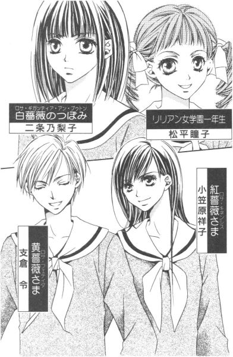
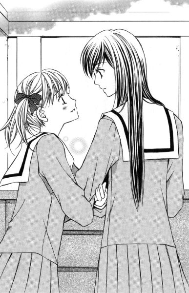
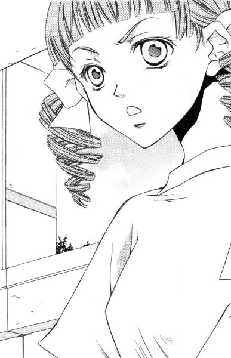
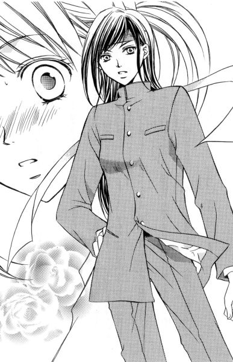
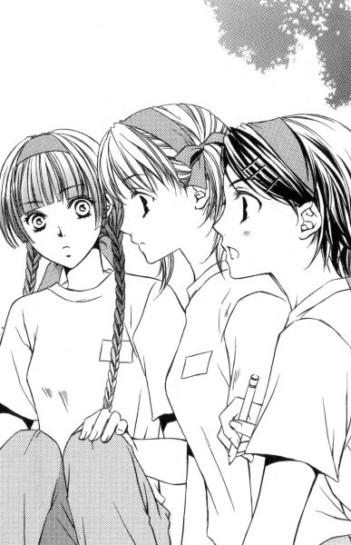
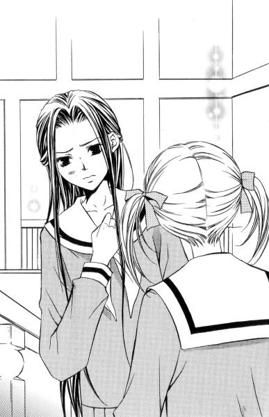

| [今野緒雪] マリア様がみてる15 | |
| 今野緒雪 | |
| (2015) | |
|
マリア様がみてる
レディ、ＧＯ！
今野緒雪
|
もくじ
可愛さ余って今日の敵
準備万端？
友の情とお姉さま
親の恥はかき捨て
ジョーカー、アンカー
罰ゲームの相場
あとがき


マリア様がみてる レディ、ＧＯ！
「ごきげんよう」
「ごきげんよう」
さわやかな朝の挨拶が、澄みきった青空にこだまする。
マリア様のお庭に集う乙女たちが、今日も天使のような無垢な笑顔で、背の高い門をくぐり抜けていく。
汚れを知らない心身を包むのは、深い色の制服。
スカートのプリーツは乱さないように、白いセーラーカラーは翻らせないように、ゆっくりと歩くのがここでのたしなみ。もちろん、遅刻ギリギリで走り去るなどといった、はしたない生徒など存在していようはずもない。
私立リリアン女学園。
明治三十四年創立のこの学園は、もとは華族の令嬢のためにつくられたという、伝統あるカトリック系お嬢さま学校である。
東京都下。武蔵野の面影を未だに残している緑の多いこの地区で、神に見守られ、幼稚舎から大学までの一貫教育が受けられる乙女の園。
時代は移り変わり、元号が明治から三回も改まった平成の今日でさえ、十八年通い続ければ温室育ちの純粋培養お嬢さまが箱入りで出荷される、という仕組みが未だ残っている貴重な学園である。
山百合会のメンバーが手伝いに駆りだされた花寺学院高校の学園祭も、いろいろあったけれど何とか終了。
さてお次はお約束、リリアンの学園祭、と行きたいところだが、ちょっと待った。
やたらと行事が詰め込まれているのが、秋の学校というもの。
秋と言えば。
読書？
食欲？
いえいえ、今回の主役はスポーツ。
──さあ、位置について。用意。
ドン！
可愛さ余って今日の敵
１
「他に立候補者はいませんか」
二年松組教室に、はきはきとした声が響く。
「では、ここからは他薦を受け付けます」
教壇付近を発信源とするその声は、祐巳のよく知っている人物のもので、クラスに充満しているゆるーい空気の中で、妙に浮きまくっている。
──つまり、何だか一人張り切っているのだ。 黄薔薇のつぼみ、島津由乃さんは。
「......ふう」
そんな友の様子をぼんやりと目の端に映しつつ、祐巳はさっきからずっと思案している。どうにかしなきゃなぁ、なんて。
月曜日の放課後である。
先生にホームルームを早めに切り上げてもらって、意気揚々と黒板の前に現れた由乃さん。脇にはなぜか新聞部の山口真美さんが控えているのだが、板書する時以外は、気配を消している忍者のごとくまったくもって目立たない。
「さて、いよいよ来週に迫りました体育祭。そろそろ我がクラスも、各種目に出場する選手を選ばなければなりません」
「えーっ」という不満の声が、教室の至る所からあがった。由乃さんがまんべんなくキッとにらみつけることによりそれは瞬時に沈静化したのだが、心の中では皆、早く掃除をして帰りたい、もしくは部活動に急ぎたいと思っているはず。口に出せばますます長くなりそうなので、黙っているだけだ。ちゃんと顔に書いてある。
そういえば由乃さん、つい忘れがちだが、真美さん共々体育祭実行委員なのだった。仕事をするのはこの時期限定であるから、委員という名前が付いているが、他の委員会活動とはちょっと違う。そういった意味では、学園祭実行委員や選挙管理委員なども仲間である。
さて、クラスには独自の個性というものがあるものだが、ここ二年松組はどちらかというと体育祭に関してあまり熱くならないクラスだった。
大体。
各クラスに一人や二人、スポーツ万能とか○○部のエースなんて呼ばれる人がいて、そういう人がスポーツのヒーロー、いやヒロインとして体育祭を引っ張っていくのが定番なのである。
しかし残念ながら、このクラスには該当者がいない。運動部に所属している人はたくさんいれども、これぞという決定打がないのだ。
そんなクラスだから体育祭実行委員だってなり手がなくて、立候補すれば、十七年間運動らしい運動もしてこなかったという由乃さんであっても委員になれちゃうわけだけれど。
「異議のない人は挙手してください」
由乃さんの声に、クラスメイトたちがパラパラと手を挙げる。話を聞いてなかった祐巳も、あわてて手を挙げる。何の決かよくわからなかったけれど、クラスの半分以上が賛成していることだから、祐巳が挙手しようがしまいが可決である。あとで蔦子さんにでも内容を確認しておこう、と祐巳は思った。恐ろしくて、とても由乃さんには聞けそうもない。
周囲に倣って手を下ろしながら、考える。やっぱり、どうにかしないといけない。
それは、細川可南子ちゃんとのことだった。
土曜日に意見の食い違いから口論となり、祐巳のお姉さまである小笠原祥子さまをも巻き込んでけんか別れのような状態になってしまった。
昨日開催された花寺学院高校の学園祭の最中は、バタバタして考える余裕もなかった。
そのバタバタのお陰で、姉妹の絆の強さを確認できて祐巳はこの上もない幸せをかみしめることができたのだけれど。
自分たち二人が幸せであればそれでいいのかと考えれば、それはもちろん違うわけで。幸せであれば幸せである分、他の人たちのことがどうしようもなく気になってしまうのだった。
祥子さまは、放っておけばいいというようなことを言っていた。
けれど一夜明けてあらためて心に問いかければ、やっぱりそのままにしておくわけにはいかない。それが祐巳の出した答えなのだった。
「でも、私クラブ対抗リレーにも出ることになってますし。二つはちょっと」
突然、背後の人が立ち上がり発言をしたので、祐巳は我に返った。
「クラブ対抗リレーは、チーム別の成績に関係ない競技じゃないですか。少しはクラスに貢献してください」
教壇の由乃さんが、多少きつい口調で切り返す。どうやら、誰がリレーに出るかという話し合いが繰り広げられているようである。そういえば、現在祐巳の後ろの席にいる軽部逸絵さんは陸上部所属である。
「そんなにクラスクラスと言うのなら、由乃さんが出られればいいんじゃないのかしら？」
逸絵さんはちょっとだけ意地悪く笑った。当然、由乃さんは動揺する。
「わ、私にリレーに出ろ、と？」
「手術なさって、丈夫になられたんでしょ。由乃さんこそ、やっとクラスに貢献できるチャンスが巡ってきたのではないのかしら？由乃さんが出場なさるとおっしゃるのでしたら、いいわ。私も承諾いたします」
彼女は、それで由乃さんが引き下がると思ったのだろう。だが、そんなことで折れるようでは、赤信号でも突き進むような島津由乃ではない。と、祐巳は十分わかっている。だが、由乃さんの本性をまだわかっていないクラスメイトたちも少なからずいる。
「どうなさる？ 緑チームのために、一緒に戦っていただけるのかしら？」
ああ、そんな風に挑発したら逆効果だってば。祐巳は必死になって背後の逸絵さんにテレパシーを送ったのだが、時すでに遅し。
「......わかりました。そんなに推薦してくださるのなら、喜んで出場させていただきましょう」
あーあ。とうとう由乃さんに火をつけちゃった。こうなったらもう、メラメラと燃え上がる炎を消す術はない。
「ただし、生まれてこの方、徒競走すら経験のない私ですから。結果最下位になったとしても、責任はとれませんけど。それでもよろしいかしら」
「この場合、参加することに意義がある、って言葉を引用するのが適当でしょうね」
クラス中の生徒が、固唾をのんで見守る。教室内に広がる、張りつめた空気。先ほどまでの、ゆるーい空気などもうどこにもない。
もはやクラスの話し合いではなく、一対一の勝負と化していた。
見つめ合うというより、威嚇し合う二人。
たぶん、どちらも「引きたい」と思っている。けれど、引いたら負けだ。
だからといって、引かずにいれば勝利が手に入るかといえば、それは違う。
なぜなら互いの意地の張り合いにより、由乃さんと逸絵さんは、皆が敬遠しているリレーの選手を引き受けなければならなくなるのだ。つまり勝者は、「二人以外の全員」であろう。
「その言葉、忘れないでね」
由乃さんは黒板の右端に書かれた「色別対抗リレー（２名）」の下に、自ら島津・軽部と書き加えると、「これですべて決まりました。ご協力ありがとうございました」と挨拶してからプイッと教壇を下りた。
「ちょっ、ちょっと由乃さん、大丈夫なのっ!?」
思わず祐巳が駆け寄ろうとすると、脇からツンツンと肩を突く人がある。
「祐巳さん、他人のことよりご自分の心配なさった方がいいんじゃないの？」
「へっ？」
振り返れば、そこには写真部のエース、武嶋蔦子さんの姿が。
「やっぱり気づいてないのか」
「な、何が？」
「さっき、思い切り手を挙げてたもんね」
クイッと黒板に向けられた、蔦子さんの親指の先には。
「『借り物競走（５名）』......？」
「──の下」
言われるまま視線を下ろすと、そこには先ほど決まったと思われる選手の苗字が並んでいる。そのラスト五番目には、何と「福沢」の文字が。
「嘘......っ」
こともあろうに祐巳は、自分で自分に一票投じてしまっていたのであった。
２
「で？」
と、ギシギシと階段を上りながら祥子さまが尋ねた。
「どうするつもりなの、祐巳は」
「出ますよ、こうなったら出るしかないじゃないですか」
後に続き階段をきしませながら、祐巳は答えた。
軽いショックも冷めきらぬまま掃除を終えた祐巳は、いつものように山百合会の仕事をすべく中庭にある薔薇の館に赴いたのだが、校舎を出たあたりで大好きなお姉さまの姿を見つけたものだから、思わず駆け寄り、夢中でしゃべってしまったというわけなのだった。帰りのホームルームで何が起きたか、ということを。
「あのね、祐巳」
「わかっています。それもこれも、ホームルーム中に上の空だった私が悪いんです。以後気をつけます」
「そうね、確かに自業自得だわ。でも」
祥子さまは階段を上りきった所で足を止め、振り返った。
「私が言いかけたのは、そのことじゃないのよ」
「は？」
「可南子ちゃんのこと。どうにかしないと、って思っているのでしょう？その算段を聞いているの」
「算段、ですか」
「そうよ」
祥子さまは鞄を下におろして、そっと壁にもたれた。目の前にあるビスケット扉を開けたら、山百合会の仲間たちが待っている。だから姉妹の話はこの先に持ち込まない。そんな線引きが、祥子さまの中にはあるのかもしれない。
それで祐巳も、最後の一段を上ると祥子さまと同じようにして、その横にそっと並んだ。
「それがなかなか手強くて」
今朝、昇降口でバッタリ会ったので手を振ると、あっさりと無視。
昼休みに一年椿組を訪ねてみたところ、ちょうど教室から出てきたので笑いかければ、顔を見るやいなや回れ右されてしまう始末。
話し合いしたくても、こんな調子じゃどうにもならない。
思い切り振った手を下ろすきっかけをなくし、笑いかけた対象が消えて引きつったまま戻らない頬を持てあまし、祐巳は途方に暮れた。とりつく島のない、とはまさにこのこと。
「あれ？ でも、お姉さまは可南子ちゃんと無理に和解することはないというお考えだったのではないのですか」
なのにどうして、けしかけるようなことを言うのだろう。
「ええ、そうよ」
祥子さまはうつむいて、小さく笑った。
「別に、考えが変わったわけではないわ。でも、私がそうしろと言ったからといって、あなたがおとなしく従うとも思えないし。それにね、可南子ちゃんとのわだかまりをなくしたいという祐巳の気持ちも、尊重したいのよ」
「お姉さま......」
並んで同じ物を見ていた二人は、ゆっくりと向かい合い、それぞれの瞳に大切な人の姿を映し出した。
「仲直りしたいのでしょう？」
「はい」
祐巳は、はっきりと答えた。
このままじゃ嫌だ。もう以前のようには親しくなれないかもしれないけれど、それでも挨拶したり普通にしゃべれるくらいの仲にはなりたい。可南子ちゃんの瞳に映っていながら、透明人間のように存在を抹殺され続けるなんて耐えられなかった。
「それじゃ、努力しなさい。仲直りしたいという気持ちを、ちゃんと伝えないと」
触れられた肩にかかるお姉さまの手の重みは、突き放すでもなく甘やかすでもなく、祐巳を程よく勇気づける。
魔法の手の平。
祥子さまの心の中でさえ、まだ言葉という名前がつけられていないような、そんな漠然とした不安定な思いみたいなものまで、ここから流れてきそうな気がした。
「報われないかもしれないわよ。でも、誠心誠意伝えてそれでだめだったら、その時は祐巳だって納得できるでしょう？そうしたら、私のところに戻っていらっしゃい。私は両手を広げて待っているから」
目を細めてほほえむ祥子さまは、マリア様のように神々しく、そして美しかった。
見つめているだけで、何だか熱いものがこみ上げてくる。
ああ、自分はどんなにこの人のことを大切に思っていることか。
しかし、あいにく好きという気持ちを表す単位も計測器もここにはないから、そのことをうまく伝えることができない。
とりあえず祐巳は、祥子さまの左腕にギュッとしがみついた。
「お姉さま大好き」
それからクルリと回れ右して、階段の手すりに手を掛けた。
「あ、祐巳!?」
「アドバイス、ありがとうございました。さっそくぶつかってきます」
大声で告げながら、祐巳は階段を駆け下りた。善は急げ。思い立ったが吉日。
お姉さまも後押ししてくれたことだし、それ行け、祐巳。どんと行け。
一階に降り立つと、加速のついたその足をゆるめず、玄関ドアを開けて外に出た。
一方。
階段を上りきった所に、一人取り残された祥子さまはというと。
「......今すぐ行くように、なんて言ったつもりではなかったのよ」

やれやれと大きなため息を吐きながらビスケット扉を開け、それから引き返して二人分の鞄を拾い上げてから部屋の中に入ったのであった。
３
この時間ではもう帰ってしまったかもしれない、と気がついたのは校舎に入ってからのことである。
同じクラスである乃梨子ちゃんの話では、可南子ちゃんは部活動をやっていないようだし、土曜日にあんな別れ方をした以上、いまだ祐巳の背後霊を続けているとも思えない。掃除が終わったら早々に帰るのが、帰宅部の正しい活動内容である。
祐巳は一年椿組教室に行きかけた足にブレーキをかけ、方向転換して目的地を変えた。
廊下は走らずゆっくりと、の最後の部分だけ「多少急いで」に差し替えて足早に進む。いろいろな学校行事を控えたこの時期、教室内や廊下などには、放課後であっても生徒の姿が多く見られた。
到着した一年椿組の下足箱の前には、見知った人の姿があった。
「瞳子ちゃん」
「......あ」
表情をゆるめて、瞳子ちゃんは「祐巳さま」と付け加えた。
「どうしたの？」
表情をゆるめた、ということは、直前まで険しい顔をしていたということだ。昇降口の外を見ていたみたいだったけれど──。
「別に」
そっけなくつぶやいて、その場を去ろうとするので、ついつい祐巳は呼び止めてしまった。
「あ、瞳子ちゃん」
だって。
可南子ちゃんのことは放っておけないけれど、瞳子ちゃんのことだってやっぱり気になるのだ。
「はい？」
振り返る瞳子ちゃん。そうなると、呼び止めた側には、それなりの理由を提示する必要が生じるわけで。
「えっと、可南子ちゃんのロッカーどこら辺かな」
取りあえず祐巳は、そう尋ねた。すると。
「可南子、ですって？」
せっかくやわらかくなった瞳子ちゃんの顔の筋肉が、キッとつり上がった。祐巳の前で瞳子ちゃんが上機嫌なことなんて滅多にないけれど、これまた特に悪い時に出くわしたらしい。
「細川可南子が、何ですって？」
フルネームで敬称略ですか、また。
そういえば、瞳子ちゃんと可南子ちゃんてあまり仲がよろしくないのだということを思い出す。そう、天敵って話だった。
「いや、もう帰ったかな、って靴を見にきたんだけど。......いいわ、自分で探すから。呼び止めてごめんね」
さわらぬ神にたたりなし。ここは、瞳子ちゃんをあまり刺激しない方がいい。祐巳は、ロッカーの蓋に書かれた名前を一つずつ確認していった。
その様子を眺めながら、瞳子ちゃんは。
「祐巳さま。あんな人、もう構うのはおやめになった方がいいですわ。今だって、......ああ不快！」
出口付近に顔を向けて、吐き捨てるように言った。
「今？ ......で、あ、あっち？」
返事はない。でも祐巳は、ありがとう、と言って駈けだした。
上履きのまま飛び出しちゃったけれど、そのことに気づいたのは昇降口から外に出てからのことだからしょうがない。引き返して靴をもたもた履き替えているうちに逃がしてしまっては、せっかく教えてくれた瞳子ちゃんに申し訳ないから、そのままゴー。
スカートのプリーツはバサバサ、白いセーラーカラーはパタパタだけど、ついでにゴーゴー。
可南子ちゃんは、マリア像より少し先を校門に向かって歩いていた。すらりとした長身に長い黒髪の目立つ姿は、探すまでもなくすぐ目に飛び込んでくる。
祐巳はスピードを落とし、可南子ちゃんの後ろ姿を眺めながらしばらく銀杏並木を歩いた。
以前と、立場が逆転している。
数日前、祐巳は背後にいるであろう可南子ちゃんを意識しながら、この道を歩いた。
それより前は、そうとは気づかずに歩いていた。
二十メートルか三十メートルか、それくらいの距離をとって後ろを歩く。そうして祐巳は、心の中にもう一度問いかける。
仲直りしたいの、と。
答えは、イエス。迷いはない。だから、お姉さまのアドバイス通り、気持ちを伝えなければ決着がつかないのだ。
距離を縮めて、声をかけるタイミングを計る。
しかし。
「あー、 紅薔薇のつぼみ。ごきげんよう、お一人ですか」
運悪く、一年生の集団に見つかってしまい、可南子ちゃんに祐巳の存在を気づかれてしまった。忘れがちなことだが、こう見えて祐巳は案外校内では有名人なのだった。
予想していた通り、可南子ちゃんは逃げた。逃げたという表現は多少語弊があるかもしれないが、事実は振り返ってそこにいるのが本物の祐巳であると確認するやいなや、スピードを速めて距離をどんどん広げていったのだ。
「ああ......可南子ちゃん」
手を伸ばしても、届かない。もともと足の長さが違う上に、祐巳は六人の一年生に取り囲まれてうまいこと追いかけられない。やっとこさ振り切って校門を走り出たところ、ちょうど停留所に停車しているＭ駅行きのバスが見えた。乗り込む生徒の中には、可南子ちゃんの姿もあった。
急げば間に合う──。ダッシュしようとして、祐巳ははたと気づいた。自分は手ぶらで、おまけに今足にはいているのは上履きなのだということを。
あと一歩、というところまで迫っていながらも祐巳は。
「......無念」
目の前を走り去っていくバスを、恨めしげに見送ることくらいしかできなかったのであった。
４
「たのもう」
「どうれ。......ってどうなさったんですか、祐巳さま」
一応のり突っ込みしてから、いつもの冷めた口調で乃梨子ちゃんが尋ねた。
翌日。二時間目と三時間目の間の休み時間。昨日のリベンジをするべく、祐巳は一年椿組教室に単独斬り込んだのである。で、たまたま出入り口付近にいた乃梨子ちゃんが取り次ぎに出た、というわけ。
「細川可南子さんに用があって参りました。取り次いでくださらない」
今日の祐巳は、いつもの「親しみがある」という売りで親しまれている祐巳ではない。背筋を伸ばし、腹に力を入れて声に張りをもたせ、目線は決して泳がせない。戦闘態勢にある（つまりは高ピーの）小笠原祥子さまをお手本に、努力で隙のない上級生という役柄を演じているのだった。
「はい。少しお待ちを」
すぐに気配を察した乃梨子ちゃんは、一礼してから教室の中へと戻っていく。頭の回転が速いというのは、こういう場合とても助かる。せっかく祥子さまを気取っているのに、その理由を一々説明なんてしていたら、苦労して作り上げたイメージがガラガラと音をたてて崩れてしまうに決まっている。
「ごきげんよう、 紅薔薇のつぼみ」
「連日お仕事お疲れさまです、祐巳さま」
教室を出入りする生徒が、扉の側にいる祐巳に挨拶していく。
「ごきげんよう」
唇にかすかな笑みを作って答える。これは、志摩子さんがお手本。うまくできているかどうか、鏡がないからわからないけれど。
そうこうしている間に、可南子ちゃんは渋々ながらやって来た。
「何か」
顔に「不本意ながら」と書いてある。クラスメイトが仲介しているために、無視することも逃げることもできなかったらしい。
「話をしたいんだけれど」
「私には話すことなどありませんが」
「あなたになくても、私にはあるの。聞いてくれるわね」
上級生として上から物を言うなんてこと、なかなかしなれていないけれど、ここはピシッと決めなければならないところだ。
しかし、敵もさるもの。そう易々とは、権威に屈してはくれない。
「あいにく、次の授業の準備がありますので今はちょっと」
チラリと、教室内に視線を送る可南子ちゃん。すると、さりげなくこちらの様子をうかがっていた一年椿組の面々は、教室の後ろのロッカーや机の脇のフックなどから布袋を取り出してその場を取り繕う。どうやら、次は体育らしい。
「じゃあ、あらためて時間をつくってちょうだい。昼休みでも放課後でも、あなたがいい方を選んで」
祐巳だって、はなから授業と授業の合間のこんな短い休み時間に話をつけようなんて思ってはいなかったのだ。話をするという約束を取り交わすというのが、今回の訪問の目的である。
今はちょっと？ 望むところだった。
「今日ですか」
「そうよ」
ここで、「いつでもいい」なんて妥協しちゃいけない。今ちゃんと日時を決めておかないと、「そのうち」「そのうち」とのびのびになってしまうから。
「都合が悪いなら、明日でもいいけれど？」
「いえ」
可南子ちゃんは、とうとう観念したようである。
「じゃ、決まり。昼休みと放課後、どっちにする？」
「......放課後に」
「場所は、土曜日と同じでいいかしら」
「はい」
「約束したわよ」
話の締めくくりに、祐巳は教室内をぐるりと見渡した。
「ここにいるみんなが証人だっていうこと、忘れないでね」
別の用事をしている振りをしながらさりげなく様子を窺っていた生徒たちが、自分たちの置かれている状況を忘れてうんうんとうなずいた。
ここまでされて、それでも可南子ちゃんが逃げきれたとしたら、それはそれで大したものである。
リリアン女学園の高等部は、姉妹制度の影響からか、特に上下関係が厳しい。一年生の可南子ちゃんが二年生との約束を理由もなく反故にしたとあっては、周囲の者たちが黙ってはいないだろう。
「お邪魔したわ。体育、がんばってね」
祐巳は、ニッコリ笑って廊下を歩き始めた。とにかく、作戦は成功した。
昨日、可南子ちゃんを乗せたバスを見送りながら、祐巳はすごく情けない気持ちになったのだ。それで薔薇の館に帰っても、首尾を、お姉さまはじめ仲間たちに報告できなくて。どうして報告できないか、って理由を真剣に考えたところ、それはやはり、自分が可南子ちゃんに対して弱気になっているせいではないだろうか、という結論に達したのである。
これ以上こじれたくないと思うあまり、つい可南子ちゃんの顔色を見ていた。気持ちの上では負けていたのだ。
悪いことをした覚えはないのだし、負い目だってない。もっと強気にでたっていいのではないか。そう気がついたから、ちょっと作戦を練ってみた。名づけて「私は上級生、あなたは下級生大作戦」。いつもながら、ネーミングセンスが今ひとつなのが情けないが。
やってみれば意外と簡単だったので、ちょっと気が抜けた。
ともあれ、勝負はこれからだ。
果たして、可南子ちゃんの心を開くことができるか否か──。すべては放課後の、話の持って行き方次第なのだ。
いつまで可南子ちゃんに見られているかわからないから、祐巳は去っていく後ろ姿にまで気を配って歩いた。途中階段にさしかかり、やっと一年椿組教室からは死角となる場所まで来たので、それをきっかけに肩の力をぬいて大きく息を吐く。
優雅な上級生を演じるのも楽じゃない。
肩のこらないいつもの自分に戻って、二年松組へと小走りで帰っていった祐巳なのであった。
５
で、約束の放課後。
掃除を終えてから一度薔薇の館に行って、二階の部屋に集合していたみんなに、ちょっと用事を済ませてくる旨告げてから出かけることにした。
「いってらっしゃい」
「私たちに気兼ねなく、ごゆっくり」
誰も理由は聞かなかった。たぶん、何となくわかってくれているのだと思う。祐巳がしようとしていることを。
「祐巳」
ビスケット扉から出た所で、祥子さまが追いかけてきて言った。
「今回、私は出しゃばらないから」
だから、一人でがんばってらっしゃい、と。
「はい」
祐巳はうなずいた。
「でも、お姉さま。私、土曜日のあの時、お姉さまが来てくださってうれしかったです。出しゃばったなんて、思っていません」
むしろ助けてくれたのだ、と感謝している。あの時お姉さまが奇跡のように目の前に現れなかったら、可南子ちゃんの振り下ろした鋭い言葉によって受けた祐巳の傷はぱっくり開いたままで、全治二週間くらいになっていたかもしれない。
こんなに早く立ち直れたのは、祥子さまの適切な応急処置とその後のケアがあってこそだって、ちゃんとちゃんとわかっている。
「そう」
祥子さまは祐巳のタイを直し、そのついでに頬を軽く撫でると、部屋に戻っていった。祐巳も回れ右して、階段を下りていく。
お姉さまの励ましがあったからだろうか。一歩一歩階段を踏みしめるたび、がんばれそうな気がしてきた。その自信は薔薇の館を出てからも持続し、校舎の裏を通って約束の場所に着いた時には、もうすでに祐巳は気持ちの上で勝っていた。まるで、『せむしの子馬』で子馬におまじないをしてもらったイワンにでもなったような気分。
古い温室には、すでに人影があった。
「祐巳さまがあんな風にクラスの人間を味方につけるから、まいてくるのが大変でした」
祐巳が中に入ると、ロサ・キネンシスの木の前に佇んでいたその人は、顔を向けながらまずはそんな苦情を口にした。
「逃げると思われたんだ？」
ゆっくりと近づきながら、祐巳は笑った。
「ええ、だからといってここまで連れてくるのもしゃくですし。目の端に外野の姿が映っているのも落ち着きませんから。待ち合わせの場所をぼかして言ってくださったのは、助かりましたけれど」
苦情一件、感謝一件。評価は、一勝一敗。
何にしても、人目がなくてもこうして二人の間に会話が成立しているのだから、昨日よりも一歩も二歩も前進していることだけは間違いない。
「お話、って」
「私、可南子ちゃんとこのままにしたくない」
「......何を言っているんですか」
可南子ちゃんは、眉をひそめた。けれど祐巳は構わず続けた。
「以前のような関係になるのは無理だってわかっている。けれど、今のままではやっぱり嫌なの」
「もはやあなたは、私の憧れていた 紅薔薇のつぼみではない。あなたは私の理想の人のイメージをズタズタに壊したんです。それなのに、今更、仲よくしろなんて、よくもおっしゃれるものですね」
「いや、仲よくしろとまでは強制しないけど」
「じゃ、もういいでしょう？ 構わないでください」
可南子ちゃんは、祥子さまに叱責されようとも、非を認めて謝罪したり自分の考えを覆す気持ちはないらしい。祐巳にしてみても、自分に向けられた可南子ちゃんの怒りに対しては、どう考えても自分が責められることではないと結論を出している。
二人は、どちらも自分が間違っていないと思っている。ならば、いくら歩み寄りたいと願っても、電車のレールのように、いつまで経っても平行線のままなのかもしれない。いくら話し合っても無駄なのだと、背中を向ける可南子ちゃんはある意味正しい。
だけれど、理屈じゃない。可南子ちゃんとの絆を断ちたくないという感情が、祐巳にはあった。
「私のことは、もう放っておいていただけませんか」
そう言われて「はいそうですか」と帰れるくらいなら、最初からこんな風に呼び出しみたいなことをしていない。下級生を威圧して従わせるなんて、似合わないことまでやって話す機会をえたのはなんのためか。
「私はね、こういうの、気持ち悪くて嫌なのよ。可南子ちゃんが私のこと、顔を見るのもおぞましいくらい嫌っているのなら、仕方ない、可南子ちゃんの精神衛生のために身を引くことにする。だとしても、そうだって可南子ちゃんの口からはっきり聞きたいの。自分で納得できなくっちゃ、嫌なの。どうなの？顔も見たくないから逃げているの？」
「......別に。もう、どうでもいいんです。今のあなたは、私にとってそういうことを考えることすら価値がない」
「可南子ちゃんの中では、人間って、大好きな人かどうでもいい人か、どちらか二種類にしか分類できないの？」
「二種類？ そんな大雑把な分け方はしていませんよ」
振り返って、可南子ちゃんは冷ややかに言った。
「殺したいほど憎んでいる、という人もいますから。正確には三種類ですね」
二種類が三種類だとしても、大雑把には違いない。
「私は今、どうでもいい人間に格下げされた状態なんだね」
殺したいと思われるほど、祐巳は可南子ちゃんの人生に関わらせてもらえているとは思えなかった。
言葉そのまま、殺したいほどの憎しみというものも、この世に確かに存在する。でも、可南子ちゃんの「殺したいと思う人」に向けられた感情は、それとは違うように感じられた。
可南子ちゃんの好き嫌いは、振り幅が広いから。本当は心から必要としている人で、「殺したい」は「愛している」の裏返しなのかもしれないのだ。
「せめて大好きとどうでもいいの間くらいになれないかな、私たち」
「しつこいですね。私なんか、もう放っておけばいいじゃないですか」
「逃げるの」
「逃げる？」
「私のことが、そんなに怖い？」
祐巳の言葉に、可南子ちゃんは「怖い？」と表情を歪めて聞き返す。
「不快なだけです。あこがれの福沢祐巳さまが、ある日突然別の人格に乗っ取られたんですから」
「乗っ取られた......」
今度は祐巳が聞き返す。当の本人には、乗っ取ったという記憶も乗っ取られたという記憶もないのだが。
「消えた方の福沢祐巳は私の双子で、宇宙飛行士になって今頃火星に行ってる！」
「は？」
「......そう思って、私と新たな関係を築かない？」
「ふざけないでください」
「大まじめなんだけれど」
可南子ちゃんの思い描いていた福沢祐巳像が勘違いであったと判明した時点で、彼女はもうこの世のどこにもいなくなってしまったのだ。それはきっと、死んでしまったのに近い。でもそれじゃあんまりだから、星に行ったことにするのがいいかな、と思ったのだ。星は手を伸ばしても届かないけれど、確かにそこに存在しているから。
「手始めに、可南子ちゃん。学園祭の手伝いをしてくれない？山百合会の、劇の」
「何で私が」
「部活やっていないんでしょ？ クラスの出し物の合間にでも、さ」
「そんな義理はありません。まるで罰ゲームじゃないですか」
「わかった、じゃ罰ゲームにしよう。可南子ちゃんが負けたら、手伝って」
「はぁっ？」
「えっと、何で勝負したらいいかな。......うん、そうだ。近いところで体育祭があるね」
いいことをひらめいた、と祐巳は思った。体育祭で決着がつけば、学園祭まで十分に時間をとれる。
しかし。
「何の競技を賭けの対象になさるんですか。私たちは、学年が違うんですよ」
「ああ、そうか。直接対決はないってことね。あ、でも、各学年共通の競技ってのもあるよね。私、『借り物競走』に出るけど」
「借り物競走......」
可南子ちゃんの口角が、少し上がった。
「何？」
「いえ、別に。らしいな、と思いまして」
高等部の体育祭における借り物競走。こと、この競技に関して、「らしいな」は褒め言葉ではない。なぜなら、狂言回し的要素が多分にあるから。
「可南子ちゃんは？」
「色別対抗リレーです」
「らしいわ」
今度の「らしい」は、間違いなく褒め言葉。
背の高い可南子ちゃんは、当然ながら足が長い。足が長いということは、かけっこするのにかなり有利なことだった。
「じゃ、どっちの色が勝つか、それで勝負しない？」
椿組の可南子ちゃんは赤、松組の祐巳は緑。
「自分の努力だけでは、どうにもならないことじゃないですか」
「そうね。ギャンブルっていうのかしら」
「ギャンブルだったら、私、黄色に賭けたいです」
「それはだめ。自分のチームが勝てるように、微々たる得点をゲットするためにがんばるの」
「わかりました」
思いの外あっさり、可南子ちゃんはその賭けにのった。
「で？ 私が......つまり赤が勝った場合は、祐巳さまは何をしてくださるのですか」
「えっ」
「私だけ罰ゲームのリスクを負うのはおかしいです。賭けというのは、両天秤が釣り合った時に成立するものではないのですか」
「ごもっともなご意見ね」
ツーとこめかみに流れた汗を、祐巳は手の甲で拭った。思いつきの提案である。詰めが甘いのは仕方ない。
「わかった。可南子ちゃんの言うことを、何でも一つだけ聞く」
「何でも？」
「あ、でも。祥子さまにロザリオを返せとか、そういう第三者を巻き込むのはなし。あと、百万円ちょうだいっていうのも、私個人ではどうにもならないことだからできないわよ。死んでください、っていうのも勘弁して欲しいなぁ」
「何でもと言う割りには、結構条件がついていますこと」
「天秤ばかりが釣り合うくらいの罰ゲーム希望」
「熟考して、お返事いたしますわ。お陰で、体育祭の日まで楽しみができました」
不敵に笑って、可南子ちゃんは温室を出て行った。
残された祐巳はと、いうと。
「私、とんでもない約束しちゃった......？」
──今更後悔しても、後の祭りである。
６
翌、水曜日のお昼休み。
乃梨子ちゃんは薔薇の館に来るなり、お弁当を食べ始めていた祐巳に真っ直ぐ歩み寄り、妙な質問をぶつけた。
「祐巳さま、いったい何をなさったんですか」
「へ？」
あまりに唐突だったので、ビックリして思わず箸の間から玉子焼きがこぼれた。幸い、落ちたのがご飯の上だったからセーフだったけれど。
「祐巳さんがいったい何をしたか、って。それこそ、いったい何なのよ？」
訝しげに尋ねるのは、ほぼ一緒にお弁当の蓋を開けて中身を食べ始めた由乃さん。まあ、これしきのヒントで何のことかわかったとしたら、今度こそ間違いなく由乃さんにはエスパーの称号が与えられることだろう。
「あの。祐巳さまは昨日の放課後、可南子さんと話をなさった、......んですよね？」
話しているうちに乃梨子ちゃんは、だんだん自信がなくなってきたらしく、語尾が少しフェイドアウト気味。
「したけど。それがどうかした？」
祐巳は首を傾げた。由乃さんじゃなくても、乃梨子ちゃんが何を言いたいのかわからない。
「それじゃ、あれは」
「あれ？」
窓に駆けよる乃梨子ちゃんを追いかけて、同じように中庭を見下ろすと、芝生の上にはお弁当を広げる生徒たちに混じって、数人の生徒がバトンの受け渡しをしている。その中心にいるのが、何と可南子ちゃんなのだった。
「率先してリレーの練習をしているんです。一昨日まで、リレーに出ることすら嫌がって、赤チームの三学年合同練習すらサボって帰ってしまっていたような人なんですよ」
「合同練習？」
「ええ。ですから、瞳子なんてカンカンだったんです。協力的じゃない、って。なのに、今朝になったら人が変わったみたいになってしまって。ですから、クラスメイトたちは、きっと祐巳さまが何か言ったのだ、と噂しているんです」
「うーん」
それは、やっぱりあれだろうか。可南子ちゃんは、祐巳との勝負に本気で勝つつもりで、特訓を始めた、と。得点の高い『色別対抗リレー』で自らががんばることにより、勝負は俄然有利になる。ちなみに祐巳の出る『借り物競走』は、箸休めのような競技なので、あまり得点配分は高くない。
「何にしても、感心じゃない」
「感心、じゃないわよ、祐巳さん。赤チームががんばったら、どうなると思っているの？我が緑チームはビリになっちゃうのよ」
お箸を振り回しながら、由乃さんが言う。
「どうして？」
「今年はね、黄色チームが優勝候補で、赤チームと緑チームが最下位争いするだろう、って前評判なのよ。ちょっと、『リリアンかわら版』チェックしていないの？」
由乃さんは手提げ袋から学校新聞を取り出すと、祐巳の目の前で紙面をパンパンと叩いた。
「何で、やってもみないのにそんなことわかるの？」
「そのクラスにいる主要メンバーを見れば、だいたいわかることよ。ほら、ここ見て」
一年二年三年の菊組で構成されている黄色チーム。短距離長距離含めて陸上部のランナーがゴロゴロいる。その他にもソフトボール部のレギュラー、バレーボール部のキャプテン、テニス部や体操部で活躍している錚々たる生徒たちの名前が上がっている。
それに対して、祐巳や由乃さんのいる緑チーム、そして可南子ちゃんや乃梨子ちゃんたちの赤チームの寂しいこと。もちろん、運動部を代表するようなすごい選手もいるのだけれど、如何せん人数が少ない。クラス分けの時に、うまいことばらけなかったようである。
最下位候補だから、練習をする。赤チームの行動は、正しく前向きだ。
「でも、白チームだってそんなに数揃っていないよ」
データを見ながら、祐巳はつぶやいた。だったら緑・赤・白は、三強ならぬ三弱ではないのだろうか、と。すると由乃さんは。
「チッチッチッ、祐巳さん白チームのジンクス知らないな」
「何、ジンクスって？」
「白チームはね。ビリにはならないの」
「ビリにならない？」
「ほら、白チームは李組と桜組の合同チームでしょ。学年によって名前が違うから弱いんだって、言われたくないんじゃない？何か、がんばっちゃうらしいのよね」
「ふーむ」
言われてみれば、なるほどとも思う。高等部の組には、ほとんど三学年共通の植物の名前がついているのだが、李組だけは一年と三年にしかなくて、その代わりに二年に一クラスだけぽつりとあるのが桜組なのだった。
「それにしても、どうして二年だけ違うんだろうね」
「それさ、何も今悩まなくてもいいんじゃないかなぁ」
そんなことより、「可南子ちゃんと何があったの」と急かす由乃さん。乃梨子ちゃんも、興味津々に身を乗り出す。
「私はただ、体育祭で競争しようって言っただけよ。赤が勝つか、緑が勝つか」
「なんだ、そうなんですか」
乃梨子ちゃんの気の抜けた声を、祐巳は聞き返す。
「なんだ、って？」
「もしかしたら、祐巳さんが細川可南子さんを妹にしたのかもしれない。乃梨子はそう思ったのでしょう？」
いつの間に部屋に入ってきたのか、志摩子さんが三人の背後から言った。
「はい。あの可南子さんがクラスのためにがんばる気になるとしたら、それはお姉さまの命令に従うという形以外にはあり得ない、と」
「彼女のお姉さまと聞いて、まず思い浮かぶのは祐巳さん、ってわけか」
「祐巳さまは昨日、とても目立つ行動をなさってましたし。私も、クラスメイトたちの憶測に惑わされて、てっきりそうだと......。ただ緑チームに勝ちたいというだけで、可南子さんがあんなに張り切るとは思わなかったので」
いや、ただではないから張りきっているのだ。
「でも変ね。可南子ちゃんって、祐巳さんの信奉者なんじゃなかったの？どうして、敵味方に分かれてはりきるわけ？」
「ははは。勘違いしていたことに気づいたみたい」
「じゃあ、可愛さ余って、ってやつなの？何て生意気な一年生」
由乃さんが手近にあったカーテンをぞうきんのように絞ると、居たたまれなくなったように乃梨子ちゃんが言った。
「すみません」
これこれ、乃梨子ちゃん。
たとえクラスメイトに不手際があったとしても、クラスを代表して謝る必要なんてないんだよ。
しかし、これくらいのことで結構な騒ぎになってしまうのであれば、勝負の先に待ちかまえている罰ゲームに関しては言わないでおいたほうがいいようだ。
「祐巳さん、いい？ 絶対に赤チームにだけは負けちゃだめよ」
ここに一人、赤チームの人間（乃梨子ちゃん）がいるということを無視して、由乃さんはギュッと手を握ってきた。
「そうと知ったら、ぼんやりしていられない。緑チームも、明日からリレーの選手集めて特訓するように団長に働きかけないと」
あの、もしもし、由乃さん。祐巳が声をかけようとしたところで、黄色と紅の二人の薔薇さまが部屋に入ってきた。
「おー、何だか張り切っているね、由乃。体育祭で何か面白いことでもあるの？」
妹が元気だと、それだけで嬉しそうな令さまは。
「あっち行って、お姉さま。黄色チームだって、敵よ敵」
シッシッと、まるで猫でも追い払うかのように、由乃さんに手で軽く遠ざけられてしまった。
「あ、祥子さまは味方だからこちらにいらして。体育祭、がんばりましょうね」
「え？ ええ......」
祥子さまは由乃さんの迫力に押されて、あやふやにうなずいた。
考えてみれば、黄薔薇ファミリーも白薔薇ファミリーも、別のチームで戦うことになるのだ。
二年藤組の志摩子さんは紫チームで、一年椿組の乃梨子ちゃんは赤チーム。
三年菊組の令さまは黄色チームで、二年松組の由乃さんは緑チーム。
唯一、紅薔薇ファミリーのみ、どっちも松組ということで敵味方に分かれずにすんだけれど。山百合会幹部に限らず、姉妹が分かれて戦うのって、体育祭の日一日だけのこととはいえ、きびしいものがありそうだ。
「由乃ぉ」
令さまの情けない声が耳に届くにつけ、お姉さまと同じチームでよかったと思う祐巳なのであった。
準備万端？
１
マリア様の心のごとく、包み込むような広い青空。
雨なんて降るときは降るものだけれど、こうもからりと晴れ上がると、「日頃の行いのたまもの」とか「マリア様がお味方くださったから」とか、つい言ってみたくなるものである。特に、カトリックの女子校では。
というわけで。あんなことこんなこと、いろいろありつつも、リリアン女学園高等部は晴れて体育祭の日を迎えた。
「体操着よーし。お弁当よーし。じゃ、行ってきまーす」
玄関で指さし確認をして、さあ出かけるぞというまさにその時。さいごの、「行ってきまーす」を聞きつけて。
「ああっ、祐巳ちゃん」
呼び止める者ありけり。
「何？ 招待券だったら、昨日のうちにお母さんに渡しておいたけど」
当たりを付けて答えてみたものの、やっぱり外れだった。
「格好、これでいいかな」
クリーム色のポロシャツを着て、不安げに上がりかまちから娘を見下ろす父。手には、迷っている最中だったのであろう、数枚の服が握られている。
「いいんじゃないの？ どうでも」
「どうでも、って。ちゃんと見て、これがいいって選んでくれよ」
着慣れた物からまだ袖を通していないおニューまで。いったい何着が最終候補に残っているのやら。あ、よく見ると、中には祐麒のシャツも混じっている。
「あのさ、今日は娘の体育祭なんだから。お父さんがファッションショーする必要ないんじゃないの？」
今日は日曜日。
お父さんは運良く仕事も入ってなかったので、体育祭を観に来ることになったのだった。でもって、ちょっと興奮気味。
「でも、他のお父さんたちに比べて見劣りしたら......。お父さんが場違いな格好していって、祐巳ちゃんが恥をかくなんてことがあっちゃいけないだろう？何てったって、うちの娘はロサ・キネンシンスの妹なんだし」
「......キネンシスだよ」
お父さんは、ヒヤシンスと混同しているようだ。どっちもきれいな花だけれど、思いっきり種類が違います。
「祐巳ちゃん、頼むよ」
考えすぎて、訳がわからなくなってしまったらしい。何にしても娘にピシッと選んでもらえればそれで満足するだろうから、祐巳はちょこっと迷ってから決定した。
「じゃ、右手に持っているポロシャツ。お父さん、グリーンが似合うし。緑チームの私のラッキーカラーだよ、たぶん」
別に今着ているクリーム色だっていいんだけれど、それだとあまり「決めてもらった感」がないだろう。ちゃんとした理由があれば、お父さんも気持ちよく着られるはずだし。
「うん、わかった。......でも、スーツじゃなくていいのかな」
左腕に引っかけているのは、チャコールグレーの上下スーツ。これが授業参観なら、ベストチョイスかもしれないけれど。
「親父。体育祭って運動会だよ？ 応援する父兄だってさ、ラフな格好が一番じゃないの？」
祐麒が大あくびしながらやって来て、お父さんの手からスーツを取り上げた。ついでに自分の私物を見つけて、それも引き抜く。
「お父さんはね、祥子さまのお父さまに密かなライバル心を燃やしているのよねー」
玄関で騒がしくしているので、お母さんまで出てきて会話に参加した。
「でもね、祥子さまのご家族はいらっしゃらないそうよ」
以前祐巳が小笠原家の別荘にお呼ばれした際、パニックのあまりコシヒカリ騒動を起こしたお母さんが、今回は妙に落ち着いていたのは、事前にそのことを知っていたせいだった。
「つい言い忘れちゃった。ごめんなさいね」
悪びれもせず笑うお母さん。そこで、祐巳がすかさずフォロー。
「親戚の結婚式があるんだって」
「......日曜日だもんな」
一気にテンションが下がったようで、お父さんは背中を向けると、両手で抱えた服をクローゼットに戻すべく廊下をとぼとぼと戻っていった。それに続く弟に、祐巳は声をかけた。
「祐麒は？ 来るの？」
「行かない」
「どして？」
「どうして、って。でかける予定があるから」
ぶっきらぼうに答えて、弟退場。
「......って言うけれど、恥ずかしいのよ本当は。ねーえ。祐麒のお弁当も作っておいたから、お昼になったら食べなさいね」
すると奥の方から、弟の「うん」っていう返事が。うちでお昼ご飯を食べる、......ということは、やっぱりでかけるというのは口からでまかせということか。
首をすくめて笑うお母さんを見て、祐巳は感心した。夫や息子の考えていることはすべてお見通しとは、さすがである。
「しかしなぁ」
女子校の体育祭が恥ずかしいかね。
「年頃の男の子の微妙な心理。......祐巳ちゃんには、まだわからないのね」
「うっ」
この上、娘の心までも読むか。侮りがたし、母。
「張りきるのはいいけれど、けがなんかしないようにね。勝負は二の次。おうちに帰るまでが体育祭なんだから」
「それを言うなら、遠足でしょ？」
「応用だってば」
お母さんは、笑って送り出してくれた。
「行ってらっしゃい。後で、お父さんと観に行くからね」
「うん。行ってきます」
元気に返事をして、祐巳は玄関を出た。
抜けるような青空に深呼吸。
勝負は二の次。
でも、その先に待っているものが罰ゲームだとしたら？
あまり悠長なことも言っていられないのであります。
２
学校に着いてすぐ一年椿組に行ってみたが、可南子ちゃんの姿は見あたらなかった。
「荷物があるので、来てはいるようなんですが」
乃梨子ちゃんが教室内を見回す。
「制服が畳んでありますから、体育着に着替えて......どこかでリレーの練習をしているのかもしれません」
「......朝練か」
何か、すごく力が入っているようである。体育祭が始まる前に、罰ゲームの内容を聞いておこうと思ってやって来たのだが、一気に聞きたくなくなってしまった。
「可南子さんが戻りましたら、祐巳さまの教室に行くように伝えましょうか。それとも、何か言づてでもあれば──」
「あ、いい、いい。急ぎの用じゃないし、それに体育祭が始まれば、グラウンドとかで会えるだろうから」
手をひらひら振って、祐巳は後ずさりした。何もあわてて立ち去ることもないのだけれど、乃梨子ちゃんと話していると、うっかり口から余計なことが滑り出してしまいそうだから「じゃね」なんて言って、そのまま背中を向けた。
「あ、祐巳さま？」
乃梨子ちゃんは、不思議そうにつぶやいたものの、追いかけてはこなかった。その代わり、教室を飛び出してきたのは、別の人物だ。
「祐巳さま」
名前を呼ばれると同時に腕を掴まれ、祐巳は振り返った。するとそこには、すでに体操着に着替えた少女が一人立っている。
「......瞳子ちゃん？」
いつになく真剣な表情で、瞳子ちゃんは祐巳を見つめて言ったのであった。
お話が──と。
「細川可南子と、何か約束したんですか」
人気のない非常階段に場所を移動して、瞳子ちゃんは言った。
「乃梨子さんは、単に緑チームに対抗意識をもっているだけだって、クラスメイトに説明していましたけれど......」
少し間をおいて、続ける。
「でも。私はそれだけじゃないと思います」
中庭ではどこかのクラスが早々と準備運動でもしているようで、「一、二、三、四」というかけ声が聞こえてくる。祐巳は、両手を手すりにかけて伸びをした。ここからは、薔薇の館も見えた。
「そんなことで、彼女は動くはずありません」
「五、六、七、八」を待ってから、瞳子ちゃんはつぶやく。
「祐巳さまが、ただ『お互いがんばりましょう』なんて言うためだけに、細川可南子を呼び出したとも思えない」
「......よくわかっているんだ」
祐巳は、そこでやっと口を開いた。瞳子ちゃんの「お話」の内容は、やっぱり可南子ちゃんがらみであったようだ。
「祐巳さまは、何を企んでいるんです？」
「企む？」
聞き返したものの祐巳は、「企む」という言葉がすごく言い当てられている気がして、ちょっと唇の端が上がってしまった。
「何を企んでいるかは知りませんが、彼女、このところすごく生き生きして楽しそうにしていますよ」
それとは逆に、楽しくなさそうにつぶやく瞳子ちゃん。鼻息は荒い。
「よかったじゃない」
祐巳がそう言うと。
「よ、よかったですって!?」
瞳子ちゃんのトレードマークであるコイルのような縦ロールがブルンと揺れ、同時にカモメの羽ばたきみたいに眉毛がつり上がった。
「えっ、違うの？ 可南子ちゃんに、クラスのみんなと足並み揃えてがんばる気持ちが生まれたんだもの。それは、瞳子ちゃんにとってもプラスでしょ？」
協力的でない可南子ちゃんに、間違いなく腹を立てていた瞳子ちゃんである。
「そんなこと、わからないじゃないですか。一見いいように見えたって、長い目でみれば結果がマイナスだったということだってあるんです。いいですか、祐巳さま。細川可南子が自発的にやる気を出したなら、私だって何も文句は言いません。でも、もし祐巳さまが、何か引き替えの条件を出して働きかけをした結果だとしたら──」
文句があるわけなのね、瞳子ちゃん。それにしても、結構いい推理している。
「笑い事じゃありません」
「ああ、ごめん」
祐巳は、目の前の少女があまりに真面目に抗議するので、何だかいじらしくなって、まだお姉さまにさえ打ち明けていなかったことを、つい口にしてしまった。
「チーム戦で負けた方が言うことを一つ聞く、って私と可南子ちゃんの間で約束が交わされたの」
「えっ!?」
「だから、張りきっているんじゃないかな、可南子ちゃんは」
「──」
不意打ちで聞かされた瞳子ちゃんは、絶句した。祐巳は、ここまで話してしまったわけだから、ついでとばかりその内容までも白状することにした。
「ちなみに可南子ちゃんが負けた場合、山百合会の劇を手伝ってもらうことになってる」
「ぎ、......逆は？」
「まだ聞いていない」
「馬鹿なんじゃないですか」
先輩に対して、相変わらず容赦ない物言いをする子である。
「妹にしてください、って言われたらどうするおつもりです」
「それはないと思う」
たとえ祐巳から申し込みがあったとしても妹の件は辞退すると、以前新聞部に話したことのある可南子ちゃんである。あれは確か、まだけんか別れする前の話で。関係がこじれてしまった以上、その線は、だからなくなったと思っていい。
「そんな保証、どこにもないです」
「そりゃ、そうだけれど」
「人の気持ちなんて、変わるものだし」
「ごもっとも」
だけれど、やっぱり祐巳には可南子ちゃんがそんなことを要求するとは、どうしても思えないのだった。
でも、もし妹にしてください、と言われたら──。
その時は、言われてからどうするか考えよう。言われてもいないことをあれこれ悩むのは、時間の無駄。そんな暇があるのなら、借り物競走で無様な走りを見せないように、足の筋でも伸ばしておいた方が賢明なのだ。
「祐巳さまはどうして、そこまで細川可南子に寛大なんですか」
瞳子ちゃんは、ため息ついでにそう言った。
「寛大？」
「だって、細川可南子は、祐巳さまにひどいことをしたんでしょう？」
「どうしてそんなこと......」
あの場にいたのは、祐巳と可南子ちゃん、そして祥子さまだけ。祐巳を除く二人のうち、どちらも漏らすとは思えない。
「どなたかに聞いたわけではありません。ただ、私がそう感じただけです」
「そっか」
よーく観察していれば、感覚的にわかってしまうことがあるのかもしれない。特に瞳子ちゃんは、可南子ちゃんを天敵と見なしているわけだから、何をやっているのか常に気になる存在だろうし。
テスト一つをとってみても、数学や物理や化学のように、材料が与えられていて、それを解くための式に当てはめさえすれば誰でも導き出せる答えばかりではなく、「だってそう感じ取れたんだから」という漠然とした理由で解答用紙を埋めてしまえる、国語の文章題があることだし。
「彼女は甘えています。自分の置かれた環境を儚んで、かわいそうだって自分自身を哀れんで。世の中には、それくらいの人ゴロゴロいます。もっともっと気の毒な人だって、たくさんいるというのに。自分ばかりが不幸だって拗ねているのを見ると、私無性にイライラするんです」
吐き捨てるように、瞳子ちゃんは言った。「それくらいの人」やら「もっとお気の毒な人」やらの代弁をするかのように。
「感じ方は人それぞれだよ。同じけがをしても、人によってダメージは違うんだ」
「でも、客観的に判断できることだってあります。擦り傷と骨折。比べた場合、痛くないのはどちらでしょうね」
そりゃ、一般的には擦り傷だろう。けれど可南子ちゃんの傷が擦り傷程度のものかどうか、外から判断をくだせることではないだろう。
「そうか。瞳子ちゃんは、可南子ちゃんの事情を知っているんだ」
「ええ。こちらは、人から聞いたことですが。どの程度のことか、祐巳さまにもお知らせしましょうか？彼女、お父さまが──」
「やめて、瞳子ちゃん」
祐巳はストップをかけた。
「私、聞くつもりはないよ」
「......祐巳さま」
瞳子ちゃんは、ちょっと驚いたみたいに、並んで立っている祐巳の顔を見つめた。どうやら、無条件で聞きたがると思っていたものらしい。
「可南子ちゃんが私に直接話したいというなら、聞く。でも、今の私には瞳子ちゃんに聞いてまでそれを知る必要はないんだ」
瞳子ちゃんに話をしながら、祐巳は自分の考えが徐々にまとまっていくのを感じていた。
「可南子ちゃんに何があったか、それは二人の賭けには無関係なの。瞳子ちゃんは、私が負けた時のダメージまで心配してくれているのかもしれないけれど、私にとって大切なのは今日の体育祭の勝敗じゃないんだ」
「何なんですか、それは」
眉間にしわを寄せて、瞳子ちゃん。まるで、聞いたことのない言語を初めて耳にしたかのように。
「可南子ちゃんがこの勝負を受けたということ。それが、たぶんそれにこそ価値があると思うんだ」
「言っている意味が、よくわかりません」
祐巳の言葉の意味を理解しようとかなり努力はしていたみたいだけれど、結局瞳子ちゃんはギブアップのようだった。
というわけで、祐巳は特別に瞳子ちゃんにだけ教えてあげることにした。
「私は、可南子ちゃんと関わりたかっただけなの。勝負とか賭けとかそんなことをしている間は、可南子ちゃんは私と話をしてくれるでしょ。それが目当てなの」

聞き終わるやいなや、瞳子ちゃんはうつむいて絞り出すようにつぶやいた。
「おめでたい」
「へ？」
「本当に、考え方がおめでた過ぎます、祐巳さま」
顔をガバッと上げて、瞳子ちゃんは挑むように祐巳を見た。
「そんなことをすれば、ますます細川可南子を増長させることになるって、どうしてわからないんですか。私、祐巳さまのそういう甘いところ、大嫌いです。本当に、それで、よく 紅薔薇のつぼみが務まっていらっしゃると思います」
「えっ」
あたふたしていると、瞳子ちゃんはこれ以上話をしていても無駄と思ったのか、祐巳に背を向け、非常口のドアノブに手を掛けた。
で、そのまま開くと思いきや。
「あ、そうそう」
言い忘れたとばかりに、クルリと振り返る。
「一つ訂正がありましたわ。何か勘違いされているようですけれど、私、祐巳さまの心配なんてまったくしていませんから」
「あ......そう」
「そうです。では、失礼。祐巳さまも、こんな所でいつまでもぼやぼやされていないで、早く教室にお帰りになったほうがよろしいのではないですか？制服で体育祭に参加されるおつもりでないのなら」
不敵な笑顔を残して、校舎の中に消えていく縦ロール。
「こんな所でぼやぼや......だと？」
教室に向かおうとしていたところを呼び止めて、「こんな所」に連れてきたのはどこの誰だと思っているんだ。しかし苦情を言おうにも、相手の姿はもはやここにはない。
「瞳子ちゃんのやつ」
ぼやきながらも祐巳は、自分が笑っていることを自覚していた。
言いたい放題に言われたのに、それほど不快じゃないのはなぜだろう。
「甘いところが大嫌い、だって」
つぶやいてから祐巳は、早足に二年松組教室へと急いだのだった。
３
いつものように放送による朝拝の後、簡単なホームルームが行われた。
「とかく張り切りがちになるけれど、羽目を外さないように。大けがをして修学旅行に行けなくなった先輩が、過去にはいたからね」
担任の先生の諸注意は、前半部分はお母さんとほぼ同じで、後半部分は脅しに近い内容であった。
修学旅行に行けないほどの大けがとは、どれほどのものなのだろう。骨折とかむち打ちとか全身打撲とか──、クラス中の生徒たちが一瞬のうちに黙り込んだ。すごく痛そうだけれど、それ以上に修学旅行に行けない痛手の方が大きいと思う。
だって、修学旅行といったら。高等部三年間の中で、ベスト５には入るであろうメインイベントだから。体育祭も学園祭も一年に一回は巡ってくるものだけれど、こちらはただの一回こっきり。逃せば一生悔いが残る。
「毎年言っているけれど、二年生にはやっぱりこれが効くね」
愉快そうに、先生が笑った。途端に、非難の声があがる。
「えっ、じゃまるっきりの嘘なんですか」
「嘘じゃない。十年くらい前に一人いた」
だから気を引き締めるように、と先生は締めくくった。
「はい、祐巳さん」
前の人から貴重品袋が回ってきた。隣の人と祐巳の分と、お財布や時計なんかを巾着袋に入れて後ろの席に渡しているうちに、プログラムが配られ、いつの間にか由乃さんと真美さんが教壇に立っていた。
「いいですか、仕事の受け持ちがある人以外、九時五分前には所定の集合場所に集まってくださいね。我が緑チームはどこでしたっけ？」
由乃さんの呼びかけに、真美さんが耳をすますポーズをして、クラスメイトたちに答えを強要する。
「図書館側のスペースでーす」
子供だましの受け答えではあるが、みんな浮かれているからつきあってくれる。
「その通りです。では、仕事を割り当てられている人は、持ち場についてください。では、後ほど。健闘を祈ります」
力強く宣言して、由乃さんたちは意気揚々と教室を出て行った。来賓の入場チェックをサポートするために、校門へと向かったのだ。
女子校だから。各行事には、無関係の人が入り込まないように厳しいチェックがある。学園祭や卒業式なんかももちろんそうだが、体育祭が一番厳重に警戒される。リリアンの体育着はあまり露出が多くないけれど、それでも一般的に人目にさらされない姿だからなのか、「見たい」と思う人が多くいるらしい。生徒の氏名入りのチケットを作ったり、卒業名簿でチェックしたり、これでけっこう大変なのだった。
クラスメイトたちがばらけたので、祐巳も席を立った。蔦子さんが尋ねる。
「あら、祐巳さんも何か仕事を？」
「ええ。体育館から応援グッズを運ぶことになってるから」
「ああ、例の応援団の衣装とかか......」
蔦子さんは、クラスに割り当てられた仕事をする係から外れていた。雑用をしてもらう暇で写真を撮ってもらいたいという、クラスメイトたちの希望によるもので、自分たちのみならず、お姉さまの走る姿だの、薔薇さまの踊る姿だの、陰でたくさんのリクエストをされたらしい。変わったところでは、予行演習でみかけて一目惚れした三年某組の応援団長の写真を、なんていうのもあったようだ。
ちなみに祐巳の場合は、お姉さまである祥子さまが応援団のメンバーということで、「少しでも一緒にいたいでしょ」なんてことを言われて、応援団の荷物運びの仕事を仰せつかったのである。融通をきかせて役割分担するというよりも、上手いこと言いくるめられてしまったといった感じ。でも、祥子さまの側に少しでもいられるなら、ま、いいか。
「蔦子さん、いい写真とってね。それで、私にプリントしてちょうだいね」
祐巳は、ちょっとしなを作ってお願いした。瞳子ちゃんの真似して、甘えるみたいな目つきで。
「祥子さまがいいって言ったらね」
素っ気なく答えた蔦子さんは。盗撮みたいに写真を撮りまくるけれど、本人の許可なく発表したり流出したりしないという主義。首を横に振られれば、どんなにいい写真であろうとネガごと燃やすのが彼女流の「筋」である。
しかし。誰の、と言わなくても、蔦子さんにはお見通しらしい。まあ確かに、祐巳が欲しがる写真の被写体なんて祥子さま以外にいないのだが。
「祥子さまが嫌って言ったら？」
「言うはずないでしょ。それより、二人一緒に撮ってあげる。去年の体育祭の雪辱を果たせるわよ」
「一緒に、か」
目指せ、脱、豆粒だのちび鉛筆だのの世界。今年は同じ緑の鉢巻き締めて、二人並んだ写真をアルバムに貼れる。......かもしれない。
「あー、もう目がいっちゃっているよこの人は。妄想は後回しにして、早く体育館に急ぎなさいよ。ぐずぐずしていると、また注意されるからね『遅いわよ、祐巳』って」
「はいっ」
ちょっとばかし似ている物真似に、思わずピシッと気をつけして敬礼。
「おいおい、私は祥子さまじゃないってば」
蔦子さんは呆れながらも、すかさずカメラを構えてカシャッとやった。
体育館の緑チームスペースには、すでに祥子さまは到着していたが「遅いわよ、祐巳」はなかった。
「ああ、祐巳。あなたね、そこの太鼓とバチを持っていってちょうだい。グラウンドの応援席に」
「はーい」
今日は初めて顔を合わせたというのに「ごきげんよう」もなく、いきなり本題。こういうちょっとしたことを見つけて、祐巳は「自分たちはずいぶん自然な関係になったものだな」なんて思う。
由乃さんと令さまのような、熟年カップルの域に達した姉妹にはまだまだ遠く及ばない。けれど、うれしい。一年前、ただ見つめることしかできなかったあの頃のことを思えば、夢のようだ。
──と、視線を感じて振り返ると、少し離れた赤チームのスペースから瞳子ちゃんがこちらを見ていた。瞳子ちゃんは祐巳が顔を向けると同時にそっぽを向いて、何やら作業をし始める。けれど、それはあっちの物をこっちに移動し、それをまた元の位置に戻すといった、まったく意味のない行動なのである。
上の空の瞳子ちゃん。大好きな祥子さまを見ていたのかな、とも思う。
「遅くなりましたっ。三年生、二年生のお姉さま方、ごきげんよう。本日はよろしくお願いいたします」
一年松組の荷物運び二名が、遅れて到着してきてほぼ九十度でお辞儀をした。
「いいのよ。一年生にとっては初めての体育祭だから、担任の先生が細かく注意されていたんでしょう」
祥子さまの脇で衣装のチェックをしていた応援団長が、笑いながら言った。なるほど、下の学年ほどホームルームに時間がかかるものかもしれない。でもって、祐巳も叱られなかったというわけか。
「あの、祐巳さま。私たちは何を......」
体育館から太鼓を運び出そうとしていると、一年生がおどおどと尋ねてきた。指示を出してくれるべき応援団長は、お隣さんであるピンクチームの団長と何やら交渉をしていて気づかないし、副団長（祥子さま）はたった今、応援団の衣装を持って出ていったばかりである。
「これ、応援席に運べばいいですか」
「あー、旗はね。まず入場行進に使うから、持っていかないで。同じ理由でプラカードもペケ。こっちの段ボールは午後から使うって言っていたから、後から運ぶ段取りだと思うし」
なんて言っていたら、もう何も残らなくなってしまった。けれど、せっかく手伝いにきてくれたわけだから、ここでお留守番をしていてもらうだけというのもかわいそうだ。
「わかった。じゃあ、この太鼓を持っていって。それとバチ」
ミニチュア版和太鼓とバチを、一人ずつに手渡して送り出す。
「どこかで紅薔薇さまと会うと思うから、そうしたら置き場所を確認してね」
「はいっ。ありがとうございます」
仕事をもらったのがそんなにうれしいか、と思うほどの笑顔で、二人の一年生は体育館を出ていった。つられて祐巳も笑顔で手を振っていると、背後からボソリと声がした。
「 紅薔薇のつぼみ、ずいぶん頼もしくなったわね」
ドキリとして振り返ると、いつの間にか緑チームの団長が戻ってきていて、腕組みしてうんうんとうなずく。
「祥子さんも安心ね」
「えーっ」
と声を出してしまってから、祐巳はあわてて「失礼」と取り繕った。せっかく褒めてもらったのに、品のない声をだしたりしたら台無しだ。
「......恐れ入ります」
だって、今朝方、「それでよく務まっていること」と批判されたばかりなのだ。思い出しながら赤チームのスペースをチラリと見ると、先ほどの場所にもう瞳子ちゃんの姿はなかった。
（......何だ）
何を期待していたのだろう。少しだけ、気が抜けた。
一年生二人と祥子さまは、体育館に一緒に戻ってきた。ちょうど時間的にいい頃合いだったので、その場にいた緑チームの生徒たちはまとまって、図書館の側の、待機スペースへと向かった。
さっき荷物運びをしなかった祐巳は、緑色の旗を持ってチョコチョコと祥子さまの後に続いた。ちょうど、横綱土俵入りの際の太刀持ちみたい。いつもながら、祥子さまは偉そうだからピッタリはまる。
先に入場する三年生の先頭にスタンバっている団長に旗を手渡し、二年生の列に向かいかけると、祥子さまが「祐巳」と呼び止めた。
「はい？」
振り返った祐巳の目に飛び込んできたのは、お姉さまの勝ち気な表情。そして、人差し指を立てて一喝。
「最下位争いなんてバカげているわ。いい？ やるからには、狙うのは優勝。赤チームなんて目じゃないわ」
高慢で、高飛車で、そしてまばゆいばかりの美しさ。やっぱり、祥子さまは格好いい。ピシッと命令されると、電気が走ったみたいに全身がブルッとする。
「はいっ！」
元気よく返事をすると、祥子さまは満足そうにうなずいた。
「それでこそ、私の妹よ。がんばりましょう」
二年生の列に並びながら、祐巳は「それにしても」と思った。由乃さんが熱く語っていた時には、さほどのっていなかったようなのに、祥子さま。本番当日を迎えて、にわかに勝負魂に火がついたのだろうか。
集合時間ギリギリになって由乃さんと真美さんが到着し、二年松組は全員揃った。
「どう、お客さんの入りは？」
「大盛況。いやー、予想はしていたけれど、親御さんたち来るわ来るわ。皆、娘の晴れ舞台を観ようとつめかけてる。うちの両親なんて招待券出す前からうるうるしちゃって、恥ずかしいから思わず他人の振りしちゃった。でも、令ちゃんのお父さんに見つかっちゃってさ」
心臓の手術をするまでは、まともに運動会や体育祭に参加したことがなかったという由乃さん。今年は初めて入場行進やダンス以外に挑戦するとあって、ご両親の喜びもひとしおなのであろう。その上、体育祭の花形、色別対抗リレーに出るというのだから。
「うちの両親、ちゃんと着いたかな」
独り言のような祐巳のつぶやきを聞きつけて、由乃さんは。
「うん」
と、思い切り肯定した。
「嘘。どうしてわかったの？」
「だって。招待券に、ちゃんと生徒名が書いてあるじゃない。ま、それがなくても、わかったとは思うけれど。......祐巳さん、っていうか、福沢姉弟はお父さん似なんだね」
「ふあ」
「緑のポロシャツ着てたでしょ」
だめ押し。それを知っているということは、由乃さんの口から出任せではないらしい。
「何か、恥ずかしいね」
自分のいない場所で、両親が親友と対面する。想像したら、背中がこそばゆくなってきた。
「大丈夫。優等生モードで、ご挨拶しておいたから」
「優等生といえば」
二人の会話を黙って聞いていた真美さんが、突然口を開いた。
「前薔薇さま方はいらっしゃるのかしら」
「さあ」
「リリアン女子大の佐藤聖さまは置いておいて、鳥居江利子さまと水野蓉子さまは絶好のお里帰り。お二人とも何も聞いてらっしゃらないの？」
こくん、こくん。由乃さんと祐巳の首が一緒に縦に上下した。現薔薇さまで妹でもあった令さまや祥子さまならまだしも、つぼみごときが先代の情報なんてそうそうキャッチできるはずはいない。チケットを送るなんていうことすら、今の今まで考えつかなかった。
「そうか。......でも、競技が始まってからだって入場できるわけだし。たまに客席に目を光らせることにしましょう」
由乃さんたちが戻ってきたから、入場受付は締め切ったものかと思ったが、そうではないらしい。
「ピークが過ぎたから、後は先生たちに任せてきただけよ」
「先生？」
「講師の先生とか、あと中等部の先生とか。体育祭に直接タッチしていない先生方の手をお借りしているのよ。何はともあれ、生徒が入場行進に出ないことには始まらないでしょ」
由乃さんの言葉を裏付けるように、どこかに散っていた生徒たちがわらわらと集まってくる。救護テントに待機する保健委員も、得点係も。入場行進をしないのは、実況をする放送委員くらいなものである。
午前九時。
パンパンと、空砲が鳴り響く。
『ただ今より、各チームの入場を行います』
マイクの音が、待機中の生徒たちの列に小さな興奮をもたらす。
そして。
『白チーム入場』
祐巳二年生の体育祭が、いよいよ始まったのであった。
友の情とお姉さま
１
白、紫、黄色、ピンク、緑、赤。
それぞれの旗のもと、同じ色の鉢巻きを頭に巻いた乙女たちがトラックの内側に整列している。
校長先生の開催宣言。
各チーム団長による宣誓。
そしてラジオ体操──。
体育祭に限らず、行事なんてものは始まってしまえばノンストップ。やっている本人たちはそのまっただ中にいる時は無我夢中だから、気持ちにも身体にも時間にも余裕がないものである。
仮に「楽しみ」というものを数値で表せるとしたら、十のうち七や八くらいは本番前の準備期間のうちに消化しておかないことには、達成感なんてものはなかなか得られないものであろう。
トラックの外側、カーブ付近にある家族席は、満員御礼の垂れ幕を掲げたいほどのすし詰め状態だ。あまりのギュウギュウぶりに、見かねた先生方が、自分たちのスペースを半分ほど削って提供したという話だが、それでも中に入りきれずに立ち見をしている父兄たちがたくさんいた。
退場門をくぐる直前、祐巳は参観日の照れくささで、家族席に視線を向けてみた。席とは名ばかりで、ビニールシートに体育座りしている父兄たちに混じって、福沢夫婦もいた。目があったお父さんは、カメラをスタンバイしたままうれしそうに大きく手を振る。祐巳は、あわてて背中を向けた。
家で会っている両親を学校で見つけただけで、どうしてこうも恥ずかしいのだろう。緑チームのエリアに急ぎながら考えたが、その謎はすぐにはとけそうもなかった。
生徒たちの応援兼控えのスペースも、トラックの外側、こちらは直線部分にある。
ロープで色ごとに六つに仕切られた空間は、後ろに行くに連れて緩やかな上り坂になっており、ナイロンシートを敷きつめた上に、各チーム学年の別なく一緒に収容される形になっている。
背後には、色にちなんで制作された大きな看板が立てられ、チームカラーを強調している。
看板に留まらず、シートやメガホン、団扇などの色も合わせて統一しようと各チームがんばっている。だが、グッズによっては揃わない色もあるようで、上から染めたり紙を貼ったりとどこもなかなか苦労している。
さて。
最初の種目は、一年生全員参加の『玉転がし』。
これが、いわゆる『大玉転がし』と呼ばれる一般的な玉転がしとはひと味違う。トラックを三分割してピンポン球、テニスボール、バスケットボール、を転がしてつないでいき、一周回っているうちに空になったスタート地点には大玉がスタンバイしていて、そこから先は一周前のピンポン球、テニスボール、バスケットボール、大玉でぐるぐる回していくという、つまりはリレーなわけである。
去年祐巳たちもやった競技だが、意外にもピンポン球を転がすのが難しい。「転がし」という名前が付いている以上、玉を地面に回転させて進ませるのがルール。足を使っていいので、二人ないし三人で転がす大玉以外は、サッカーのドリブルの要領で一人が転がすことになる。だから別名『玉蹴り』とも呼ばれている。
四つの玉を順番につなぎ、六巡したらゴール。先着順に、二十五点から五点までの点がもらえる。
「位置について、よーい......」
パーンというピストルの音とともに、一番手がスタートする。
玉にはチームカラーが塗ってあるのだが、それがピンポン球だと応援席からまったく色が見えない。でもって、最初は鉢巻きとタスキの色を手がかりに声援を送る。
ピンポン球は、軽い。だから、蹴った本人の予想以上に先へ転がる。途中で見失ったり、うっかり自分以外の玉を蹴ってしまってよそチームに貢献したりといった、アクシデントが多発するから観ていて面白いのもピンポン球の回である。
緑チームを応援しなきゃいけないと思いつつ、祐巳の視線の先には常に赤チームがあった。
乃梨子ちゃん、瞳子ちゃん、そして可南子ちゃん──。馴染みの一年生は椿組に集中しているから、どうしてもそちらに目がいってしまうのだ。
何といっても手に汗握ったのは、四巡目。瞳子ちゃんがピンポン球、乃梨子ちゃんがテニスボール、可南子ちゃんがバスケットボールの前でスタンバイしている。
その時点で、一位は黄色、二位はピンク、三位は紫、四位が赤で、五位が緑。ラストの白は、途中まで先頭争いに加わっていたのだが、お約束のコース脱線で、家族エリアの中を探し回って時間を大幅にロスし番狂わせとなってしまったのだ。
三巡目のラスト、赤い大玉がコースを走り終え、瞳子ちゃんにタスキが渡っていよいよ四巡目がスタートした。
運動靴の腹の部分で、慎重に慎重にピンポン球を転がす瞳子ちゃん。
コロリ、コロリ、コロコロ、コロン。
つま先で弾いて飛ばしてしまっては元も子もないとはいえ、あまりに丁寧過ぎるその仕事。
コン！ カラカラカラカラ、コン！ カラカラカラカラ！
テンポよく転がす、背後の緑がぐんぐんと迫ってくる。
「がんばれー！」
なんて応援しながら祐巳は、自分は果たして誰に向かってそれを叫んでいるのだろう、と思った。緑チームの一年生か、はたまた赤チームの瞳子ちゃんか。
そこまで考えて、やめた。万が一後者であったら、緑一色の応援席にいる仲間全員を敵に回すことになる。
「ねえ、瞳子ちゃんって、もっとガーって突き進む子じゃないの？」
由乃さんが、のんびりつぶやく。確かに、って祐巳も思う。こんなことで、意外性を発見できるというのも、体育祭の副産物であろう。
結局、緑に抜かされてから赤のタスキは乃梨子ちゃんに渡った。友人の無念を晴らすべく、乃梨子ちゃんはテニスボールにまずは一蹴り入れた。
「おっ......！」
正確だが思い切りもいい。自分が走っていって丁度いい場所にピタリとボールが来るように、それでいて一蹴りが大きい。
「乃梨子ちゃん、やるぅ」
一蹴りが大きいとボールを速く遠く転がせるのだが、当然リスクも大きくなる。ボールが前の選手に当たって軌道を外れれば時間のロスとなるし、故意ではなくてもあらぬ方向に蹴られたりしたら、取り返しがつかないからだ。
しかし、乃梨子ちゃん。構わず、勢いよく蹴る。コントロールは完璧。
前方にいる緑チームをとらえると、今度は小さく転がす作戦に切り替えてじわじわと距離をつめていく。
無駄のない動きである。
頭の中で瞬時にいろいろな計算をしながら動いているんじゃなかろうか、と思うような足さばき。距離とか速さとか時間とか角度とか摩擦とか、......よくわからないけれど、数学や物理などで習った公式たちが彼女の周囲に飛び交っているように見えた。
結局乃梨子ちゃんは緑チームに追いつき、デッドヒートの末に身体一つ分リードして可南子ちゃんにタスキを渡した。
でもって、それを受け取った可南子ちゃんときたら。飛ばす飛ばす。コントロールなんてお構いなし、コースを大きく外れても追いついて軌道修正して、とにかくスピードを緩めない。
ワーッという歓声が、各所からあがる。
前方に人がいようといまいと関係なしに飛ばしまくる、ひときわ背の高い少女。
あまりの歓声に何事かと振り向いた先を行く紫チームの生徒などは、迫りくる赤チームの迫力に圧倒され一瞬動きが止まって、先を譲る形になってしまったほどだ。
一人抜き、二人抜き、三人抜いて、タスキを次に渡す。つまり赤チームは、可南子ちゃん一人の活躍で四位から一気にトップに躍り出たのである。
「......すごい」
緑チームの応援席で呆然と見つめる祐巳に、真美さんがツツツと近寄ってきて囁く。
「赤チームの秘密兵器ね。祐巳さん、本当のところはどうなの？」
「何が」
「妹にするの、しないの」
「──だから」
しない、っていっているのに。そう言いかけて、やめた。もしも総合得点で緑チームが赤チームに敗れて、可南子ちゃんが「妹にしてください」と言った場合どうなるか。祐巳自身も、それはわからないことなのである。
体育座りのまま考え込んでいると、頭上から祥子さまの声がした。
「祐巳。おしゃべりしてないで、そろそろ行かないと。次は二年生の番でしょ」
「あ、はい」
立ち上がって振り返ると、そこには応援団の衣装に身を包んだお姉さまのお姿。
「うわぁ」

「『うわぁ』？」
祐巳の叫びの意味をはかりかねた祥子さまは、怪訝そうに眉をひそめた。
「お姉さま、凛々しい......！」
「そう？」
軽く手を上げて、その場でクルリとモデルのターンをした祥子さま。満更でもない、という表情である。
リリアンの制服と同じ色の生地で作った学ランに、白手袋、緑色の鉢巻きは普通の物よりかなり長く、キリリとかけた同色のタスキがまたいい。同じ格好をした三年生は五人ほどいるが、祥子さまほど似合う人は他にはいない。もちろん、それが「妹ばか」なことくらい祐巳だって重々承知。......言わせておいてください。
「決まった当初は、まったく乗り気じゃなかったのよ。でも、祐巳が花寺の学園祭で着てたのを見て、学ランも悪くないな、なんて」
「ええ、よくお似合いです。紅薔薇さま。応援団のお姉さま方のご期待に添えるよう、我々二年生一同がんばって参ります」
敬礼してから、真美さん。祐巳の首根っこを掴んで、引きずるように入場門へと連れていった。
「お名残惜しいのは山々だろうけれど。『玉逃げ』が済んだら、またすぐに愛しのお姉さまには会えるんだから」
「そしたら、次は三年生の『玉入れ』があるんだもん」
三学年が入れ替わり立ち替わりで競技するものだから、学年が違うと同じチームでもゆっくりお話なんかできやしない。おまけに祥子さまは応援団の一員で、緑チームのエリアにいる時も常に前方でスタンバイしていることだし。
「......仲がよろしくて結構なこと」
真美さんたら、本気で呆れていた。
ちなみに『玉転がし』『玉逃げ』『玉入れ』は玉三競技と呼ばれ、毎年各学年の口火を切る種目として親しまれている。
入場門と大きく書かれた門の手前には、すでに二年生の生徒たちが各チームごとに集合していた。
「遅いっ」
先に着いていた由乃さんが、目をつり上げて怒っている。遅いといっても、まだ一年生は退場していないし、そんな怒られるほどの遅刻ではないはずなんだけれど──、って首を傾げていると蔦子さんがすり寄ってきて耳打ちした。
「姫は、さっきからご機嫌斜めなの」
「して、原因は？」
「もろもろ、のようで」
「もろもろ、ねぇ」
祐巳は、チラリと得点ボードを見た。
玉転がしでは、結局緑チームは下から二番目の五位。でも、目下のライバルである赤チームだって、可南子ちゃんの後ずるずると後退して、最後は四位でゴールだったんだから、まあよしとしないと。
「令ちゃんの格好、見た？」
突然、由乃さんがボソリとつぶやいた。
「え？ いや、まだ」
黄色チームの応援席の後ろを通って来たのだが、真美さんに引っ張られてたので、見物している暇などなかった。
「何か、もう、って感じ」
そっちか、って思った。
よくはわからないけれど、由乃さんは令さまのことでイライラしていて、でもそれを直接本人にぶつけられないでお腹にためているので、ちょっとしたことでも腹が立ってしまうらしい。例えば、そう、クラスメイトの集まりが遅いとか、そんなことで。
「祥子さまは？ もう見たわよね」
「うん」
祐巳はうなずいた。たぶん、学ラン姿のことを言っているのであろう。
「祐巳さんの祥子さまは格好いいのに、私の令ちゃんときたら令ちゃんときたら令ちゃんときたら──」
壊れたレコード、っていうのはこういうものなのであろうか。放っておくとエンドレスで繰り返しそうだったので。
「どんな姿だったの」
祐巳は、由乃さんに助け舟を出してやった。すると。
「カナリア祭りで浮かれてカーニバルよ」
由乃さんは、その言葉を地面に思い切り吐き捨てた。
「か、カナリア？」
──っていえばやっぱり、歌が上手でおなじみの小鳥、あのカナリアなんだろうな、と祐巳は瞬時に判断した。令さまのチームカラーは黄色だし。でもカナリアにカーニバルっていう組み合わせが、いまひとつよくわからないのだが。
それってどんなの、って黄色チームの応援席を見ようとしたら、由乃さんに頭をつかまれグリッと回された。
「見ないで」
「え？」
「武士の情けじゃ。祐巳どの、せめて私の前では見ないでくだされ」
まあ、そこまで言われたら、見るわけにもいかない。武士の、いや友の情もあるけれど、正直なところ逆らった時の由乃さんの報復が恐ろしい。
「はい。祐巳さん、由乃さん」
前から大きなカゴが回ってきた。中に入っているのは、テニスボール大のやわらかいスポンジをクラスカラーの布でくるんだ軽い玉で、片手でもクシュッと簡単に握れるものだった。
四個とって、回す。
由乃さんも、とった。真美さんや蔦子さんの手にも、すでに玉が握られている。このように、大半は玉を投げる側に回る。
では『玉逃げ』の、逃げるを担当するのは、いったい誰なのか。
それは、一クラスにつき三人だけ。背が高い、足が速い、俊敏などの理由で白羽の矢を立てられてその役につく。選ばれたその人たちの使命は、カゴを背負ってひたすら飛んでくる玉から逃げること。
逆に、祐巳たちは玉を入れるべく、ひたすら敵チームのカゴを追いかけなければならない。最終的に、カゴに入れられた玉の数が少ない順に高得点がもらえるのである。
『玉転がし』を終えた一年生が退場し、続いて『玉逃げ』を行う二年生の入場となった。この競技はトラックの内側をフルに使う。まずは、カゴを背負った三人を守るかのような形でチームごとにまとまって始まりを待つ。
「いい？ 赤チームを攻撃するのよ」
由乃さんが、身近な仲間たちに指示をだす。
「取りあえず、勝てそうなチームからどんどん攻めていかないと。最下位には点数がつかないんだから」
さっきまで武士のようだった由乃さん。今度は、どこぞの軍師の霊にでも乗り移られているようである。
「そうね」
「わかったわ」
なんて言いながらクラスメイトたちはうなずいてみてはいるけれど、始まってしまえば、作戦も何もあったものではないことくらい、誰もがみんなわかっていた。
六チーム入り交じってグチャグチャ。どこにどのカゴがあるのかもなかなか見つけられず、始まって間もなく会場は目標が定まらない玉が縦横無尽に飛び交う戦場と化すのだ。──予行演習で、すでに経験済みである。
「始まるわよ」
ピストル音が、高らかに轟いた。それを合図に、色とりどりの玉が四方八方から飛びかい始める。
玉は軽く、あまり飛距離は期待できない。だから、出来るだけ敵のカゴに近づいて投げるのが効率のいい攻撃の仕方であった。
守りを重視するなら、自分たちのチームのカゴの周囲を味方が取り囲み、飛んできた玉を手前でブロックすればいい。玉の入る確率がグッと低くなる。
だが、守っていれば、攻められない。攻めに行けば守れない。ちょっとしたジレンマのある競技なのである。
「うわっ卑怯」
緑チームのカゴの前で祐巳と一緒に守りについていた由乃さんが、何かを見つけて突然叫んだ。
「志摩子さんにカゴ背負わせてるよ、紫チームは」
指さす方を眺めれば、確かに、カゴを背負ってオロオロと逃げまどう志摩子さんの姿がある。でも。
「どうしてそれが卑怯なの」
尋ねると、由乃さんは飛んでくる玉を手で払いながら言った。
「志摩子さんが足速いなんて聞いたことある？身長、すごく高い？こまねずみみたいに素早く動く？どっちかっていうと、縁側でひなたぼっこしている老猫でしょ。それを担ぎ上げられて、かわいそうに」
「......」
その言いぐさの方が、よっぽどかわいそうだと思うけれど。
「いい？ お世辞にも適任とは言えない志摩子さんが、カゴを背負わされている理由はただ一つ。白薔薇さまの威光よ」
「威光？」
「玉を投げる時、志摩子さんに当たるかもしれないって思ったら、一瞬躊躇するでしょ。そこを狙っているのよ、紫チームは」
「それも作戦じゃないの？」
赤チームばかり集中して狙うように言っていた由乃さんと、どこがどう違うのかわからないけれど、とにかく志摩子さんの背中にひっついているカゴは、由乃さんのお怒りに触れたらしい。
「私、行ってくる」
「えっ!?」
「私は志摩子さんに遠慮なんてしないもんねっ」
言うやいなや、紫の籠目がけてダッシュ。
おいおい、由乃さん。作戦では赤を狙うんじゃなかったっけ。
しかし呼び止めようにも、猪突猛進の由乃さんに待ったをかけられる人なんていないのだ。
仕方ない、祐巳は斬り込み隊となって赤チームに走った。背の高さは誇れないので、味方を守る壁より隙間を見つけて敵のカゴに近づく方が向いているかもしれない。
途中、落っこちている玉を拾いながら進む。体育着の裾を少しめくり上げて、ポケットのようにすると意外にたくさん入る物だ。
玉に色はついているけれど、競技自体には無関係。要はカゴに入れられた玉の数が問題なのであって、誰が何色を投げたかなんて、チェックのしようがないのである。だから、緑以外も積極的に拾って投げる。ひたすら投げる。側にいたクラスメイトに玉をお裾分けしながら、目指すは赤チームのカゴ。その一点。
由乃さんの作戦じゃないけれど、祐巳の敵は赤チーム。可南子ちゃんがあれだけ真剣にがんばっているのだから、それに応えるためにも、こちらも全力で臨まなければ。何ていうのかな、それが誠意のようなものだと思えるのだ。
夢中で投げ込んでいるうちに、終了のピストルが鳴った。終わってみれば、各チームとも最初はカゴを守る形で作っていた陣営は跡形もない。制限時間が近づいて、守りに徹していた人たちもどっと敵陣に雪崩れ込んだようである。
各チームのカゴから集められた玉は、その場で集計が行われる。
「いーち、にーい」
お約束、ポーンと空に放り投げられた玉を、会場全員で数える。入れられた玉の数が少ない方がいいわけだから、最初に玉がなくなったチームが一位となる。
「ななじゅうはーち、ななじゅうきゅー」
リレーなどの種目と違って、足が速ければいいというものでもないので、三十も四十も差がつきはしない。例年、トップとビリの差は二十個未満という話である。
「はちじゅうごー、はちじゅうろーく」
最初に玉がなくなったのは、なんと祐巳たち緑チームであった。続いて赤チーム、白チーム、ピンクチーム、紫チームと、僅差で抜けていった。
そして。
『どうしたことでしょう、優勝候補という呼び声の高い黄色チームが、番狂わせの最下位です』
放送席で、実況担当の生徒が声を張り上げた。けれど、それでもカゴからはまだ玉が現れている。
「優勝候補っていうのもつらいものだわね」
次々と青空に向かって投げられていく色とりどりの玉を見ながら、真美さんがボソリとつぶやいた。
「すべてのチームの標的になるわけよ。リレーとかじゃ敵わないからね」
「それ知ってて『リリアンかわら版』に順位予想載せたの？」
驚いて祐巳が尋ねている間にも、黄色いカゴから玉がポーンと飛び出してくる。ひゃーく。
「もちろん。先頭を行く者には、それくらいのハンデがあったっていいでしょ」
うなずく真美さん。
それじゃ、『玉逃げ』で緑チームが一位になれたのは、他のどのチームからも敵と見なされていないから、ということになるのではないだろうか。
「喜んでいいのか、悲しんでいいのか」
「ノーチェックのチームが高得点をゲットしたわけだから、今度は緑チーム潰しが始まるわよ。これでまた面白くなるわ」
「ひえ......っ」
「大丈夫だって。様子を見てれば実力の差は歴然なんだから。他チームは、すぐにまぐれってことに気がつくわよ」
「......」
それも、あまりうれしくない慰めの言葉である。
黄色いカゴが、ようやくと空になった。得点ボードに集計結果が加算され、退場の号令がかかる。
退場門で団子になっている生徒の中に、志摩子さんがいた。逃げる方の側の感想を求めたところ、彼女はたった一言こう言った。
「由乃さんが怖かった」
──と。
２
二年生と入れ違いに行われた三年生の『玉入れ』は、伝統的なスタイルを保っている。
立てた棒の先に取り付けられたチームの籠に、自らの玉を投げ込む。『玉逃げ』とは逆に、今度はたくさん籠に玉が入っているチームが勝ち。もちろん、玉はお手玉である。
「何かさー、三年生だけ楽してない？」
応援席の一番前に陣取った由乃さんが、応援グッズをもてあそびながらつぶやく。玉三競技の前の二つでは、一年生も二年生も、玉のために懸命に走り回ってヘトヘトとなったのに、と。
「うーん、そうだなぁ」
確かに、玉入れは自分たちの籠の下でお手玉を上に投げるだけだから、それほど体力を使わないかもしれない。
「いいんだよ。三年生は、ご隠居だからね」
蔦子さんが、背後からぬっと現れて言う。
「何それ」
三年生の肩をもたれて、由乃さんはちょっとムッとした顔をした。汗をかいて、多少なりともストレス発散できたと思いきや、頑固にねじれたご機嫌の方は、まだまだほどけきってはいないようだった。
「ほら。三年生にもなると、いろいろあるでしょ」
言いながら蔦子さんは、応援グッズを入れた段ボール箱に手をズボッと差し込んで、中から私物のカメラを取り出した。
「いろいろ、って？」
「優先入学の学部選びとか、受験とか、留学準備とか、就職活動とか。それこそ、いろいろよ。そんなこんなで日頃お疲れなんだから、少しは労ってやらないとかわいそうでしょ」
なんて言いっぱなしで、さっさとその場を去っていってしまうんだから。どうやら蔦子さんは、ここにはカメラを取りに戻っただけのようである。
肌身離さずカメラを持ち歩いているような蔦子さんだが、さすがに自らの競技中にカメラをカシャリとはいかない。緑チームの他の学年の誰かに預けていってもよさそうなものだが、午前中は、各学年とも全員参加の競技が続くため、応援席で留守番しているような人間はいないのだ。
職員室に預けておかなかった貴重品は、たとえ校内でなくなったとしても学校側は何もしてくれない。だからといってカメラを貴重品袋に入れてしまっては、容易に出し入れができなくなる。
カメラは大事。でも、写真も撮りたい。
苦肉の策で、蔦子さんは宝物を隠す犬のごとく、段ボール箱の奥深くに愛用のカメラを埋めたのであろう。さっそく掘り返して、あちらこちらから三年生の競技を撮影して回る。蔦子さんが一番いきいきとする時だ。
「進路か」
祐巳も、玉入れを眺めながらつぶやいてみた。三年生はご隠居さまで日頃お疲れ。──つまりは、そういうことであろう。
「祥子さま、高等部卒業の後どうするって？」
由乃さんが、「進路」という祐巳の言葉を聞きつけて尋ねた。
「聞いてない」
答えてから、お返しに聞いてみる。
「令さまは？」
「リリアン女子大に行くんじゃないの？ 昔からそう決めてたから」
「そうか。いいなぁ」
「いいなぁ、なんてうらやましがっている暇で、早く聞けば？聞けずにぐずぐずと時間が経って、どうにもならなくなっちゃうことだって、世の中にはたくさんあるでしょ。例えば、学園祭の劇の配役とか」
「うわーっ、それを言わないでっ」
あわてて耳をふさぐ。ちょっと前から祐巳にとって、学園祭の舞台劇はアンタッチャブルな話題。まあ、それは少し先の話であるから、今回は脇に置いておくとして。
「ギリギリになって他大学に行くとか聞かされると、ショックが大きいよ」
「わかっている。......でも」
聞かずにいれば、ショックを先送りにできる。
「まーったく。どうして祥子さまとのことになると、こうも消極的になるのかな。相手はお姉さまなんだら、どーんとぶつかっていきなさいよ」
「......うん」
でも、祐巳が聞いても聞かなくても、祥子さまの進路はすでに決まっているだろう。だから時間の経過で取り返しがつかないことになるとしたら、それは祐巳の心の問題でしかない。
緑色のお手玉が、噴水の水のように天に向かって飛び上がる。
白も、黄色も、紫も、ピンクも、そして赤も。
次々と湧きあがるお手玉の水は、もんもんとした祐巳の心だ。
幼稚舎から高等部まで、ずっとリリアンだった祥子さま。大学だってきっとこのままだって、根拠のない期待をしている。
でも、祐巳がいくらそう望んだところで、人生は自分に都合がいいようにばかりいくわけではないのだし。
お父さまについてよく海外に行かれているような祥子さまだから、もしかしたら外国の大学を選ばれるかもしれない。
お姉さま、ご卒業の後はいかがなされるのですか。
ほんの短い言葉なのに。それで一気に片が付くのに。
肝心なところで、勇気が出ないのは、今に始まったことではない。由乃さんに指摘されなくても、十分にわかっていることだった。
パンパン。
ピストル音とともに、色とりどりの噴水も消える。各チームのカゴが下ろされ、すぐにカウントが始まった。
「いーっち。にーい。さーん」
他チームの足を引っ張らず己の力だけで勝負する『玉入れ』は、まさに実力勝負。結果は令さまたちががんばって、黄色チームが一位となり、さっきの大敗を一競技で取り返してしまった。緑チームは残念ながら五位。これが本来の実力というところか。『玉入れ』で実力云々というのも、何かちょっと変な感じだけれど。
「悔しい。あんなに投げたのに、何で五位なの？」
緑チームのエリアに戻ってくるなり、祥子さまはぼやいた。
それは、それ以上に他のチームが玉を籠に入れたからです。喉まで出かかったけれど、寸前で祐巳は押し戻した。だって、お姉さまが望んでいるのは、そんな答えではないのだから。
ただ負けたことが口惜しくて、誰かに何かを言わないことにはとてもじゃないけれど収まらない。だからこういう時は、何も言わずに聞いてあげることが大事なのだ。
「ここに戻る途中に会った、令の得意そうな顔ときたら。あー、腹が立つ。何とかして見返してやらないことには」
「そうですよ、お姉さま。『百足競走』で、ぜひとも挽回してください」
「そうね。そうだわ。そうしましょう」
何かの活用形を諳んじるみたいに言って、祥子さまは手をパチンと叩いた。そして気を取り直したように、体育着の上から学ランを着込んで応援に加わった。
フレー、フレー、み・ど・りっ。
ドン、ドン、ドドドン、ドン、ドドドン。
「祐巳さん、もうすっかり祥子さまの保護者になっちゃって」
由乃さんがからかったけれど、内心「そうかも」なんて自覚してたりして。拗ねたりヒステリーをおこしている時の祥子さまの扱いにはずいぶん慣れてきた、と思う。
なのに、肝心なことになると何も聞けない。
機嫌よくしているお姉さまの顔を見ていると、もう少しだけこのままでいたい、難しいことは考えたくない、って、思ってしまうのだ。
トラックの内側では、一年生のマス・ゲームの演技が始まっている。
Ｖ字バランス、Ｔ字バランス。
支えてもらっての逆立ち。
扇のポーズ。
二段のピラミッド。
いわゆる組体操であるが、アクロバティックなものは何もない。だが、それでもポーズが決まるたびに客席や応援席から惜しみない拍手がわきあがった。
ピーッ、ピッピッ。
ホイッスルの音が、すがすがしい。
箸休めといっては失礼だが、得点とは無関係なので、演技する側はのびのびと演技し、観る側も心穏やかに観ることができるのだ。
この、たくさんの一年生の中に、可南子ちゃんが、瞳子ちゃんが、乃梨子ちゃんがいる。
心の中には、いろいろな事を抱えているかもしれないけれど、今この瞬間だけは、一年生が気持ちを一つにして演技している。そう思うと、祐巳は無性にうれしくなった。
体育祭って、戦うだけじゃないんだ、って。一致団結という、すごい裏プロジェクトが仕組まれているんだ、って思えてくる。
満場の拍手の中、組体操は大成功に終わった。プログラムを確認すると、ここからは各チームの応援合戦である。
『まずは赤チームの応援です』
アナウンスを受けて赤チームが沸き立ち、応援席から真っ赤なドレスを身にまとった生徒三人がロープの柵を越えてトラックまで飛び出してくる。唇には真っ赤な花をくわえ、手にはカスタネットを持っている。他の生徒たちも、同様に小道具を身につけている。
赤チームの今年のテーマは、「カルメン」。
ギターの音に合わせて、軽快なステップを踏みながら、応援席にいる赤チームの生徒の手拍子をリードしていく。
「オーレ！」
フィニッシュは、口の花を一斉に空に投げ上げるパフォーマンス。よく見れば、それは薔薇の花ではなく椿の造花。そうか、赤チームの母体は椿組であった。
『続いては緑チームです』
応援合戦の順番は、下位チームからとなっている。祥子さまたち学ラン部隊が、トラック上で一列に並んだ。足を開いて、両手は後ろ。背筋がピーンと伸びて凛々しい。
手はず通り、祐巳は応援席の一番前まで進み出て、太鼓の側で控える。少し離れて、由乃さんもスタンバイした。
「フレーッ」
真ん中の団長が右手を挙げる。
「フレーッ」
今度は左手。
「み・ど・りっ、それ」
そのかけ声を合図に、緑チームは全員で「フレフレ緑、フレフレ緑」と叫びながら手拍子をする。
祐巳は祥子さまたちの手の動きに合わせて、ドンドンドドドンと力一杯太鼓を打ち鳴らした。由乃さんも、緑の旗をバッサバッサと振り回す。
続いて三三七拍子。学ランを着た五人が、扇子を取り出して音頭をとる。扇子の色は、もちろん緑。
オーソドックスな応援スタイルだけど、要所要所がピシッと決まっているからすごく格好いい。
来年も松組になって、お姉さまみたいに学ランを着て応援したいと祐巳は思った。緑チームの学ランが毎年恒例といってもいいくらい続いているのは、いつの時代も祐巳と同じように感じる二年生が多いからだろう。
緑の後はピンクチームである。
今年のテーマは、看板にも大きく描かれている「桃太郎」。桃組だから、って。かなりストレート。
てっきり、犬、猿、キジを連れて出てくるものと思いきや、桃太郎が三人。お供の者は応援席にいた。
厚紙で作ったお面を頭に被った、たくさんの犬、猿、キジが一斉に、「もーもたろさん、ももたろさん」と歌いかける。それを受けて桃太郎は、「これから鬼の征伐に～」と歌いながら、黄色チーム、白チーム、紫チームに扇子を向けて威嚇。
鬼と喩えられた三チームは、言わずとしれた上位チーム。しかしどのチームも、標的にされながらも怒るどころか笑みを浮かべるといった余裕っぷり。こういう場合、無視される方がずーっと悔しいのだと、下から二番目の緑チームにいる祐巳は身にしみてわかった。
ピンクのお後は、白チームの応援合戦だ。
テーマは「天使」。──という話だったが、翼は背中ではなく腕にくっついているため、どちらかというと鳩のようになってしまっている。けれど、その翼が、応援するのに意外に力を発揮する。ちょっと腕を上げただけで翼がバッサバッサと動くから、とても目を引くのだ。五羽の鳩が指揮する三三七拍子など、圧巻としか言いようがない。......いや、本当は天使なんだけれど。
続いての紫チームは「藤娘」。
「およっ？」
一般的に三年生中心で構成されている応援団であるが、ど真ん中にいるのは何と二年生の志摩子さんではないか。
「......ここでも、担ぎ上げられたわね」
腕組みして、由乃さんがうなる。何といっても、志摩子さんは白薔薇さま。旗頭にはもってこいの存在なのである、と。
「でもさ、テーマが藤娘だからメンバーに入れられたんじゃないの？志摩子さん、日舞の名取だし」
「志摩子さんがいるから藤娘にしたのかもよ」
「ふーむ」
志摩子さんが先か、藤娘が先か。玉子が先か、ニワトリが先か。
「どちらかが先とかじゃなく、込みで決まった感もあるわね」
友人たちがそんな噂をしているとはつゆ知らず、志摩子さんは紫色の藤の枝を肩にかけて優雅に踊っている。着物は安いコットン生地をミシンで縫ったという話だが、遠目には立派に振り袖に見える。手作りの塗り笠も、なかなかの物。
娘たちの艶やかな舞いに、会場は感嘆のため息で満たされる。
さて、ラストは黄色チームである。
由乃さんに「見ないで」と懇願されていたので、そのように努力していたけれど、応援合戦となれば見ないわけにもいかない。
ピーピッピーピ、ピーピッピピーピ、ピーピッピーピ、ピーピッピピーピ。
突然、明るい笛の音が響き渡り、登場したのは派手な黄色い衣装に身を包んだ令さまたち。軽快なサンバのリズムに合わせて、身体を左右に激しく震わせる。
「カナリア......」
何段ものフリルで構成された袖は、確かに巻き毛のカナリアを彷彿させる。
まさに、カナリア。カナリア祭りとは、言い得て妙。
「──でしょ」
もう、由乃さんはそちらを見もしない。早く終わってくれないものかと、下を向いて時が過ぎ去るのをひたすら待っている。
「悪くないと思うけれど」
楽しげな令さま。チーム全体がラテンののりで、盛り上がっている。男物の衣装だから、カーニバルとはいえ肌の露出はまったくない。
「祐巳さんは、自分のお姉さまじゃないからそんなことが言えるのよ」
「そ、そうかな」
「そうよ。想像してご覧なさいよ」
由乃さんは言った。祥子さまが、ピラピラの黄色いブラウスを着て身体をブルブル震わせて踊り回っている様を、と。
で、祐巳は素直にその様子を思い浮かべようとしたけれど。どうしても、それは想像できなかった。代わりに頭に浮かぶ映像は、「こんなことできるわけないじゃない」と衣装を投げ捨てるお姉さまの姿。
うん、確かに。
そっちの展開の方が、むしろありそう。学ラン姿の祥子さまを横目で眺めて、祐巳はそう思った。
ピーピッピーピ、ピーピッピピーピー、ピーピッピーピ、ピーピッピピーピー。
カナリア祭りは、まだ続いていた。
３
さて、応援合戦で盛り上がった後は二年生の『綱引き』である。
祐巳も軍手をはめて、入場門前に集合した。くじ引きで決定した二チームごとに綱を引き合い、勝てば二十点加点されるという単純なルールである。つまり今回は順位をつけるわけではなく、勝つか負けるかどちらかなのだ。もちろん、多分に運に左右される。くじでうまいこと弱いチームを引き当てれば、勝ち組に回る確率がグッと上がるからだ。
結果。
志摩子さんのいる紫チームと対戦し、惨敗。
一週間前から、昼休みに自主練習していたようなチームに勝てるわけがない。──真美さん談。
そうか。勝つためには、陰ながらそういう地道な努力も必要なのだ。
「情けないわね。何やっているの」
手厳しい言葉で迎えてくれたのは、もちろん祥子さま。先ほど自分たちが玉入れで敗れたことは、どこか高い棚の上に置いたまま忘れ去ったものとみえる。
祥子さまらしい、というか。祐巳はもう、慣れっこなんだけれど。
続いては一年生による『棒引き』である。中央には長さ一・五メートルほどの棒が三十本置かれていて、それを各チームの陣地まで運び込むというもの。集めた棒の数が多いほど、高得点が得られる。
一年生の全員参加競技はこれで終わりということで、どの色もスタート前から気合いが入っていた。棒の位置を確認し、「あなたはそれ」「私はあれ」のように指をさしている姿が至るところで見られた。
この競技は、どの棒を何人がかりで狙うかという作戦によって、勝敗が大きく左右される。棒を確実にゲットするため、均等に割り振りはせず、取りにいく棒と捨てる棒を事前に決めてかかる必要があった。
「よーい......」
パーン。
スタートの合図とともに、一年生たちは一斉にダッシュする。一番先に棒に手を掛けることができたチームが有利だから、足に自信のある生徒は、近場をクラスメイトたちに譲って多少遠い所まで走っていって棒を取る。
一人が楽々と引きずっていく棒があったり。
互いに作戦がかち合い、同じ棒に集中したために、手つかずで転がっている棒があったり。
四チームで引き合って、動かなくなってしまった棒があったり。
あと一歩で陣地に入るところで、相手方から大勢の援軍が来て持ち去られた棒があったり。
一本の棒に、様々なドラマがあるのだった。
「何やってるの、あの子たち」
隣の由乃さんが、指をさして笑った。
「まさか、ウケねらいじゃないわよね」
指さす方角を見れば、瞳子ちゃんと可南子ちゃんが一本の棒の端と端を握ったまま動かない。いや、動かないのではなくて、引き合う力が釣り合っているだけのようだ。
「何か、すごい光景」
さて、どちらに軍配が上がりますか。
「──って、二人とも赤チームじゃない」
「そうよ。だから、ギャグなんでしょうが」
気がついた観客たちが、方々から指をさして笑う。彼らの指先を追った別の観客も、もちろん笑う。
実際、ここは笑うところではないのだが、サーカスのピエロみたいに、瞳子ちゃんと可南子ちゃんの周辺だけ、「どうぞ笑ってください」的な空気が漂っている。笑いの神様は、確実に二人にほほえみかけていた。
『ややっ、これはどうしたことでしょう』
放送部の生徒も、やっと事態を飲み込めたようだ。
『あまりに夢中で、相手の顔が見えないのでしょうか。赤チームの生徒二人が、一本の棒を引き合っています』
興奮して実況すれども、推理力はいまひとつ。
けれど、祐巳にはわかった。可南子ちゃんも瞳子ちゃんも、ちゃんと相手を誰だか認識した上で棒を引き合っているのだ。
敵とか味方とか、そんなことはこの際どうでもいい。今、自分の手を掛けたこの棒を、この人にだけはとられたくない。いや、とられてなるものか。そんな感じだ。日頃の敵対心が、一気に噴き出したといったところ。まさに、天敵。
『両者とも、凄まじい気迫です。他チームのみならず、赤チームの生徒さえ、手を出せずにいます。どうするつもりでしょう。このまま動かなければ、棒がどのチームの陣地にも入らずタイムオーバーになってしまいます。それはもったいない』
誰もが、どうしたらいいのかわからず、ただ遠巻きに二人を眺めている。こんなことは前代未聞で、他チームにしても赤チームにしても、どちらに加勢すればいいものか判断つかずにいるようだ。
『おお。赤チームから一人、勇敢な生徒が飛び出してきました。さて、これをどう処理するつもりか』
「乃梨子ちゃんだ」
勇敢かどうかはともかく、乃梨子ちゃんは棒の真ん中をガシッと掴むと、そのまま赤チームの陣地へと突き進んだ。押したり引いたりの力で釣り合っていた両者は、不意に訪れた横からの力に抗えず、トトトトと引きずられるように連行されていく。
さすがは、乃梨子ちゃん。やる時はやってくれる。
他チームが呆然と見送る中、制限時間終了のピストルが鳴った。それは、赤い陣地に三人の手にした棒が入って間もなくのこと。間一髪、間に合ったようだ。
ラスト一本が効いて、赤は見事に六本の棒をゲット。一チーム当たり五本勘定だから、この成績は立派なものである。緑チームは四本。ここで順位が入れ替わり、最下位となってしまった。
「......なんということでしょう」
得点を見ながら、祥子さまが怒りに震えた。それを見て、緑チームの面々が恐怖に震える。
麗しの紅薔薇さまが、わなわなとお怒りになっている。この怒りを、どう鎮めたらいいものか。
由乃さんなんて「いつものこと」といった感じで、のんびり色紙で作った花を中指に取り付けていたりするけれど、祥子さまの表に出ている部分しか知らない人たちは、何かが起きるのではないかとハラハラしている。
「ゆ、祐巳さまっ。お願いします」
なんて、一年生たちに無理矢理前に押し出されても。一度使った「百足競走で挽回」は、さすがにもう効かないだろうし。それに、次は二年生のダンスだから、そろそろ祐巳だって入場門に向かわないといけないのだ。
チラリと横目でお姉さまの様子を探ると、まだしばらくお怒りは収まりそうもない。
そりゃそうだ。優勝を狙うと豪語していたのに、今の時点で無念の最下位。負けず嫌いの祥子さまが、この事態を許せるわけがないのだった。
こうなったら。
「お姉さま、これを」
祐巳は、太鼓とバチを差し出した。
「何なの」
「どうぞ遠慮なく叩いてください。これは、叩かれるためにある楽器です。では、私は『花の舞』に行ってきますので、これにて」
ペコリと頭を下げ、小道具の花を抱えて立ち去った。
少なくともこれで、きれいなハンカチが裂けたり、学ランの袖が破けたり、扇子の骨が折れたり、タスキが切れたりという事態だけは避けられるはずだ。今はなだめている時間もないから、取りあえずの応急処置って感じである。戻ったら、ちゃんとフォローしないといけないだろう。
「祐巳さーん、早く早く」
入場門の裏側でスタンバイするクラスメイトたちが、手を振って急かす。
「はーい」
答えながら祐巳は、ふと視線を感じて振り返った。
（あれ......？ 今）
どこかに、知った顔があったような気がした。けれど、
（誰だっけ）
お父さんやお母さんではない。両親の居場所は、ちゃんとチェック済みだ。
（どこ？）
この方角だったということはわかっているのだが、何ぶん広範囲の上にトラックの周辺は生徒も父兄も入り交じって、どこもかしこも顔、顔、顔。今さっき自分がどこを見ていたのかさえ、定かではなく、確認しようもないのであった。
何だか、お久しぶりって感じの人だった気がする。
「何やってんの、始まるよっ」
迎えにきた真美さんに引っ張られて入場門までたどり着いた時には、すでに音楽がかかって、白チームの生徒たちが入場を始めていた。
（集中、集中）
考えるのは後回し。
祐巳は花を指にはめて、トラックの内側へと歩み出した。
この日のために、二学期が始まってからはずっと、体育の授業で練習してきた。
花の色は三色。ピンクと水色と黄色。祐巳たち松組は志摩子さんのいる藤組と一緒に水色の花を作る。
最初はつぼみ。
堅く結んだ花びらが音楽に合わせて、ゆっくりとほころんでいく。
つぼみが、花開く。
つぼみが、花開く。
やがてトラックの内側いっぱいに、三つの大輪の花が咲いた。
音楽が変わり、花は太陽の日差しを浴びて喜ぶ。
雨に耐える。
そして風に吹かれて花びらが一枚二枚と離れていき、一面の花吹雪。ピンクや水色や黄色の区別もない。
風が収まった後、カラフルで小振りな花が六つ出来上がってラストのポーズ。
一生懸命がんばったけれど、残念ながらやっている本人たちは、どんな風に出来上がっているのかわからない。父兄席にいるであろうお父さんの、手にしたカメラのフィルムを現像して見てみないことには。
ダンスが終わって真っ先に戻ると、百足競走に向かう祥子さまと鉢合わせした。
「祐巳」
お姉さまが笑みを浮かべていたので、ストレス発散して機嫌が直ったのかな、と祐巳は思った。
「太鼓、叩かれましたか？」
何だかうれしくて尋ねると、祥子さまは「ばかね」と言って祐巳の鉢巻きの位置を少しだけ直した。
「演目がダンスじゃ、叩きたくても叩けないじゃないの」
「あっ」
「気がついて、つい笑ってしまったのよね。そうしたら、何だかイライラしているのがばかばかしくなって」
「はあ」
つまり、太鼓は間接的に効いたわけだ。祥子さまのお怒りを鎮めるための薬として。
「不思議な子よね、あなたは」
しみじみとつぶやくお姉さまに、妹は複雑な気分である。
「えっと。それはお褒めの言葉と受け取っても......」
「もちろん、そうよ」
祥子さまは大きくうなずき、それからクラスメイトたちに急かされて入場門に急いだ。途中「あ、そうだわ」と一度だけ振り返って、もう一つ、正真正銘のお褒めの言葉をくれた。
「ダンス、よかったわ。とても素敵に踊れていてよ、祐巳」
「あ、ありがとうございますっ」
褒められたのがうれしくて、でもその気持ちをどうしていいかわからなくて、祐巳は太鼓を叩いて祥子さまの出場している百足競走を応援した。
その甲斐あってか緑チームは三位となり、それにより六位だった赤チームより通算成績が上回り、逆転に成功。午前中の競技は残すところクラブ対抗リレーのみであるので、前半戦の中間発表ではギリギリ最下位の汚名は免れることになりそうだ。
４
「その差、五点ですけれどね」
得点ボードを見ながら、由乃さんがつぶやく。
「五点でも、勝ちは勝ちよ」
聞きつけて、祥子さまが言い切った。
今は勝っているからいいけれど、僅差で負けた場合その言葉がそっくりそのままご自分に返ってくるのだということを、わかって言っているのだろうか。
いや、祥子さまのことだから、わかっていながら平然と無視する気がする。
五点差で勝ったなんて思っているのかしら、笑ってしまうわね。──なんて。
『クラブ対抗リレーに出場の部活動の選手は、入場門に集まってください』
さて、前半戦の華、『クラブ対抗リレー』である。
事前に行われた予選を勝ち抜いた六つのクラブが、選手六人でバトンをつないでトラック二周。
まずは文化部の部。こちらは体育部に比べると、言葉は悪いが多分に「お賑やかし」的な要素を含んでいる。バトン代わりに、その部を象徴するような小道具を持って走るのである。
例えば、落語研究部は扇子。
美術部は絵筆。
華道部は生花。
ブラスバンド部はクラリネット。
手芸部は和裁で用いる竹尺。──と言った具合。
「あれ、どうして真美さんがここにいるの？」
出場チームの名前が紹介されている。第六レーンは、『リリアンかわら版』の発行元、新聞部である。筒状に丸めた新聞を、バトンにしている。
「私はパス。体力なしですから。ここでリレーの様子をメモしているのが、部員全員の幸せってものなのよ」
真美さんを抜かしたことで予選通過したわけだから、他の部員たちは多少は体力があるのであろう。人数が足りなかったのだろうか、引退したはずの三年生、築山三奈子さままでがメンバーに入っている。
「じゃ、どうして体育祭実行委員になんて」
「実行委員やってれば、代表選手にならなくて済みそうじゃない」
「ほほう」
それは、一理ある。
「委員だって、選手になるわよ」
つまらなそうに、由乃さんが口を挟む。由乃さんは不本意ながら、体育祭の大トリ、『色別対抗リレー』の選手になってしまったのだった。
「できないって言わなかった、由乃さんが悪い」
あれま、真美さんたらかなり手厳しい。
「キーッ」
そして、由乃さんはわかりやすい。図星を指されるほど、よく暴れる。......にしても、今日はやけにキレやすいけれど。どうしたんだろう。
「ほ、ほらほら由乃さん。始まるよ」
気をそらそうとトラックを指さすと。
「わかっているわよ、もうっ」
由乃さんは前髪をグジャグジャとかきむしった。
「わかっているんだって。私だって、何も考えてないわけじゃないんだから」
「......へ？」
「そうよ。そもそも、できないって言わなかった私が悪いんだわ」
大きなため息の向こう側に見え隠れするのは後悔、それとも自己嫌悪。
「けれど、もう今更後には引けないし」
由乃さんは、どうやら別のことを言っているようだった。
位置について、用意。
パーンというピストル音に被って、由乃さんはそのことについてポツリポツリと語りはじめた。実は、無謀な約束をしてしまったのだ、と。
無謀な約束、と聞いて祐巳は一瞬ドキリとした。自分と可南子ちゃんの間で取り交わされた約束が、チラリと脳裏を過ったからだ。
「それで、誰としたの？ その、約束。令さま？」
祐巳は、少し声の調子を落として質問した。
「ううん」
由乃さんは首を横に振った。
「鳥居江利子さま」
「江利子さま......、あっ！」
叫んでから、祐巳は口を手で押さえた。けれど、祐巳の声は、突然わいた歓声に飲み込まれて、まったく目立つことはなかった。祥子さまはすでに側にはいなかったし、地獄耳の真美さんも上手い具合に、新聞部のリレーの応援に夢中で、つぼみ二人のこそこそ話に気づいてない。トラックでは抜きつ抜かれつのデッドヒートが繰り広げられていた。
「祐巳さんも会ったの？」
由乃さんが、途切れていた会話を続けた。
「うん。いや、会ったっていうか、遠くから姿を見かけただけだけれど。......そうか」
さっきいた「誰か」は、江利子さまだったのだ。遠目だったことと、制服姿ではなかったことで、あの時はすぐに気がつかなかったけれど。
今、由乃さんに「江利子さま」と言われて、確信した。あれは、間違いなく江利子さまだった。
「そう。やっぱり、私の前にだけ現れたわけか」
由乃さんたら、まるで幽霊が訪ねてきたみたいな言い方をする。
「江利子さまの卒業と同時に、清算されたと思っていたけれど。やっぱり私たち、一生ライバルのままなんだわ」
「ライバル？ 江利子さまと？」
「そうよ。他に誰がいるっていうの？ 令ちゃんを挟んで、私の逆サイドに立とうなんていう人物が」
「──」
まあ、江利子さまくらいだろうな、そんな物好きは。
もちろん、令さまのファンは校内にたくさんいるけれど、その大半は由乃さんの敵ではない。血のつながりと、一緒に過ごした十七年という月日、そしてほとんど同居といっていいほど近い家に住んでいるという好条件をもつ由乃さんに、敵う相手などいないのだ。
けれど、一人。江利子さまだけは例外だった。
江利子さまは、令さまのお姉さまだというそれだけの理由で、無条件で令さまを従わせることができた。「由乃の令ちゃん」を自由に動かせる人間。自分以外にそんなことのできる存在を、由乃さんが許せるわけがない。
「それで、江利子さまとはいつ会ったの？」
祐巳は尋ねた。リレーでは、二番手にバトンが渡っている。
「結構早いわよ。『玉逃げ』の前かな。入場門に向かう途中で声をかけられた」
「そっか」
だから、由乃さんはさっきからずーっと機嫌が悪かったのだ。
江利子さまと交わした約束が無謀なものであると、由乃さん自身が自覚しているのだ。たぶん、相当の自己嫌悪に陥っていたはずである。そんな時に令さまの脳天気な「カナリア祭り」が目に飛び込んできたわけだから、イライラが最高潮に達してもおかしくない。
由乃さんのご機嫌斜めの原因、それはもろもろ。そのもろもろの中には、言葉には置き換えられないいろいろな感情が入り交じっているものと思われた。
「で、何を約束したの？」
「妹を紹介する、って」
由乃さんは、頭に巻いた鉢巻きの先を弄びながら、明後日の方角を見た。言葉に気持ちが全然入っていないから、祐巳は聞き違いかと思って聞き返した。
「誰が？」
「私が。江利子さまに」
由乃さんが、妹を紹介する。で、相手は江利子さま。──祐巳は頭の中で、文章を整理してみた。すると、あーら不思議。今まで見たことも聞いたこともなかった情報が、ぽっかりとそこに浮かび上がってくるではないか。
「......おめでとう。それでお相手は」
「いるわけないじゃない。知ってるでしょ、祐巳さんだって」
まあね。でも、一応聞いてみないことには。
「いもしない妹を、どうやって紹介するの？」
「だから無謀な約束した、って言っているのよ。聞いてなかったの」
「聞いていました」
確かに、それは無謀な約束である。というか、約束をした時点で、反故になることが約束されているような約束。......あれ？
「つい、口を滑らせちゃったのよね。つぼみは妹をもってこそ一人前、とか何とかお姑さんみたいなことをネチネチネチネチ言うしさ。そのうち、それもこれも令ちゃんが私を甘やかしているから、とか令ちゃんのことまで責めはじめるし。おまけに、どこで聞きつけたか、祐巳さんには妹候補がいるらしいのに、なんて愚痴られた日には」
「わ、私？」
誤解だ、ってあわてて手と首を振る。とはいえ、目の前に江利子さまがいるわけではないのだが。
「真相なんてどうでもいいのよ。単に私を挑発するネタが欲しいだけ。恋人とうまくいってないのかしら。昔から、そうやって私をからかっては、退屈しのぎをしてきたんだから」
そこまでわかっていながら、なぜ挑発に乗ってしまうのだ、由乃さん。
「それで、妹を紹介する、なんて口滑らせちゃったわけ？」
「まあね。今すぐというわけにはいかないけれど、気になる一年生がいるから、たぶんロザリオを渡すことになるだろう、って」
「しつこいようだけれど、目星くらいは......」
「目星なんてついているわけないじゃない。当たり前でしょ」
いや。当たり前というのは普通、候補がいるという前提のもとに紹介するという約束をすることではないだろうか。
「でもさ。そんな約束したら、そのうち『会わせて』って訪ねてくるんじゃないの？江利子さま」
「でしょうね」
「でしょうね、って。まさか、由乃さん。その日時とかの約束までは──」
「したわよ。だって、それはいつ頃になるの、なんてしつこいの何の」
スッポンの江利子。祐巳は突然、そんな異名を思い出した。どこで誰が言ったかまでは、覚えていないが。
「それで、いつって約束したの？」
「これから修学旅行とか学園祭とかでバタバタするから、それが済んだらってことにしてもらった。そうしたら、再来月の剣道の交流試合の日なんてどう？だって」
「えっ？ ええっ!?」
剣道の試合っていったら、もう二ヶ月もなかった。たった二ヶ月で、どうやって妹を作るというのだ。当てもないというのに。
しかし、由乃さんは二ヶ月足らずという期間は、条件的には決して悪くないと言った。
「本当は、すぐにでも見せろとおっしゃりたいところでしょうけれど。そんなこと無理だってことくらい、江利子さまだって重々わかっているから。......そうよ、あの方は、わかっているのよ。わかった上で、ある程度の時間を与えて、私がその課題をクリアできるかどうか眺めて楽しもうって腹なの。本当にいい性格していらっしゃること」
思い出して、また悔しさ倍増といった感じの由乃さん。でも。
「どうするつもり」
「どうもこうもないでしょ。妹をつくるわよ。もう、後には引けないもの」
「妹を、作る？」
「江利子さまに、『そらご覧なさい』なんて笑われるのだけはごめんよ。どうせ、そろそろ潮時だと思っていたんだし。本腰入れてかかるわ」
潮時。本腰。
それは、取りも直さず祐巳が受け止めなければならない言葉でもあった。
「考えてみたら、四月や五月にピンときた相手を見つけられなかったなら、こういうプレッシャーでも与えられない限り、妹なんて作れないものなのかもしれない。だって、そうでしょ。祥子さまが祐巳さんを妹にした時だって、シンデレラの役を降板できるかどうかがかかっていたから、積極的に動いたわけだし。志摩子さんをご覧なさいよ、聖さまの時も乃梨子ちゃんの時も周囲のお節介があったからこそ、姉妹になれたようなものじゃない。これはいい機会かもしれないわ」
ああ、何てポジティブな由乃さん。無理矢理水場に連れて行かれた馬が、健気に水を飲んでいるかのようだ。
「ねえ、お二人さん」
つんつんと二の腕を突かれて顔を向ければ、そこには真美さんの苦笑が待っていた。
「私に聞こえてないと思って無防備に内緒話しているようだけれど、まる聞こえなのよね。いいわけ？」
「えっ」
いいわけも何も。聞こえてしまったものは仕方ない。話に夢中になっているうちに、いつしか文化部のリレーは終わっていたらしい。目の前で繰り広げられていたはずなのに、どこが一番でゴールしたのかさっぱりわからなかった。
「でも、真美さんはこれしきのことで記事にしないでしょ」
祐巳は言った。先ほど真美さんが尋ねた、「いいわけ？」の回答だ。
「祐巳さんのその自信は、いったいどこからくるわけ？」
「真美さんなら、記事を完璧なものにするために、由乃さんの妹が決定した時点で発表すると思うから。機が熟すまでは、じっと我慢するタイプ。もちろん、『リリアンかわら版』に載る前にはちゃんと取材をした上で、由乃さんの許可もとるはずだもん」
だから、それほど心配してない。ただし口が上手いから、交渉時に上手く丸め込まれる可能性はあるけれど。
「うー、祐巳さん。痛いところを突くわね。そこまで見込まれたら、『リリアンかわら版』の編集長としてはそうさせてもらうしかないじゃないのー」
真美さんはわざと、しなだれかかって嘆いて見せた。けれど、祐巳が言わなくても、たぶんそうしていたはずだ。
「まあ、山百合会がらみの話題はいい記事にしたいからね。焦ったりがっついたりして、できの悪いものにしたくないのよ。今はネタがいっぱいあるから、しばらくこの話題は泳がしておくわ」
その言葉通り、真美さんは今終わったばかりのリレーの順位を、手早く手帳に書き留めたのだった。
体育祭に修学旅行に学園祭。確かにこの時期は、イベントがたくさんあるから話題に事欠かない。けれどそれが一段落した十一月、由乃さんは結果をださなければならないのだ。折しも『リリアンかわら版』のネタが乏しくなる季節。
「さて、体育部が走るわよ」
前半のトリ、クラブ対抗リレーの体育部の部、である。ルールは文化部と同じ。けれど、こちらのバトンは正規のものが使用される。ボールやラケットでは、持って走るのに邪魔になる。
「剣道部は？」
「予選落ち。毎年のことよ」
由乃さんは、つまらなそうに言った。
「面こそつけないけれど、馬鹿正直に袴はいて胴と垂を身につけて走るのよ。決勝まで勝ち残れるわけないじゃない」
「......なるほど」
けれど、それでも剣道部は毎年果敢にチャレンジし続けているらしい。ご苦労なことである。いや、こうなるともう意地で出ているのかもしれない。
で、決勝に残ったのは陸上部、テニス部、バスケットボール部、ソフトボール部、体操部、柔道部である。
「陸上部の一着は堅いでしょ」
真美さんが、手帳をパタンと閉じて言った。
リレーといえば、まさに陸上部のお家芸。六人とも全員短距離走の選手で揃えてきたあたり、勝ちを狙ってきている。もちろん、祐巳のクラスメイトの逸絵さんもその中の一人で、三人目の走者としてエントリーされていた。
「よーい」
どのクラブも、ギラギラと闘志に燃えている。お笑い一切なし。そこら辺が、先ほどの文化部と大いに違うところである。
体育系の部活が、体育祭でいいところを見せずに何とする。──そんな心意気が感じられた。
パーン！
フライングなし。きれいなスタート。
一人一人に割り当てられた距離はわずか。だから、どの選手もビュンビュン飛ばす。
速い、速い。
あっという間に、二人目にバトンが渡った。
トップは陸上部。しかし、テニス部も負けていない。身体二つ分のリードを許すが、ぴったりと二位につけている。
「いよいよ、次は逸絵さんね。しっかり走りを見せてもらわなくちゃ」
由乃さんがつぶやく。逸絵さんのコンディションをチェックして、午後の『色別対抗リレー』での走りを予測しようというわけだ。

各学年にめぼしいランナーが見あたらない緑チーム。勝敗の鍵は、唯一陸上部に所属している逸絵さんが握っているといってもいい。
トップをキープしたまま、陸上部のバトンは逸絵さんへと渡った。
「わあっ」
さすが陸上部。逸絵さんも速い。
「あれ、逸絵さん失速した」
由乃さんが、つぶやいた。
「え？」
指摘されても、祐巳には全然わからなかった。テニス部との差は縮むどころか、わずかに開いてきたように見える。けれど、それはテニス部の三番手が遅いからそう見えるだけだという。言われてみれば、確かにソフトボール部がテニス部に迫ってきている。
「私、スポーツ全般、やるのは苦手だけれど、見る目だけはあるのよ」
島津由乃。趣味、スポーツ観戦。
「逸絵さん、調子悪いのかなぁ」
なんて言っているけれど。不調という逸絵さんは、絶好調時の祐巳のスピードより遙かに速く走っている。そして、そのままトップを守ってバトンを次に渡した。
それじゃ、絶好調の陸上部員てどんなにすごいものなのだろう。なんて思っていたら、最後にアンカーが見せてくれた。
バトンが渡ったと同時に、場内が息をのんだ。
（何だ、これは）
女子でも高校生でも日本人でもないようなスピード。体育の授業で、こんな走りをした生徒見たことがない。
（ち、チーター？）
けれど、そのチーターには先を走る獲物がなかった。彼女の前にあるものは、白いゴールのテープのみ。
「陸上部の部長。令ちゃんのクラスの人よ」
由乃さんがこそこそっと教えてくれた。こんな人がいるなら、黄色チームが優勝候補だっていうのもうなずける。こんなに速いのに、それでもインターハイには出られないというから、世の中には上の上がいるものだ。
結局アンカーの独走で、陸上部はダントツで一位となった。面目躍如で、めでたしめでたし。
そんなこんなで『クラブ対抗リレー』は大いに盛り上がり、体育祭午前の部は無事終了したのであった。
親の恥はかき捨て
１
体育祭のお昼休みは、各自好きな所でとっていいことになっている。
チームのエリアで食べるもよし、教室に戻るもよし、中庭に出るもよし、ミルクホールに行くもよし。
家族と一緒にお弁当を広げるもよし、と続けたいところだが、今年はそれは無理かもしれない。家族の応援席がギュウギュウ詰めで、この上生徒が入る余地なんてどこを探しても残っていないのだ。グラウンドの片隅に空きスペースをどうにか見つけて、お父さんお母さんと一緒にランチタイムを過ごしている人もいるにはいるけれど。
「祐巳」
『クラブ対抗リレー』が終わって、約一時間の休憩を知らせる放送が流れた後、それまで応援団のメンバーたちと一緒にエリアの前方で固まっていた祥子さまが、ナイロンシートに足を取られながら、祐巳のもとにやって来た。
「はい」
「行きましょう。......いえ、連れていってちょうだい」
「は？」
祐巳は聞き返した。「行きましょう」だけならわかる。けれど「連れていって」って、いったいどういうことだろう。
「お弁当を取りに教室に行く、......のではないんですか」
二人が話している脇を、緑チームの生徒たちが「お先に」なんて通り過ぎていく。
姉妹の会話を邪魔しては悪いと思ったのか、お弁当を食べようとしている場所にいち早くたどり着きたいからなのか、はたまたリラックスタイムにこそいいネタが転がっていると当たりを付けているせいなのか、新聞部の真美さんや写真部の蔦子さんも、さっさとその場からいなくなった。
「......お弁当？ ああ、そうね。一緒に行くのはいいけれど、私たち教室は別よね」
「はあ」
「それに、やっぱり用事を済ませてからでないと、お昼はちょっと......」
ということは、やっぱり祐巳の推理ははずれだったようだ。
それでも、学年やクラスが違ったって、一緒にお弁当とりにいったり、その流れで二人きりでお昼にしたりしたっていいとは思う。
由乃さんは、わざわざ敵陣まで迎えに来た令さまに連れられて、どこかへ行った。
令さまにも関係のあることでイライラしていた由乃さんなのに、令さまが現れた時少しだけうれしそうな顔をしていた。こんなことで機嫌がよくなってしまうなんてしゃくだと思ったのか、すぐに不機嫌そうな顔を作ってはいたけれど、一瞬だけ表面に現れた素の表情を祐巳は見逃さなかった。由乃さんは、令さまが大好きなんだ。
「それで私は、どちらにお姉さまをお連れすればいいのでしょうか」
お昼休みに、お弁当を食べるより前にしなければならないことってあったっけ？今日は山百合会の仕事なんてないわけだし、何にしても自分が祥子さまを連れていかなければならない場所なんて──。いくら考えたって、祐巳には思いつけなかった。
「決まっているでしょう？」
「決まっている？」
決まっている、って。いつ、どこで、誰が決定したことなのか。頭の中で、思考がぐるぐるぐるぐるぐるぐる回る。
「降参です、お姉さま。答えを教えてください」
「あなた、わかっているくせに私をからかっているの」
祥子さまは、ちょっと顔を紅潮させて迫ってきた。
「そ、そんなっ」
滅相もない。祥子さまをからかうなんて、そんな命知らずなことを、祐巳が出来るはずがないではないか。──まあ、いろんな意味から。
「本当に、思いつかないの？」
「......すみません」
依然として責められている訳はわからないのだが、祐巳は一応謝ってみた。もしかしたら、気づかないところでお姉さまに失礼をはたらいていたという可能性が、ないとも限らない。
「それじゃ、私を紹介してくれる気はなかったってこと？」
「お姉さまを紹介？ ......あの、いったいどなたに？」
「祐巳のご両親よ」
拗ねたように、後ろを向く祥子さま。そこで祐巳はやっと気づいた。
「あ」
「あ、じゃないわよ。あなたって、どうしてこうも鈍感なの。私はね、朝からずっと、いいえ、昨日の晩だってすぐには寝つけなかったほど、そのことばかりを悶々と考えていたのよ。それなのに......」
「お姉さまが、寝つけない、ですか」
ちょっとうれしくなって、祐巳は笑った。自信満々の祥子さま。不眠の原因が、妹の両親との対面だったなんて。
「当たり前でしょ。祐巳のお父さまやお母さまにお会いして、ちゃんとご挨拶できるかしら、とか。いい印象をもっていただけるかしら、とか」
それが福沢夫妻のコメントならわかるけれど、祥子さまの口から出た言葉というところが何ともおかしい。
「お姉さまなら、どちらに出られても大丈夫なんじゃないですか」
それこそ、海外の王侯貴族の前に出たって、背筋を伸ばして堂々と挨拶しちゃえるはず。
「祐巳のご両親は例外だわ」
「は？」
「嫌われたくないのよ」
「......」
ああそうか、と祐巳は思い当たった。自信なさげなお姉さまの姿は、確かに今初めて出会ったものではなかった。
バレンタインデートの夜、祐巳の家に電話をかけるのにドキドキしたと告白した時。
避暑地の別荘で、祐巳を守れないとつぶやいた時。
西園寺の大奥さまのお誕生日パーティーに呼ばれて、プレゼント代わりに祐巳が何か楽器を演奏しなければならなくなった時。
高く積み上げられた祥子さまの自信は、いとも簡単に崩れ去る。いつでも、それは祐巳がらみのことでだった。
祐巳は、祥子さまのアキレス腱なのかもしれない。
だから、祐巳が思うよりずっと、祥子さまの中では大きい問題にふくれあがっていることもあるのだ。
「じゃ、ご案内します」
祐巳は先頭立って歩き始めた。
ちょっと、いや、かなり恥ずかしいけれど、これもけじめ。それにお姉さまの心臓ばくばくを思えば、これしきのことは何でもない。
「ただし、そんなたいそうな両親じゃないですよ」
娘はお嬢さま学校に通っているが、福沢家は代々続いた庶民である。
お父さんはお調子者で、お母さんはおっちょこちょい。でも、二人ともやさしくて正直者だから。「そんなたいそうな両親」ではないけれど、祐巳にとっては自慢の両親だった。
だから祐巳はこれから、自慢の両親を自慢のお姉さまに引き合わせるのである。
「私、大丈夫かしら」
いざその時となって、急に躊躇しはじめた祥子さま。祐巳は震えるその手をとって、大きくうなずいた。
「もちろんです。だって、父も母も、もうお姉さまのこと大好きなんですよ」
「本当？」
信じられないといった風に、祥子さまは聞き返す。でも、それは気休めでもいたわりでもなくて、本当のことだった。
「会ったことがなくても、私を見ていればわかるんですよ。小笠原祥子さまが、私にとってどんなに大切な存在かっていうことが」
「ああ......、そう」
それならわかるわ、と祥子さまはつぶやいた。
「私の両親も、いつもそんな風に祐巳のことを話しているから」
──と。
２
そんなことが起きようとは娘同様まったく予想していなかった両親は、祐巳が祥子さまを連れて家族席に行った時にはすっかりリラックスしきっていて、片や唐揚げ、片やおにぎりを思いっきり口に頬張っていた。
「お姉さまの、小笠原祥子さまです」
だから、祐巳がそう紹介した時も、すぐには状況をつかめずに、まずは「あ、どうも」といった感じで顔を上げ、それから「あれ？」と一秒ほど静止し、その後口の中で咀嚼していた物を二人同時にグッと喉に詰まらせた。
「初めまして。いつも祐巳さんにはお世話になっています」
お姉さまは、やや緊張気味に挨拶をした。
「あ、お世話になっているのは私の方なんだけれどね」
こういう雰囲気、ちょっと照れくさい。何だかテレビドラマのヒロインが、両親に恋人を紹介するシーンと同じような空気が漂っているから。
こういう場合、決まって同席している父親は不機嫌な顔をして腕組みなんてしているものだ。それを取りなす苦労性の母親と、やれやれとため息をつく娘。
なのに。
「ゴホッ、ゴホッ」
現実の両親は、気管に入った食物のかけらを吐き出すのに精一杯で、感情を態度で示すことはおろか、娘に紹介された相手の品定めをする余裕もない状態なのだ。
「お父さんっ、お母さんっ」
呼びかけても、返ってくる答えはゴホッ、ゴホッ。だから祐巳は、照れくさいを通り過ぎて、一気に恥ずかしさへと突入してしまった。
「だ、大丈夫ですか？」
カチンコチンになってここまでやって来た祥子さまであったが、そんなアクシデントのお陰で一気に張っていた気がゆるんだようだった。まあ、むせ返って苦しんでいる人間相手に、ずっと緊張してもいられないだろう。
「......失礼しました。祐巳の父です」
「......母です」
一息ついた両親は、消え入りそうな声で言った。
ああ、このビニールシートをはがしてすぐさま地面に大きな穴を掘って、三人一緒に埋まってしまいたい。──福沢ファミリー三人は、本気でそう思った。
（残された祐麒よ、すまない。一人で力強く生きておくれ）
しかし、昼休みになって少しは身動きとれるくらいの余裕が出来たとはいえ、家族席は未だ大勢の家族でひしめき合っている。皆さんが楽しくお食事している最中に、ここに穴を掘るのは不可能だった。
だが、穴を掘ることも許されない両親は、再起不能なほどに打ちのめされて、うつむいたまま動かない。まるで、ピクニックの中にお葬式の参列者が迷い込んでしまったかのようだ。
だって、二人とも、祐巳がどんなに祥子さまを好きなのかよーく知っているから。娘の崇拝してやまないお姉さまと初めて対面するというのに、こんな失態を見せてしまったことで、どん底まで落ち込んでいる。
「あ、唐揚げですか」
突然、祥子さまが言った。
「おいしそうですね」
上からのぞき込むのは、重箱に入ったおかずの数々。
「いかがです、お一つ」
お母さんは内心かなり落ち込んでいたようだったけれど、指はしっかりと鶏の唐揚げを刺したプラスティックの楊枝を摘み上げ、「どうぞどうぞ」と祥子さまに差し出した。──まあ、そういう人である。
「いいんですか？ ありがとうございます」
祥子さまは、遠慮などせずにそれを受け取り、口に運ぶ。そして三人が息を詰めて見守る中、一言「おいしい」とつぶやいた。
「祐巳のお母さまの作られるお弁当は、とてもおいしいわ。いつぞや、......そう、別荘に行った時にお母さまが作ってくださったお弁当をいただいたわね？あの時も、そう思ったのだけれど」
祥子さまが祐巳に向かって言ったので、すかさず祐巳は言葉をつないだ。
「あ、そうそう。お姉さまったら、あのお弁当がきっかけで苦手な梅干しやアスパラガスも克服なさって」
「克服って、大げさね。でも、別荘の管理人が、そのお弁当の献立をそっくり真似して帰りに私たちに持たせたんですよ。おにぎりは、いただいたコシヒカリで作ったので、かなりいい出来だったんですが、さすがに海苔がパリパリとしっとりの二種類あったことまでは突き止められなかったみたいで......」
祥子さまは身振り手振りをつかって、大サービスでしゃべりまくった。その甲斐あってか、お父さんとお母さんは奈落の底から少しずつだが浮上の兆しを見せてきた。
「よろしければ、おにぎりもどうぞ」
「どうしましょう。何だか催促してしまったみたい......。でも、せっかくですからいただきます」
お姉さまは差し出されたおしぼりで手を拭いた後、ビニールシートの上に座って本格的におにぎりを食べはじめた。
お母さんのおにぎりは、今回海苔しっとりタイプ。中身の具はもちろん、我が家定番の梅干しだ。
「ごちそうさまでした」
結局、おにぎりを一個まるまる食べ終わるまでのわずかな時間の間に、場は和み、祥子さまはまるで親戚のお姉さんが我が家に遊びに来たみたいに、しっくりとその場に馴染んでしまった。
「二人とも、午後の部もがんばれよ」
「今日いらっしゃれなかった祥子さんのご両親の分も、私たちがここから緑チームを応援しますからね」
小笠原グループのお嬢さまで、可愛い娘のお姉さまという祥子さまの立場に、ただただ舞い上がっていた両親だったが、実際会ってみると、想像していたよりもずっと普通のお嬢さんだったのでホッとしたようだった。
もっとゆっくりしていけばいいのに、という、この四角いビニールシートをまるで自宅のリビングと勘違いしているような福沢夫妻の発言を丁重に断って、祥子さまと祐巳は校舎へと向かった。
「素敵な方たちね」
歩きながら、祥子さまが笑った。
「そ、そうですか」
「祐巳のご両親だって、とても納得できたわ」
「それって、あまり褒められている気がしないんですが」
あのすっちゃかめっちゃかな両親を見て、納得されても。事前に言われた素敵な方たちね、とは全然合っていない気がするし。
「褒めているのよ。明るい家庭。すごく普通っぽくていいわ」
「......」
やっぱり、どうひいき目に見ても褒められているようには思えない。たとえ祥子さまのご家庭が特殊で、平凡な家庭に憧れているとしても、さっきのあれが世間一般の家庭だと思ってもらっては困る。断じて困る。
図書館の前を通った時、脇の道から出てきた真美さんと鉢合わせした。歩きながら手帳に何やらメモ書きしているところを見ると、仕事の内容はわからないけれど忙しそうである。
「『リリアンかわら版』？」
「ううん。体育祭実行委員の方」
朝の入場チェックさえ済ませたら、あとはそう大した仕事はないようなことを言っていたけれど。仕事内容が変更になったのだろうか。
「お弁当食べ終わったら、手伝おうか？」
「え、本当？ 助かるわ。──と言いたいところだけれど、祐巳さんには手伝ってもらえないんだなぁ」
「どうして？」
「たとえ猫の手も借りたいくらい忙しかったとしても、教師は生徒にテストの問題を作らせたりしない。──そういうことよ」
真美さんは手帳を閉じると、「じゃあね」と足早に立ち去る。途中、あっちこっちと校内を見て回って何かをチェックしているようだが、何をしているのかはよくわからない。
「お姉さまはおわかりになりますか」
クラスメイトの後ろ姿を見送りながら、祐巳は祥子さまに尋ねた。すると。
「ええ」
すぐに、そんな答えが返ってきた。
「祐巳が午後に出る予定の競技に、関係しているのではなくて？」
「私が、午後出る競技」
といえば。
「『借り物競走』......？」
去年ちゃんと観ていたはずなのに、祐巳はリリアン女学園高等部の借り物競走がどんなものであるのか、すっかり忘れてしまっていた。だから真美さんはじめ体育祭実行委員の数名が、休憩時間を利用して何かをリサーチしていたなんてこと、祥子さまに指摘されるまで、まったく考えてもみなかったのである。
３
教室からお弁当をとってきて、それから二人で古い温室へ行った。
朝からずっと続いていたお天気のせいで、ガラスから入り込んだ日差しが室内を暑いくらいに温めていたけれど、暑いというデメリットよりも人気がないというメリットの方が勝ったので、そこでお弁当を広げることにした。
祥子さまはすでにおにぎり一個と唐揚げ一個を食べていたのだが、持参したお弁当をペロリと食べた。そのお弁当は、高級料亭の名前が書かれた紙に包まれていた。いつもお弁当を作ってくれるお手伝いさんが、今日は休みなのだそうだ。
姉妹水入らずでつかの間のひとときを過ごし、それからさっきとは逆の順路でグラウンドに戻った。
午後の部が始まる予定の一時まではまだあと十五分ほどあったけれど、会場は軽快な音楽が流れ、トラックの内側ではフォークダンスの輪ができていた。これは自由参加で、やりたいと思った生徒が自由に仲間に加わっていい。
「お姉さま。私たちも腹ごなしに踊りましょうよ」
「え、でも」
「楽しいですよ、きっと」
ちょっとだけ尻込みする祥子さまの手を引いて、輪に加わる。
すると参加せずに遠巻きに眺めていた生徒たちが、どっと押し寄せフォークダンス人口が一気にふくれ上がった。
憧れの紅薔薇さまと踊れる、またとないチャンス。去年の祐巳だったら、やはり迷わずダンスの輪に飛び込んでいたに違いない。
曲はオクラホマ・ミキサー。祐巳に比べて背の高い祥子さまが、男性のパートを引き受けてくれた。
まず最初に、同じ方向を向いて少し斜め気味に前後に立ち、肩の高さで手をつないでそのままステップ。
それから片手を離して回り込み、向かい合う形になったら、片足を前に出して踵で地面をトン、今度は足を後ろに下げてつま先でトン、逆方向に三歩ずつ歩いてパートナーチェンジ。
（ああ、お姉さまが......っ）
考えてみたら、こういうペアを組んで踊る形って、ずっと同じ人のままってことはあまりなくて、次々と相手がかわっていくものなのだった。
曲が進むに連れて、祥子さまがどんどん遠くなっていく。参加人数が増えたから、もう二度と回ってこないかもしれない。──なんて考えながらまた一人ずれて、新しい人が現れる。
何せそんな風に上の空だったので、うかつな祐巳はご挨拶するまで、次に誰がスタンバっていたのか気づかなかった。こんなに目立つ存在だというのに。
「か、可南子ちゃんっ」
なぜここに、って。
いや。うちの学校の生徒なんだから、別にいたっておかしくないのだが、相手が相手だけに正直驚いた。クラスでも協調性がなくて浮きまくっているという彼女と、自由参加のフォークダンスで対面するとは予想だにしていなかったから。
驚いたからといって、そのまま突っ立っているわけにもいかない。祐巳は可南子ちゃんの前に身体を滑らせ、自分の肩の上に手を出した。すると少し遅れて、可南子ちゃんの手がやって来た。
「罰ゲーム決めた？」
ステップを踏みながら、祐巳は尋ねた。可南子ちゃんは長身で、顔の位置が離れているから、ちょっと振り返るように顔を上げなければならなかった。
「ええ」
「何？」
「勝ったらお伝えしますよ」
「えーっ」
「祐巳さまがそれを知っているかどうかで、勝敗が左右されることはないでしょう？だったらいいじゃありませんか」
そりゃ。何でもすると言った以上、聞いた時点で選り好みするなんてことはできないわけだし。
だったら負けた時点で、その時可南子ちゃんの口から初めて飛び出した罰ゲームを甘んじて受けるしか道はない。
確かに、それはそうなんだけれど。でも、気になるものは気になる。個人的に無理なものはパスだと事前に言っておいたのだから、可南子ちゃんが用意してきた罰は祐巳が努力または我慢すればできることであるはずなのだ。
だが、その努力とか我慢とかって、どの程度のことなのだろう。心構えって必要ないものなのだろうか。
「ヒントちょうだい。それって、その場でできること？」
「条件さえ整えば、すぐに済みます」
身体を離して、つないだ手を上に上げたまま、近づいて離れる。
「条件か」
どうやら、祐巳が可南子ちゃんに出した罰ゲームの類とは質が違うようである。学園祭当日まで、こき使われるのに匹敵するくらい重い罰が、一瞬のうちに押し寄せてくるわけだから、想像するだに恐ろしい。
クスリという笑いを余韻に残し、可南子ちゃんは横にスライドしていく。代わりに現れたのは、瞳子ちゃんだ。
「とっ──」
瞳子ちゃんは、祐巳が「なぜ」と質問するより前に、まるで用意していたかのように、さらりと言った。
「だって。皆さん紅薔薇さまと踊りたいって、女性パートばかり集中してしまったんですもの。出遅れてしまったので、足りない方に回るしかありませんでしょ」
それが、背がさほど高くないのに男性パートの列にいる理由。
「それに、可南子さんと同じパートなら、一生踊り続けても彼女とはペアを組むことにはなりませんし」
「......まあ、そうね」
小柄な者同士が踊る、オクラホマミキサー。さっきと違って、今度は顔の位置が近すぎて、妙な感じ。
「でも、残念だったわね」
ちょっと腰をかがめながら、祐巳は言った。
「はい？」
気がつけば、瞳子ちゃんもつま先立ちになっている。よりよいバランスで踊れるように、お互いに歩みよったわけだ。
「だって、祥子さまと踊りたかったから、瞳子ちゃんはフォークダンスに参加したんでしょ。なのに」
「え？ ああ......、まあそうです。ホント、残念でした」
瞳子ちゃんのはっきりしない受け答えが宙に浮いたまま、パートナーチェンジとなってしまった。
瞳子ちゃんの後は、知らない一年生だった。まあ、さすがに、知り合いばかりは続かないだろう。
ガッチンガッチンと、まるでロボットのように手をつないだ新パートナーは、黙ったままでいるのが耐えられなくなったらしく、突然口を開いた。
「ゆ、祐巳さまっ」
「は、はいっ」
つい、つられて、同じように返事をする。
「私、入学当初からずっと祐巳さまのファンで。ですから、紅薔薇さまと一緒にフォークダンスの輪に加わられた時、これは一生に一度のチャンスだってそう思って。あの、いつもは引っ込み思案なんですが、清水の舞台から飛び降りる気持ちで、それで......それで」
緊張がピークに達して、ロボットになってしまったということだ。
「ありがとう。うれしい」
祥子さまと踊れる側にたくさんの人が流れたから、仕方なく男性パートに入ったという、瞳子ちゃんみたいな人ばかりではない。祐巳と踊りたいと願って来てくれた人もいるのだと思うと、本当にうれしくなった。
「ご存じないんですか？ 祐巳さまのファン、たくさんいるんですよ」
「本当？」
「本当です」
オクラホマ・ミキサーが終わった。
続いて流れてきた曲は、コロブチカ。
そして、令さまが回ってくる。
「祐巳ちゃん、久しぶり」
「はい」
久しぶり。それはしばらく会っていない人同士の挨拶ではなくて、手を取り合って踊るということを指して言っているのだ。令さまとは、去年の劇のダンスシーンでパートナーを組んだ仲。だから、息はピッタリ。......と言いたいところだけれど、ワルツとフォークダンスじゃ、やっぱり勝手が違うようだ。
しかし、さすがにミスターリリアン。顔を見つめ合うと、何だか男の人と踊っているみたいな気分になった。
令さまとさよならすると、お次に現れたのもまたよく見知った顔。
小柄で細くて白い身体。しかしうちに秘めた闘志が、このごろははっきりと目に表れてきた。トレードマークは長い三つ編み。
「どうして、由乃さんが男性パートにいるの？」
祐巳は、さっきまで踊っていた令さまを指さして尋ねた。どっちも男性じゃ、瞳子ちゃんの言葉じゃないが一生待ってもペアが組めない。すると由乃さんは、「わかってないなぁ」とお姉さん目線で言ったのだった。
「令ちゃんと踊るのなんて一瞬で終わりじゃない。その後は離れていく一方。だったら、ずーっと隣で浮気しないように目を光らせていた方がいいと思わない？ダンスなんて、その気になったらいくらだって踊れるもの」
確かに、由乃さんはね。令さまに、一言「踊ろう」って言えばいいだけなんだから。
「浮気なんて、心配してないくせに」
「まあね。でも、令ちゃんに一方的に思いを寄せている生徒が、暴走するのの歯止めにはなるでしょ」
「由乃さんが側でにらんでいたら、誰も何もできないから」
「そういうこと」
それでも、令さまがフォークダンスに参加することをやめさせないあたり、少しは令さまファンにサービスしてあげているのかもしれない。
祐巳は、ずいぶん遠くなってしまった祥子さまのことを思った。今頃、誰と手をつないでいるのだろう。
不思議と嫉妬はない。
祥子さまがどこで何をしていようと、平気。
今はまだ物理的に近くにいる。
心がつながっている、って確認するのがたやすいくらいには。
でも、もし。遠く離れてしまったら、この気持ちを持続することができるだろうか。お姉さまの卒業は、姉妹の卒業でもあるのだろうか。
だから、すでにお姉さまを送り出した志摩子さんは、本当に偉かったと思う。
同じ二年生として、見習わなければいけないのだろう。
けれど、志摩子さんはいつでも祐巳の二歩も三歩も先を歩いていて、とてもじゃないが容易に追いつけそうもないのだった。
４
一時と同時に、午後の部が始まった。
食後すぐということもあって、チームの得点に結びつくようなハードな競技はまずはお預け。参加賞が出るような、ゲーム感覚の楽しいメニューからスタートする。
まずは、『教職員リレー』。
担当教科別にチームを組んで走るのだが、体育科チームのみハンデとして合計二キロの錘が課せられている。
この競技、日頃偉そうにふんぞり返っている社会科の先生が汗をかきかき走っていたり、弱々しく見えていた理科の先生が意外に足が速かったり、なぜかテンション上がりまくりの外国語科の先生がいたりと、いつもは見ることのない先生方の別の面が垣間見られてとても面白かった。来週からの授業、ちょっと見方がかわるかも。
続いては、お待たせ『袴競走』。
一つの袴の右足左足に一人ずつ入って、百メートル走をするという単純な競技なのだが、これが毎年大好評なのである。
その理由は、参加資格が「姉妹」に限定されているところに集約されている。姉妹で出場すればいい思い出になるし、観ている方も「あの二人が姉妹なのか」と眺めたり、姉妹の息がどれくらい合うのかをチェックしたりと、いろいろな楽しみ方ができるのだ。
参加希望者がおおかた集まって、走る順番に並べられている時、突然放送が流れた。
『お呼び出しをいたします。三年松組小笠原祥子さん、二年松組福沢祐巳さん』
緑チームの応援エリアでリラックスしていた二人は、突然自分の名前を呼ばれて顔を見合わせた。何事、って。
しかし、呼び出しは二人だけではなかった。
『三年菊組支倉令さん、二年松組島津由乃さん、二年藤組藤堂志摩子さん、一年椿組二条乃梨子さん。至急トラックの内側までお越しください』
結局、紅薔薇姉妹・黄薔薇姉妹・白薔薇姉妹すべてが呼び出しを受けたわけである。
わけもわからず、けれど取りあえず呼ばれたわけだし、六人はそれぞれ別々の場所からレーンをまたいで歩み出た。その姿を見てトラックの内側からも外側からも、大きな歓声がわき起こる。
『ありがとうございます。皆さんをお呼び出しいたしたのは、他でもありません。今年の袴競走には是非とも山百合会の幹部を、というリクエストが、体育祭実行委員会にたくさん寄せられまして、それでは参加していただこうと、そういう話になりました』
「そういう話。私の耳には、全然届いてなかったけれど」
由乃さんがつぶやいた。どうやら、現役の体育祭実行委員である彼女にも内緒で、事は進められてきたらしい。
『皆さん奥ゆかしくて、参加されるご様子がないので、特別にこちらから指名させて頂きました。参加してくださいますね？』
ワーッ。
本人たちが、まだやるともやらないとも言っていないのに、外野の盛り上がりようときたら。各チームの応援団などは、鳴り物をならしてやんややんやと囃したてる。
「......卑怯な」
舌打ちをする由乃さん。
「こういう強引なやり方、不快だわ」
批判する祥子さま。けれど。
「こうなった以上、何もせずに席に戻るなんてこと、不可能なんじゃないの？」
ぼそりとつぶやいた令さまの言葉に、二人、いや残りの三人も含めて全員がうなずかずにはいられなかった。それに、ちょっとだけ面白そうだし。──そう思ったのは、祐巳だけではないはずだ。「仕方ないわね」なんて言いながら、祥子さまの顔はちょっと笑っているし。由乃さんも、トレパンの裾をまくり上げて、早くもやる気満々。志摩子さんと乃梨子ちゃんは、いつもながらあまり感情を表に出さないけれど、二人だって「絶対やりたくない」という顔はしていなかった。
というわけで、山百合会の幹部メンバーは急遽『袴競走』に出場することとなった。
みんな一緒では面白くないということで、適当な組にねじ込められる。祐巳と祥子さまが走る組には特別親しい人はいなかったけれど、すぐ前の組には桂さんと彼女のお姉さまがいたし、その前の組には由乃さんと令さまがいた。
一組目がスタートすると、二組目は袴を穿いてスタンバイする。三組目までは袴が用意されているが、四組目は一組目の使用後のものを係の人が運んでくる。
準備が忙しいから、前の人たちの走りをあまりよくは見ていられないのだが、それでも横目でチラチラ気にしていると、姉妹によって走りが全然違うので非常に興味深い。
ああ、ここの姉妹はお姉さまが威張っているな、とか。
妹が甘えん坊さんみたいだな、とか。
息が合っているな、とか。
今日はけんかしているのかな、とか。
そんなことが、たかだか百メートル走るだけでわかってしまう。姉妹の関係って、百組あれば百通りあるんだな、ということも含めて。
「令たちが走るわよ」
祥子さまの言葉に、祐巳は袴の紐を結ぶ手を休めてそちらを見た。
スタートはゆっくりめ。そして徐々に加速する。
こういう競技というのは、ペアを組む相手の体型ができるだけ近い方が有利なんだけれど、のっぽの令さまと小柄な由乃さんは、そんなこと全然関係ありませんって感じで、どんどん走る。
飛び入り参加で、そのための練習なんてしてこなかったはずなのに、息はピッタリ。相手を気遣って顔を見合わせたり声を掛け合っている様子は一切見られない。二人で走っているのに、まるで一人で走っているかのようだった。
その走る姿を見ていたら、知らずに祐巳の目から涙があふれてきた。
去年心臓の手術をする直前だっただろうか、由乃さんの言っていた言葉を、ふと思い出したからだ。
令ちゃんと肩を並べて歩きたい、って由乃さんはそう言っていたのだ。令さまに肩を貸してもらったり、おんぶしてもらったり、そういうのはもう嫌だって。
でも今、由乃さんは令さまと並んで走っている。令さまが庇う必要がないほど、力一杯大地を蹴って。
ただそれだけのことなんだけれど、祐巳は涙が止まらなかった。よかったね、よかったね、ってゴールのテープを切ろうとしている由乃さんに向かって、心の中でつぶやいた。
そんな祐巳の肩を、祥子さまはそっと引き寄せてくれた。どうして泣いているのかを聞く代わりに、「さ、私たちもがんばるわよ」って檄を飛ばす。
「はいっ」
祐巳は涙を拭いて歩み出た。前の組はすでにスタートをきっている。
一つの袴に、左と右と。
二人しか納まらない場所に、祥子さまと入れるたった一人の人間。それが自分だというのは、なんて幸せなことなのだろう。
「位置について」
ピストルを持った先生の声が、はっきりと聞こえる。
自分たちは他の人たちの目には、どんな姉妹に映るのだろう、って思いながら、祐巳はスタートの時を待った。
５
さて、チーム別対抗競技は、一年生・二年生・三年生選抜の『大縄跳び』から始まった。一クラスから七人出して三学年合計二十一人で、大縄跳びをする。縄を回す役が二人いるから、残り十九人が跳ぶ役につく。号令とともに一人ずつ縄の中に走り込んで、出来るだけ長い時間跳んでいたチームが勝ちである。
リレーや借り物競走に出場するのを嫌がったクラスメイトたちは、この『大縄跳び』か後で行われる『ラッシュアワー』にこぞって参加している。蔦子さんは跳び、真美さんは揉まれる道を選んだ。ちなみに『ラッシュアワー』とは、電車に見立てられた底なし段ボール箱の中に詰め込まれた五人が、三十メートル離れたポールまで行って帰ってくる、といった競技である。
「しかしさ、やっぱりドングリの背比べなわけね」
『袴競走』の一等賞品、校章の刻印入りノートでパタパタと顔を仰ぎながら、由乃さんがつぶやいた。『大縄跳び』が終わり、二年生選抜の『ラッシュアワー』、一年生選抜の『三人四脚』も終了した時点の得点ボードを眺めながら出た言葉である。
「ほとんどの競技、緑チームと赤チームが最下位独占しているんだもんな。黄色チームと百点も点差があるって、どういうことだろう。情けなくて涙も出ない」
赤チームと緑チームを除く四チームは、点差こそあるもののどこも三桁に突入している。中でもひときわ光り輝いているのは、黄色チームの「百八十点」という数字。
「残りの競技は四つでしょ？ えっと、優勝するには」
開き直ったのか、頭に血が上って思考がちょっと変になってしまったのか、由乃さんたら、不毛な計算を始めた。
「全部の競技で一番をとれば、緑チームだって優勝の可能性がないわけではない......か」
「でも、それって黄色チームが全部ビリだっていう条件付きでしょ」
『袴競走』三位の鉛筆（こちらも校章刻印入り）でこめかみ辺りをかきながら、祐巳は言った。
ここまでトップを独走している黄色チームが、今後四つの競技で一点もとらずにいてくれるなんて、確率的にゼロに近くないだろうか。
「あーっ。リレーは得点倍になるんだった。だとすると、五十点入るわけだから。条件的にはもっと楽になるわ」
二十五点のところが五十点になろうとも、百点リードしているチームを負かすのは奇跡でも起きない限り無理ではないだろうか。やってみなければわからないかもしれないけれど、やってみなくてもだいたいわかってしまえることはある。
「ここは一つ。祐巳さんに『借り物競走』でがんばってもらうとして」
「そりゃ、がんばるけどさ」
でも、『借り物競走』って、多分に運に左右されるものだ。でも、だからこそ勝算があると、由乃さんは言うのである。運良く、いいお題を引き当てたなら、他の人が迷っているうちにゴールできる。足の速さの勝負じゃない、と。
「それじゃ、行ってきまーす」
これから始まる、三年生の『扇の舞』の後が、祐巳にとってのメインイベント『借り物競走』なのである。
やれやれ。
緑チームの応援席にいた方がお姉さまの踊る姿をよく観ることができるのだが、そうすると『借り物競走』に完全に遅刻してしまう。ゆっくりでもいいから眺めながら移動して、ダンスが終わる直前には入場門に着いていなければならなかった。
音楽が聞こえてきた。いよいよ『扇の舞』が始まる。
紫、黄、赤、青、橙、緑の扇がパッと開いた。祥子さまは紫色の扇だと言っていたから、紫色の固まりに視線を向ける。
すると、いた。
遠目なのに、不思議なくらい上手に探せる。祥子さまが人目を引く顔立ちだからというわけではない。顔なんて、本当に小さくしか見えないのだから。
たぶん妹なら、きっとすぐに自分のお姉さまを見つけられる。どこがどうだからという理由は、口では説明できないけれど、わかってしまうものは仕方ない。
この三年生の『扇の舞』だけは、制服を身につけて踊る。
そのせいだろうか。同じように体育祭の中で行われているはずなのに、なぜかこれだけ異質な、空から眺めている神様のための舞いのように感じられた。
（いかんいかん）
見つめているうちに、また涙腺がゆるんできた。祐巳は入場門の後ろをちょっと通りすぎて、体育館の側の水飲み場へ向かった。
お姉さまの踊りを最後まで観なきゃと思いつつも、涙でぼやけてしまっては、もうどうしようもない。さっさと顔を洗って、しゃっきりしないと『借り物競走』に影響する。
水飲み場には、先客がいた。
「逸絵さん？」
「ゆ、祐巳さん......っ」
ビクッと肩を上下させて、逸絵さんは振り返った。
「あ、あのね。私、ちょっと目にゴミが入ったから、それで──」
「私はうがいに......。グラウンド、埃っぽいものね」
水飲み場に来るのに、理由なんていらないはずなのに二人はまるで悪いところを見つかったみたいに、あわてて言い訳をするのだった。
「じゃ、私はこれで」
逸絵さんは、祐巳に場所を譲ってそそくさとその場を去る。蛇口は四つある。二人並んで使っても、二つは余る勘定なのに。
「逸絵さん......？」
後ろ姿を眺めながら、祐巳は首を傾げた。
変な歩き方。どこが変なのかって考えたら、すぐに答えが見つかった。運動靴の右側だけスリッパのようにつま先だけ引っかけて、引きずるように歩いているのだ。
「でもって、何で片方だけ靴下脱いでるのかな」
変な歩き方になってしまう理由はわかったけれど、どうしてそんなことをしなければいけないのかまでは理解できなかった。
音楽が途切れて、拍手がわき起こる。『扇の舞』が終わったのだ。
「あ、いけないっ」
祐巳は我に返って、急いで入場門に引き返した。
だから、結局顔を洗うことはできなかった。
６
『借り物競走』。
それは、汗と涙とため息と笑いでできている。
スタートとともに、二十メートルほど走り、先着順に『パン食い競走』のパンのように紐でつり下げられた封筒をとって中身を確認し、そこに書かれたお題を会場から何とかして探し出し、それと一緒でなければゴール出来ないという過酷な競技なのである。
で、何が「笑い」なのかというと、笑うのは選手ではなくて、観客たちが選手の必死な姿を観て笑うのである。
そういった理由から敬遠されがちなのだが、逆に笑いをとりたい人には人気のある競技ともいえる。落語研究部の二年生部員は、こぞって参加するという話だ。
さて、その借りる物の内容であるが。小さい物は消しゴムから、大きい物では人間までというから、かなりの幅のもたせようである。とはいえ、もちろん学校の体育祭なわけだから、常識的に許される範囲内というお約束のもとに出題されている。
つまり、（よもや会場に連れてきている人はいないだろうが）毒蛇とか毒蜘蛛などは危険なので却下。
危険じゃないけれど、ジュラルミンケースに入った一億円の札束なんていうのも、普通は学校に持ってこない物だからありえない。
そうそう、重要なのはお題は会場に複数存在する物ということ。だから、例えば「○○先生」なんていうお題は存在しない。だって○○先生がたまたまお手洗いに行ってたりしたら、会場をいくら探しても見つけられないわけで、それでは困る。
そういった理由で、お題はたとえ一つがその場からなくなっても、予備がいくつもあるという条件で選ばれているのである。昼休みに真美さんがうろうろしていたのも、事前に候補に挙がったお題が、お題として適当であるかどうかを調べていたに違いない。
『会場の皆さん。出場選手がお探しの物をお持ちの方は、快くお貸しくださるようお願いします。敵のチームであっても、今だけは協力してあげてくださいね』
放送が流れて、いよいよスタート。
「わくわくするわね」
そんな声を聞いて祐巳が振り返ると、紫チームの列には志摩子さんがいて、ふふふと笑っている。
「志摩子さん、もしかしてこの競技も押しつけられた？」
志摩子さんと『借り物競走』。あまりにイメージが遠かったので、つい由乃さんの思考が伝染してしまった。
「いいえ、立候補したのよ。でも、どうして？も、って何？」
「あ、いや」
どうして、って聞かれても。上手く説明できそうもないし。説明していいものかどうかもわからない。
しかし、『借り物競走』にあえて立候補したとなると志摩子さん、もしかしたらこれまでも自ら進んでカゴを背負ったり、藤娘に化けたりしていたのかな、なんて疑ってしまう。──いや、さすがにそれはないか。
そうこうおしゃべりをしている間に、競技は進んでいる。祐巳たちより先にスタートした選手たちが、家族席や生徒の応援席の前に走り出て、しきりに大声を出している。
「眼鏡、貸してください」
「文庫本お持ちの方、いませんかー」
まあ、それくらいならすぐに調達できるだろう。
封筒の中身を見るやいなや、ゴールしてもいないのに早くも退場門へと猛進する選手は、自信がなくて逃げ帰った......わけではなくて、目的は直前にダンスを披露し終えたばかりの三年生。首尾よく黄色い扇を借り受けると、退場門からゴールまで一直線に駆け込んだ。
迷わず、緑チームのエリアで観戦していた由乃さんのもとへ行った選手へのお題は、「校章の刻印入りノート」。それはイコール、「袴競走で一番をとった人」を探すことともいえ、由乃さんたちが一番をとったことをちゃんと覚えていたからこそできた行動である。ちなみにその選手の名は田沼ちさとさん。由乃さんは渋々ながら、ノートを貸した。
借り物は、人間ということもある。
例えば「小学生」とか。
「茶色い色に髪を染めている人」とか。
中には、「耳にピアスをしている人」や「トレーナーを着ている人」なんていうのもあった。
そして『借り物競走』は汗と涙と笑いとともに進行し、次は祐巳や志摩子さんの番というところまでやって来た。
さあ、気合い入れてがんばろう。事前にジャンケンで決めたレーンに向かいかけたその時、祐巳は突然「ああああっ」という、世界が終わってしまうかのような絶望的な声を耳にした。「何事」ってその出所を見れば、それは何と志摩子さんで、さっきの「わくわくするわね」と言った紅潮した顔とはうってかわって顔面蒼白となっている。
「し、志摩子さん？」
視線の先を追って見れば、トラックをスキンヘッドのお坊さんが黄色チームの選手と手をつないで軽快に走っている。
「まさか、あの人」
「......父」
無事ゴールして、大きく手を振る袈裟姿の中年男性。しかし、「僧侶」なんてお題に出るわけがないと思ったら。
『お題は「和服を着た人」、正解です』
ゴールした選手のお題は、すぐに放送で発表される。確かに、袈裟は和服と言っていいであろう。けれど。
「なぜ」
絞り出すように、志摩子さんは言った。
付け下げや小紋の着物を着たご婦人はたくさんいるのに、なぜ、あえて父を選んだのか。なぜ、父は応じたのか。なぜ、父はカトリックの学校にまったく別の宗教のユニフォームを着てやって来たのか。なぜ──。
というのは祐巳の想像だから、志摩子さんの「なぜ」の後に続く言葉は本当のところどれなのかわからないし、その答えもわからない。けれど、最後の「なぜ」の答えだけは、比較的早く判明した。
『今日は、なぜこのようなお召し物を？』
一位に貢献した功労者が、インタビューされている。
『実は法事から直接来まして。娘の様子をチラッと覗いたら帰るつもりだったんですが......。いや、参りましたなぁ。ハッハッハッ』
つるつるの頭を叩いて豪快に笑う。
（この人、本当に志摩子さんのお父さん？）
全然似ていない。しかし。
まだお題を手にしてもいないのに、志摩子さんが頭を抱えてしゃがみ込んでしまったところを見ると、「本当なんだろうな」と納得するしかないのだった。
インタビューが終わって、次のお題がセットされて、ついに祐巳の番がやって来た。
ピストルの音とともにダッシュ。六人の選手は、ほぼ同時に封筒を掴んだ。
どうか簡単な品物でありますように。祈りながら、封筒の中に指を突っ込み紙をもどかしく取り出す。
二つ折りになっている紙を開くと、そこに書かれていた文字は。
┌────────────┐
│ スーツを着た男性 │
└────────────┘
......え？
「そんなのあり？」
祐巳は声に出してつぶやいた。体育祭にスーツって。それも男性限定。ある意味和服より難しいお題ではないか。
「祐巳ちゃん、がんばれ」
（ああ、お父さん）
家族席に視線を向けて、後悔する。お父さんがスーツを着てくると言った時、賛成してればよかった。でも、こんなことになるなんて夢にも思っていなかったから。
しかし、今更言っても仕方ないこと。それより今は、スーツを着た男性を捜し出して一緒に走ってもらうことが大切。
（スーツ、スーツ......っと）
いつもはピシッと上下決めているダンディーな先生たちも、今日は一様にラフな格好をしている。お題に出ている以上、該当者は複数いるはずなんだけれど、焦ってなかなか見つからない。終いには上下お揃いのジャージっていうのは、スーツに入れちゃまずいのかな、なんて無理なことまで考えてしまう。
それでも、一緒にスタートした他の五人も苦戦している様子で、まだ誰一人ゴールしていない。
「○○を持っている方、いらっしゃいませんか」なんて声が、方々からしきりに聞こえるけれど、祐巳の場合、相手は人間で、着ている物なんて一目瞭然だから「スーツを着ている方いらっしゃいませんか」なんて呼びかけながら走るのはかえって変だった。
「祐巳っ、お題は何なの。言いなさい」
祥子さまが、身を乗り出して叫ぶ。とうとう家族席前を通り過ぎて、生徒の席まで来てしまった。
「あの、スー......」
言いかけた時、祥子さまの遙か後方に、祐巳はそれを発見した。
「すー？」
「すみません、お姉さま。話は後です」
祐巳はロープをまたいで応援席に入り、唖然とするお姉さまやクラスメイトたちを無視して、どんどん最後尾へと向かって歩いていった。目指すは、松の絵が描かれた緑チームの看板の脇。
「お願いします」
そこに立っていた中年男性に近づいて、頭を下げる。黒いスーツを着たその人は、一瞬驚いていたが、祐巳の差し出したお題の紙を見ると快く承諾してくれた。
「どうせなら、勝とう」
男性は、祐巳に手をさしのべる。お父さんと同年代だからだろうか、見知らぬ男の人なのに祐巳は抵抗なくその人と手をつないだ。
緑チームの応援席を再び縦断し、トラックに戻ってゴールを目指す。水筒を手にした志摩子さんが走ってくるけれど、振り切ってゴール。とにかく、やれるだけのことはやった。
『今日、スーツでいらしたわけは』
お約束でインタビュアーが聞く。
『実は、結婚式場から直接来まして。娘の姿を一目見たら、すぐに帰ろうと思ったのですが......』
さっき、ほぼ同じようなコメントを聞いた気がする。
法事に結婚式。
今日は日曜日だから、予定が重なるお父さんも多いらしい。
さて、『借り物競走』に協力してくれた人には、記念品が出る。
スーツの男性が、退場門の脇で体育祭実行委員から校章入りボールペンを受け取るのを待って、祐巳は声をかけた。
「ありがとうございました。助かりました」
「お役に立てたかい？ だったら、うれしいな」
さわやかな笑顔を見ていると、何だか、今日初めて会った気がしない。祐巳はそこで「ああそうか」と思い当たった。ちょっと日本人離れした手振り、キザなしゃべり方がどこかの誰かさんを思い出させるのだ。
これくらい歳がいっていると、嫌味じゃなくなるってサンプルを見せられたような気がする。......いや、別に柏木さんに嫌味があるとかないとか言っているわけじゃない。──っていうか、彼の場合もう慣れた。
「聞いていた通りの子だね、祐巳ちゃんは」
「はっ!?」
「今度うちに遊びにおいで。ゆっくり話をしよう」
「あの」
どこかで会ったことがあっただろうか、と頭の中がぐるぐる回った。
でも「聞いていた通りの子」って言うからには、初対面ということで。
けれど、この人は自分のことを知っていて。祐巳も初めて会った気がしなかったわけだし。
ああ、だけれど、名前なんて体育着に縫いつけられているから、見ればわかるか。
いやいや、だとしたら「祐巳ちゃん」ではなくて「福沢さん」と呼ぶはずだ。書かれているのは苗字だけ。
じゃ、どうして下の名前がわかったんだろう。
ぐるぐる、ぐるぐる。一周回って、振り出しに戻る。
その時。
「小父さま」
助け舟だかお邪魔虫なのかわからないが、いつも絶好のタイミングで現れる縦ロールの少女が登場した。
「やあ、瞳子ちゃん。久しぶりだね。たまには顔を見せに来てくれよ」
「あら、私は時々お宅に遊びにうかがっていますのに。小父さまがお忙しくて、いつもいらっしゃらないんでしょ」
「手厳しいな」
なんて言いながら、うれしそうに笑う「小父さま」。瞳子ちゃんが来てくれたお陰で、「この紳士が誰だかわからなくてどう対処したらいいんだろう」は一旦保留になったものの、二人の会話には何にもヒントがなくて、結局祐巳はこの場を去るに去れず、口をパクパクさせながら突っ立っているしかなかった。
そこに、新たな人物が加わった。祥子さまだ。
「お父さま」
「オトウサマっ!?」
今、聞こえた言葉を、祐巳はそのまま繰り返した。オトウサマ、オトウサマ......オトウサマっていうのは、あの、つまり──。
ええ、と祥子さまはうなずいた。
「父なの」
「そう、祥子の父、小笠原融です」
そんな、娘の妹相手にフルネームで自己紹介しなくても。しかも、昔の青春スターみたいな笑顔まで添えてるし。
「あれ、じゃ祐巳ちゃんは知ってて選んでくれたわけじゃなかったのか」
祥子さまのお父さまは、少し残念そうな顔をしてつぶやいた。
すみません。ただ単に、一番最初に見つけたスーツの男性だったというだけです。
でも、言わせてもらえれば、写真すら見たことがないのに、どうしてそれが祥子さまのお父さまだなんてわかれというのだ。上着の胸ポケットの上に「小笠原」とでも書かれていたら、もしやと思えたかもしれないけれど。
「ああ、そうだ。よかったら、僕のこと融小父さまって呼んでくれないかな。妻のことは、清子小母さまって呼んでいるんだろう？」
清子小母さまと融小父さま。ああ、まるで屏風の前に並んだ内裏雛のよう。
「それにしても、どうしていらしたの？ 結婚式はどうなさって？」
祥子さまが問いかけると。
「ああ、いけない。のんびりし過ぎた」
融小父さまは、腕時計を見て叫んだ。何でも、披露宴の途中でトイレに行く振りをして式場を抜け出してきたらしい。今頃、お祖父さまや清子小母さまは、さぞかし気を揉んでいることだろう。
「祥子、このことお祖父さまには内緒だよ。悔しがるからね。じゃ」
そんな言葉を残し、スーツの紳士はグラウンドを後にした。その格好が、一番似つかわしい場所を目指して。
「こんな形で紹介することになるなんて......」
お父さまを見送ってから、祥子さまは大きなため息をついた。
本当に。
祐巳も負けず劣らず、大きく息を吐いたのだった。
ジョーカー、アンカー
１
それは、一年生選抜の『障害物競走』が終わって、三年生選抜の『着せ替えリレー』が始まった直後に発覚した。
「どうしたの、逸絵さんっ......！」
由乃さんの叫びは、緑チームのエリアにいたほとんどの生徒を振り返らせた。尋常ではない声に、クラスメイトたちは由乃さんと逸絵さんを取り囲むように集まった。
「何事？」
「見てよ、これ」
由乃さんに右足の靴下をグッと下ろされた逸絵さんは、もはや観念したように動かなかった。
「あっ」
むき出しにされた足首を見て、誰もが言葉をなくした。キュッと引き締まっているはずの足首が、赤くパンパンにふくれあがっている。それは甲の方まで達していて、紐をゆるめても靴が履けないほどだった。
「......クラブ対抗リレーで？」
由乃さんが、尋ねた。逸絵さんは黙ってうなずく。その途端、目から大粒の涙がぽろぽろとこぼれたけれど、それはたぶん痛いから出た涙ではなかった。
「ごめん、由乃さん。本当に、ごめんなさい」
「ばかね。何で早く言わないの。こんなになるまで放っておいて」
「言えなかったのよ」
逸絵さんは、涙でグジャグジャになった顔を上げた。
「私、そんなに鬼のよう？」
由乃さんは苦笑した。
「そうじゃなくて。私、リレーの選手を決める時に、由乃さんにかなり偉そうなこと言ったじゃない。それなのに『クラブ対抗リレー』で足を捻挫したなんて、どの面下げて言えるっていうの？」
そういえば逸絵さん、「参加することに意義がある」って言っていたっけ。だから、足を引きずってでも出場しなければと思い詰めていたらしい。水飲み場で会ったあの時、きっと人目を忍んで患部を冷やしていたのだ。
「もういいわ。誰か、逸絵さんを栄子先生のいる救護テントまで連れていってあげてくれない？早く湿布した方がいいよ、これ」
「ああ、そうね。じゃ、私たちが」
クラスメイト二人に抱えられるようにして立たされた逸絵さんは、少し腕をふりほどくような仕草で一歩前に飛び出すと、由乃さんの正面に立った。
「もっと責めてよ、由乃さん。陸上部のくせに役立たず、って怒ってよ」
「負傷したクラスメイトをいたぶる趣味はないわよ」
「それ、哀れみ？ 責めてもらった方がよっぽど楽だわ」
自棄になって暴言を吐く逸絵さんに、由乃さんもついにはカチンときたらしい。
「じゃ、『つべこべ言わずに、さっさと救護テントへ行け』。私は今忙しいの。逸絵さんの代わりに走る人間探して、選手登録変更の手続きをして、その上、自分だって走らなければいけないんだから。駄々っ子のお守りなんてしてられないわよ」
正論を突きつけられた逸絵さんはシュンとなったけれど、由乃さんに言われた通り、手当てをするために応援席を後にした。
その一部始終を見ていて祐巳は、由乃さんは結構格好いいな、と思った。言いたいことは言うけれど、あとは「任せておけ」って感じでピシッと締める。
そんな由乃さんとだったら、山百合会をまとめていけそうだ。来年度の生徒会役員選挙の結果どうなるかはわからないけれど、一緒に苦労できたらいいな、って、そんな風に思えてくるのだ。
「それじゃ、逸絵さんの代わりに走ってくれる人。もし立候補してくれる人がいたら......って、いるはずないか」
ちょっと言ってみただけ、って由乃さんは首をすくめる。
「緊急事態なので、指名させていただきます。えっと、道世さん」
由乃さんは、クラスでも足の速い方に属する一人に白羽の矢を立てた。だが、呼ばれた道世さんからは、「はい」とも「いや」とも声が上がらない。なぜなら、この場所に彼女はいないからである。
「あら、道世さんは？ さっきまでここに座っていたわよね」
きょろきょろと首を回して探す由乃さん。祐巳も確かに、ちょっと前まで道世さんがここにいたのを覚えている。
「......まさか、逃げた？」
「違うわよ、由乃さん。道世さんは、逸絵さんについていったんじゃない」
クラスメイトの誰かが教えてくれた。
「あ、そうか」
追いかけて連れ戻して、説得している時間はない。由乃さんは、その場にいる顔ぶれをぐるりと見渡した。視線を向けられると、みんながみんな目を伏せた。
そりゃそうだ。ただでさえ、リレーなんてものには出たくないのに、競技が始まる直前に、心構えもないまま走れって言われたって。もともと足に自信なんてない面々なのに、陸上部の逸絵さんの代役なんて絶対に引き受けたくはないはずだ。
「この際、バトンを持って走ってくれればいい。速くなくてもいいから」
一クラスから二名ずつ、三学年で計六人。とにかく選手の数が揃わなければ、棄権と見なされてしまうのだ。
「速くなくてもいいって言われても......」
「ねえ？」
二年松組の生徒たちは、顔を見合わせて渋りまくった。
由乃さんはいいと言っても、緑チームは他にも三年生と一年生がいるわけで、今応援席にいる人たちはだいたい状況をわかってくれるかもしれないけれど、すでに入場門の方に行ってしまった一緒に走るリレーの選手たちは、きっと勝つつもりでいるのである。ただ走ればいいなんて、思ってくれるはずはないのだ。
「誰か、お願い」
手を上げる人はいない。思い空気がこの周辺にだけ漂っている。
この場に居合わせた不運。嘆いたところで始まらないが、何も知らず向こう岸でカメラをパシャパシャしている蔦子さんなんか見ると、つくづく幸せな人だと思わずにいられない。
そうこうしている間にも、『着せ替えリレー』は中盤を迎えている。アンカーの前に走る祥子さまが、立ち上がって準備を始めた。もうこれ以上、ぐずぐずしている時間はない。
「わかった」
由乃さんはうなずいた。そして一旦しゃがんで、祐巳の手をガッシと掴んだ。
「な、何なのっ」
「ジョーカーと思って取っておいたんだけれど、仕方ない。祐巳さんでいく」
でいく、って。
「えええーっ!?」
「驚くの、後。さ、行くわよ」
由乃さんたら、掴んだ手を離さず後方へ向かって歩いていく。手がどんどん先に行くのに身体だけ置いていくわけにはいかないから、祐巳の足は不本意ながら由乃さんの後についていくしかない。
途中、由乃さんは体育祭実行委員の本部テントに寄って、選手の変更をした。
軽部逸絵に代わり、福沢祐巳。
その手続きは呆気ないほど簡単に済み、とうとう祐巳は正式なリレーメンバーに登録されてしまった。
「由乃さん、覚えていなさい」
確かに、由乃さんと一緒に苦労したいと思った祐巳だった。
しかし、それはこんなことではなかったはずだ。
２
「──」
入場門の裏で顔を合わせた可南子ちゃんは、祐巳の顔をマジマジと見た。
「あ、アクシデントがあったのよ」
「それにしても、リレーの代表が 黄薔薇のつぼみに祐巳さまとは。緑チームは勝負を捨てているんですか」
毎度のことだけれど、憎まれ口をたたいて。悔しいから、祐巳はそこで大風呂敷を広げてやった。
「私は秘密兵器だから、チームがギリギリまで隠しておいたのよ。ほら、最初から速い姿をさらしていたら警戒されてしまうじゃない？」
「そうですか」
可南子ちゃんは鼻で笑った。
「アンカーですものね」
「うっ」
祐巳は言葉に詰まった。
そうなのだ。選手の変更はギリギリまで受け付けてくれるのだが、走る順番まで変えることはできない。だから祐巳は逸絵さんの抜けた穴にスポンと入れられたわけで、すなわち泣いても喚いてもアンカーなのだった。
「いずれにせよ、赤チームとしては大歓迎です。これで、何とか最下位から脱出できそうですもの」
ただ今の二チームの成績は、百十五対百。緑チームがわずかにリードしている。けれど、リレーはおおとりということで得点は通常の倍、一位になれば五十点も入るわけで、着順によっては順位は簡単に入れ替わることになる。
「直接対決できるの、楽しみにしています」
可南子ちゃんは不敵に笑って、赤チームの最後尾についた。
「直接対決って、......嘘」
何と、可南子ちゃんもまたアンカーのようである。祐巳は、走る前からどっと疲れてしまった。
リレーの選手たちが、トラックの内側まで行進して入場すると、会場から割れんばかりの拍手と声援がわき起こった。この競技で順位が確定するとあって、どのチームも応援に力が入っている。
「私が二メートルまで近づいたら、ダッシュして。渡す時、合図するから振り返っちゃだめよ。右手で受け取ったら、持ち替えないでそのまま走って」
アンカーの前に走る応援団長が、振り返って言った。そこで祐巳は、自分がバトンの受け渡しの練習すらやっていないことにはたと気がつく。
「持ち替えなくて、いい......？」
初等部だったか、体育の授業でリレーの練習をした時、確か右手で受け取って左手に持ち替えていたような気がしたが。
「持ち替えると時間のロスだし、落下の危険が伴うでしょ。慣れとか、スピードアップとか、走りやすさとか、いろいろ意見が分かれるところだけれど、最終ランナーに限っては次に渡す必要がないから、持ち替えなくていいわ」
「はい」
と、うなずいたものの、だんだん不安になってきた。本当に、これから自分がリレーをするのだろうか、と。
「大丈夫よ」
団長が、祐巳の肩をポンと叩いた。
「祐巳ちゃんが止むにやまれぬ事情で、ここにいることはわかったから。こう言っちゃ失礼だけれど、多大な期待はしていないわ。逸絵さんが捻挫をして出られなくなった時点で、みんな半分諦めかけているし」
少しでもリラックスできるようにと、気を遣ってくれたのはわかる。でも祐巳は、もらった言葉に素直にうなずくことはできなかった。
「えっ、駄目ですよ。最初から諦めちゃ、ビリにしかなれません。目標は、トップでゴール、これしかありません」
九十九パーセント無理だとしても、残り一パーセントあるならそこに懸けるべき。楽な方に逃げたらだめ。
逃げるのは、祥子さまの一番嫌いなこと。
「......そうね。祐巳ちゃんの言う通りだわ。全力を尽くしましょう」
「はいっ」
今度は力強くうなずく。第一走者が位置についた。
黄色チームからは令さまが出ている。緑チームもまた、三年生だ。
聞けば、アンカー同様、最初のランナーっていうのも重要なポジションなんだって。そこには、スタートダッシュで勢いを付けて、リードできたら第二第三走者がそれをキープするという狙いがあるとか。
ピストル音とともに、一斉にスタート。
第一走者は、確かに最初から飛ばすタイプが揃っているようだ。
「令さまーっ」
黄色チーム以外からも、ファンの黄色い声援があがった。
第二走者がバトンを受けた時点での順位は、早い方から黄色、紫、緑、白、ピンク、赤。取りあえず、緑チームは上位に食い込んでいるものの、油断は禁物。まだ一人しか走っていないし、差もそれほどついていないのだから。
というわけで問題の二人目、由乃さんの登場である。
運動会の類にちゃんと参加したのは、今回が初めてという由乃さん。趣味がスポーツ観戦というだけあって、バトンの扱い方とか無駄のないコーナーの回り方とか、要所要所はしっかりと押さえている。しかし、残念ながら基本的に走るのが遅い。十数年間、徒競走すらしてこなかったのだ。足の方が、うまい走り方のコツをまだ覚えきれていないようだ。
そんなこんなで、グググッと順位を下げてしまったのだけれど、ビリになろうとも緑チームの選手たちの中からは文句一つでなかった。団長が言ったように、やはり諦め気味なのであろう。この中で一番順位を気にしているのは、この勝負に罰ゲームがかかっている祐巳なのかもしれなかった。
第四走者くらいになると、差はずいぶんとついてしまう。
最初のうちは選手の順番によって多少の順位入れ替えがあったものの、何人もの選手がバトンをつないでいくうちに、全体のレベルの高いチームは、少しずつ確実に蓄積された貯金が、そろそろ目に見える形で現れてくる頃なのだった。
黄色チームは独走している。その後を、紫チーム・白チーム・ピンクチームが団子のようになって追いかけ、ちょっと間をあけて赤チーム、もうちょっとあけて緑チームとなっている。悔しいけれど、トップの黄色チームとラスト緑チームの差は、半周以上もあった。
「あっ」
赤チームの選手が追い上げ、遅れはじめた白チームの選手と並んだ。
「おおーっ」
声援とどよめきと悲鳴をＢＧＭに、何度も抜きつ抜かれつをやった末、赤チームが追い抜きに成功した。順位が入れ替わり、この時点で赤チームは四位に躍り出た。
「祐巳さま、首の皮一枚といったところでしょうか」
可南子ちゃんが笑った。
調子づいた赤チームの選手はどんどんスピードを上げ、今度はピンクチームの選手をもとらえる勢いである。そして一方、緑チームはいまだ最下位のまま。
「だから、走ってみなくちゃわからないって言ってるでしょ」
祐巳は答えた。
「これから二人も走るんだから、何が起きるかわからないわよ」
それは、精一杯の虚勢だった。
「二人も」とはいったものの、本当のところ「二人しか」なのかもしれないし、もしかしたら「二人でも」から始まる文章にする必要があるのかもしれない。四人分の付けを、二人で返すのは至難の業だ。
でも、弱気になったら走れない。だから、走ってみなくちゃわからないと、自分自身にも言い聞かせる。もしかして、走ってみたら意外と早く走れるかもしれない、と。
けれど、「何がおきるか」は起こったのだ。
赤チームが、第四走者と第五走者のバトンの受け渡しで失敗したのだ。渡す側と受け取る側、どちらのミスかはわからなかった。けれど、赤いバトンは一瞬どちらの選手の手からもすり抜け、地面に落ちて転がった。
数日前から、昼休みに繰り返し練習していたバトンパスのミス。完璧に出来るようになったというおごりが集中力を欠いたのか、ピンクチームを抜こうとする逸る気持ちが焦りを呼び込んだのか。
結局、ダッシュをかけていた第五走者が戻る形でバトンを拾い上げ、再び走る姿勢に入った時には、かなり時間をロスしていた。遅れていたはずの緑チームも追いついて、二選手がほぼ並ぶかたちになる。
「ほんとうに」
可南子ちゃんはつぶやいて、コースのライン上に立った。一番内側にスタンバイした黄色チームのアンカーは、クラブ対抗リレーで陸上部のアンカーを務めた、あの「チーター」。ずっとトップを走ってきた黄色チームは、第五走者でさらに二位との差を広げ、今アンカーにバトンが渡った。
黄色チームのアンカーの背中がかなり小さくなって、紫チーム、ピンクチームもバトンが戻りアンカーがスタートした。お次は、白チーム。その後姿を現したのは、緑チームの選手だった。
第五走者のスタート時点では、緑チームと赤チームはほぼ並んでいたのに、明らかに緑チームがリードしている。約束通り、団長が全力を尽くしてくれたのだ。
祐巳は、可南子ちゃんの内側に立った。
引きつけて、引きつけて。あと二メートルという地点まで迫ったら、猛ダッシュ。
団長の足音が大きくなって、自分の足音と重なる。
「祐巳ちゃんっ」
そのかけ声に、右手を出す。
振り返らない。
広げた手の平に手応えを感じたから、それを力強く握る。
持ち替えてはだめ。
団長が言った言葉を一つ一つ実行したら、受け渡しはスムーズにいった。もたもたしなかったから、ダッシュのままスピードを落とさずにすんだ。いつもより早く走れているように感じるのは、きっとそういう理由だからなのだろう。
けれど、所詮祐巳は平均点の足の長さに平均点のタイム保持者のアンカーである。全力は尽くしているけれど、一歩が広くスピードもある選手にはどうしたって敵わない。
バトンが渡って、もはや団長など走っているはずはないのに、背後から迫ってくる足音がある。
祐巳の後ろにはただ一人しかいない。
だからそれは、間違いなく可南子ちゃんのものだ。
足音は、次第に大きくなる。けれど、ゴールはまだ遙か先だ。
緑チームの応援エリアの前を通ると、仲間たちが祐巳の背後を指さして何か叫んでいる。たぶん、すぐ後ろまで赤チームのアンカーが来ていると、教えてくれているのだ。
けれど、声は耳に届かない。聞こえるのは、ただ可南子ちゃんの足音だけ。
祥子さまが、見えた。
活気づく仲間たちの中で、一人静かな目で祐巳のことを見守っていてくれた。
だから、祐巳はひたすら走った。可南子ちゃんに抜かされるとか抜かされないとか、そんなことはどうでもよくなっていた。
ただ、自分の持ちうる力を出し切って、走り抜く。それこそが、今の目標だった。
可南子ちゃんの走る姿が見える。
きれいだな、って思った。
３
「いいわよ、何を、して、欲しい、の？」
ゴールした祐巳は、まだそこに立っていた可南子ちゃんに言った。
最後に抜かされたけれど、走り終わった今の気持ちは爽快だった。今なら、どんな罰ゲームでも「可」って感じ。
負けて何だけれど、ちょっとハイになっていた。息切れすらも、気持ちいい。
「祐巳さまって」
可南子ちゃんは祐巳と一緒に歩き出した。あれ、待っていてくれたのかな、ってチラリと思う。
「やっぱり、すごくおめでたいですよね」
「何が？」
おめでたいとはよく言われる言葉だが、今それが飛び出す理由がわからなかった。
突然のアクシデントによりリレーのアンカーを仰せつかり、懸命にがんばったものの可南子ちゃんにラスト五メートルというところで抜かされて結果はビリ。事前に約束していた通り、言うことを一つ聞くと申し出たその後に、言われた言葉が一言「おめでたい」。いったい、どこがどうおめでたいのか。
すると、可南子ちゃんは苦笑した。
「負けてもいないのに、罰ゲームをしようなんて考える人間は、おめでたいと形容していいのではないですか」
「へ？」
負けてもいないという言葉の意味がわからず、重ねて質問しようとした祐巳の耳に、大音響で放送が聞こえてきた。
『集計が終わりました。各チームの皆さん、グラウンドに集合してください』
「では」
可南子ちゃんは軽く会釈し、祐巳を残して去っていく。赤チームの人たちが、彼女をあたたかく迎えていた。
「祐巳さん」
ポンと肩を叩かれ、振り返るとそこに由乃さんが立っていた。
「お疲れ。それから、......ありがとう」
「でも、可南子ちゃんに抜かされちゃった」
「言いっこなし。そうしたら、三人に抜かされた私の立場はどうなるの」
どうなるの、って。
「立場なくなるか、やっぱり」
「言ったな、このっ」
由乃さんのグーが、スローモーションのようにゆっくりと跳んでくる。笑いながら、祐巳はそれを避けた。由乃さんも笑っていた。
一生懸命がんばったから、思い切り笑える。試合で負けて勝負で勝つ、って、もしかしたらこういうことなのかもしれない、って思えた。
チームごとに整列し終えると、すぐに閉会式に突入した。盛りだくさんの内容に、ちょっと時間が押していた。
『それでは、成績の発表です』
各チームの得点ボードには、もったいつけて布がかけられている。『色別対抗リレー』が始まる前までむき出しにされていたのだから、今更隠したところでどこが優勝かは誰もがわかっていることなんだけれど。
『さて総合優勝は──』
ブラスバンド部の小太鼓が、ランキングを発表する時のドラムのように、ドロドロドロドロと小刻みに音を発する。放送部員が、長い息をして、十分にため込んでから言った。
『黄色チーム』
布がはずされ、得点が現れる。
『二百七十五点』
黄色っぽい集団が、どっとわき上がった。優勝候補の呼び声が高くても、トップを独走していたとしても、リレーを待たずに優勝が決定していたとしても、やっぱり正式に発表されるのは、かなりうれしいもののようだ。黄色い鉢巻きが、至る所でピョンコピョンコと跳びはねている。
二位以下は、ドロドロ音省略で発表される。
『準優勝は、白チーム。二百十五点』
絶対最下位にならないというジンクスをもつ白チーム。今年は、二位という好成績であった。
『三位、紫チーム。二百五点』
発表と同時に、得点ボードから次々と布がとられていく。
『四位、ピンクチーム。百九十点』
この辺りになると、祐巳は最後まで発表する必要があるのかな、と思った。トップスリーまではいいとして、あまりいい成績でないチームはどうリアクションしていいか迷うのだ。それでも、まだ五位は六位に比べたらましなのかもしれない。「取りあえずビリじゃなくて万歳」って、喜びようがある。だが、最下位はどうしろっていうのだ。
『第五位、緑チーム。百十五点』
ほら。
（第五位、緑チーム......って、あれ？）
周囲を見回すと、クラスメイトたちが控えめに喜んでいる。五位って、赤チームじゃないの、って祐巳は混乱した。
「何、驚いているの。リレーでは負けたけれど、総合では五位なのよ」
由乃さんが言う。
「嘘っ」
「嘘ついてどうする」
「で、でも」
リレーの得点は「さらに倍」ってやつで、だから一発逆転もありうるわけだって。
「十五点差がついてたのよ。リレーの五位の得点は十点だから、私たちはギリギリ逃げ切ったんだってば」
その計算を裏づけるように、最後の得点コールがなされた。
『惜しくも六位は、赤チーム。百十点』
「......本当だった」
赤チームは最下位だったけれど、リレーで緑チームを下したからそれほど悔しそうではなかった。
あの時赤チームがバトンさえ落とさなければ、たぶん順位が入れ替わっていた。
だから、緑チームの五位は実力でもぎ取った勝ちではない。相手のミスに助けられた、そういうことだ。
けれど、とにかく緑チームが赤チームより上位となったのは間違いない。
校長先生の講評を聞きながら、じわじわと実感してきた。
「はあ～、よかった」
遅ればせながら、胸をなで下ろす。
何、今更喜んでいるのって、クラスメイトたちからからかわれたけれど、いいんだ。
罰ゲームをしなくていい。
その安堵感は、祐巳一人だけのものだった。
罰ゲームの相場
１
「五点差でも、勝ちは勝ちだもの」
薔薇の館で祥子さまが笑った。
振り替え休日明けの火曜日の昼休み。まだ、体育祭の余韻が校内のそこかしこに残っている。
「まだ言っている。五位か最下位かって、話でしょ」
優勝チームの令さまが、あきれ顔でつぶやいた。あ、低レベルな争い、って顔にしっかり書いてある。
「令にはわからないわよ」
祥子さまはカップを持ち上げて、紅茶の香りを楽しんだ。祐巳の入れたダージリン。
「たとえ緑チームが二位でも、赤チームが優勝していたら、今頃敗北感でいっぱいだったはずよ、私」
「何、祥子の『勝つ』は赤チームだけに向けられていたの？」
令さまは眉をひそめて尋ねた。
「今回に限っては、そういうことになるわね」
お姉さまはそれ以上のことは言わなかった。
けれど。
祥子さまは、可南子ちゃんとの賭けを知っていたのではないか、って祐巳には思えた。だから、どうしても赤チームだけには負けたくなかったんだ、って。
考えすぎかもしれないけれど。
２
水曜日の放課後。
約束通り可南子ちゃんは、学園祭までの助っ人として薔薇の館にやって来た。
可南子ちゃんだけでなく、瞳子ちゃんまでもがおまけでくっついてきたのだが、そこのところの事情はよくわからない。
同じクラスの乃梨子ちゃんも、首を傾げている。
「瞳子ちゃん、演劇部の練習はいいの？」
「大丈夫です。きっと両立させてみせます」
ということは、今日だけでなく、学園祭までずっと通ってくるつもりであるらしい。
「人手が足りないのでしたら、まず瞳子に声をかけてくださればよろしいのにぃ」
しなを作って、瞳子ちゃん。相変わらず、パワー炸裂である。
「可南子ちゃん、ちょっと」
祐巳は、声をかけて可南子ちゃんを廊下へと連れ出した。
「瞳子ちゃんと一緒だけれど、どう？やっていけそう？」
ギシギシと階段を下りながら尋ねた。もし我慢できないくらい嫌だと言われたならば、それなりに調整しなければならない。しつこいようだが、瞳子ちゃんと可南子ちゃんは、天敵なのである。
でも、可南子ちゃんはさらりと言った。
「罰ゲームはきついというのが相場ですから」
罰ゲームという言葉を耳にして、祐巳はふと思い出した。
「もういいでしょ。可南子ちゃんが勝ったら、私にどんな罰ゲームをさせようとしていたのが教えて？」
「結局私が負けたんですから、いいじゃないですか」
いいじゃないですか、と言われても。隠されれば隠されるだけ気になるものだ。
「いいなさい」
階段の途中で、腋の下をくすぐった。すると、可南子ちゃんは悲鳴を上げて、「言いますからやめてください」と懇願した。一年生には、この手がよく効く。
「で、なに？」
「......写真」
「え？」
「ツーショット写真が欲しかったんです。......祐巳さまと私の」
フェイドアウト気味につぶやいた。
「何だ、そんなこと？」
もっと、すごいことを想像していたから、正直いって気が抜けた。
でも、考えてみれば二人一緒に写っている写真といったら、可南子ちゃんが背後霊だった頃のものしかなくて、それすら今は廃棄してなくなってしまっているのだった。
「ふーん、いいよ」
「本当ですか」
ちょっと目を輝かす可南子ちゃん。彼女の大好きだった「祐巳さま」の抜け殻とでも、写真を撮れればうれしいんだ。
「ただし、学園祭までの助っ人で、いい働きをしてくれたら、っていう条件付き」

「......ひっぱりますね」
「当たり前でしょ。私は勝者、あなたは敗者」
たった五点差だけれど。それでも勝ったことには変わりない。
祐巳は、扉を開けて外の空気を思い切り吸い込んだ。
負けた相手のお願いを簡単に聞いてあげたりしたら、ありがたみも何もなくなっちゃうからね。
可南子ちゃんとは、これからも長くつきあうはずだから。
焦らずゆっくり、行こうって思うのだ。
よーい、どん。
心の中で、新たなる関係のスタートを告げるピストル音が鳴った。
あとがき
軽いのと、重いの、どっちが好き？
こんにちは、今野です。
近頃読者からのお手紙に、「次はついに学園祭ですね」という言葉が多く見られるようになりました。それ以前は「次あたりはそろそろ学園祭ですか？」なんて感じだったんですが、「ついに」という副詞がつくと切羽詰まった感が生まれますね。おしりに火がついた感じかな。──ついたことがないから、どれくらい焦らないとまずいのかよくわからないけれど。
おしりに火がつく、で思い出すのは、むかしばなし『かちかち山』のタヌキ。ヤツの場合、火がついたのは、......たしか背中でしたっけ（......脱線）。
さて、おしりから煙が立ち上っている（かもしれない）『マリア様がみてる』でありますが、まだまだ秋の行事で引っ張りますよ。
今回は、体育祭です。
私の場合、体育祭の思い出というのは、文化祭の思い出に比べてかなり薄まっています。それは、小学校から高校までの十二年間、平均的に、他の教科に比べて体育の成績がやや劣っていたといえば察して頂けるでしょう。子供の頃から、家の中で遊ぶのが大好きでした。
平均的に、と書いたのは、その内容によっては、目を疑うようないい評価を受ける場合がままあったから。
それは『ダンス』です。社交、じゃなくて創作の方。これは、すごくよかった。中学の時、授業中に「上手な見本」として数人が前に出て踊らされたのですが、その中の一人として先生に指名されました。あのままダンサーを目指していたなら、きっと花開いていた......ってことは絶対にない。だって体力ないんだもん。三分が限度だって（三分だけ踊って許される舞台は、そうそうない）。
あと、短距離走は意外と速かったです。小学校の時は、徒競走で一番になるのは当たり前で、たいていリレーの選手に選ばれていました。
それから、水泳。結構泳げるんだけれど、ちゃんとした飛び込みができないのが悲しいところ。中学の時、残されて飛び込みの特訓させられて、とうとう家に帰って頭痛と吐き気でダウンしてしまい、それ以来ますます飛び込みが怖くなった。けれど、大人になるとプールに行っても飛び込みなんてする機会はないから、全然ＯＫ。で、潜水は好き。スキューバダイビングとかじゃなくて、プールの底の方を泳ぐやつね。でも、他人の迷惑になるから、それもなかなかできませんね。
逆に、ぜーんぜん駄目なのは、球技全般とマラソンです。
球技の場合、バレーボールでもバスケットボールでも、まず突き指するし、青あざも出来ます。いいところで守っているのに、ボールが来ても活躍できないという、最悪パターン。とれない、打てない、投げられない。それじゃ駄目でしょ。あ、そうそう。避けられない、も追加で。ドッヂボールも、大嫌いでした。
マラソンは、前述の通り、体力がないので持久力もないんです。小学校の時の持久走大会、本当にきつかったなぁ。マジで、休めたらどんなにいいだろう、と毎年思っていました。しかし、最近になってちょっと走ってみるのもいいかも、なんて気になってきました。しかし、「気になった」だけで、たぶん実行はしないでしょう。
そういったわけで、体育そのものに苦手意識があったので、運動会・体育祭はあまり「ウキウキ」しませんでした。でも、「薄まった思い出」のくせに、写真は多く残っているんですよね。まあ、文化祭に比べて、学校側も、家族もシャッターを押す場面が多いだろうとは想像できますけれど。
ところで。
前回のあとがきで、私が出したお題に答えてくださった方、ありがとうございました。打てば響く、というのはうれしいものです。
花寺学院なのに学園祭とはこれいかに
──これがお題でしたね。
この遊び、若い子にはあまり馴染みがないのか、回答を読みながら「少し難しかったのかな」って思いました。回答例がなかったのも、原因かもしれないけれど（いや、考えられなかったから皆さんに託したんでした）答え方がよくわからなかったんだろうな、というものが多く見られました。
でも、その中できらりと光るものも。
薔薇でも牡丹（ｂｏｕｔｏｎ）と云ふが如し
すごい！『マリア様がみてる』読者ならではのお答えだ！
この方は、三十代の男性で、お手紙くださる常連さんではないんですが、お題があったので答えてみようと思って、初めてお便りをくださったそうです。この方に限らず、今回はそういう「初めてさん」が結構いらして楽しかったです。どちらかというと、男性の大人の読者に多いかもしれません。普段は、照れ屋さんなのかな。
もしかしたら、まだ私の手もとに届いていない手紙の中にお宝が埋まっているかもしれません。随時受け付け、というわけではありませんが、いい答えができましたら、お手紙の片隅にでも書いてみてくださいね（いつも同様、私が喜びます）。
答えが思い浮かばなくても、私に何か伝えたいことがあったらお手紙ください。
あ、その場合、封筒の見えるところにご自分の住所氏名を忘れずに書いていただきたい。お手紙が迷子になる確率が低くなります。私のところに（それ以前にコバルト編集部に）届いていない手紙、きっとあると思います。
以前にもあとがきで書きましたが、私のもとには無事着いたけれど、「お返事ください」と書かれているのに、名前も住所もどこにも見あたらないお手紙が、時々あります。「二度目の手紙です」とか「この前の手紙にも書きましたが」と書かれていても、私が「誰？」って首をかしげてしまうようじゃお互い悲しいじゃない？
てなわけで、久々に長く書きましたあとがきも枚数がつきましたので、このあたりで。
今回の本編は、ストーリー軽めかな。
底本：「マリア様がみてる レディ、Go！」コバルト文庫、集英社
2003年11月10日第1刷発行
2003年11月18日あちこち間違い修正。
2004年01月01日さらにあちこち間違いを修正
このテキストは、
(一般小説)マリア様がみてる レディ、GO!(txt形式).rar 6VnPdd7j6Q 74,494 cb6ed0b31693d5a0d96716e9e43599d4
を整形、ルビ付加したものです。
校正の底本には、
(一般小説) [今野緒雪 ひびき玲音] マリア様がみてる 第15巻 「レディ、GO！」.zip tLAVK3Y1ul 36,013,843 2012ce213d4edd0eea21da0bf97e817d
を利用させていただきました。
それぞれの放流者に感謝します。
二〇〇三年一一月四日
******* 底本の校正ミスと思われる部分 *******
底本p076
つぼみごときが先代の情報なんてそうそうキャッチできるはずはいない。
はずはいない。 → はずはない。
底本p081
うっかり自分以外の玉を蹴ってしまってよそチームに貢献したりといった、
よそチーム → よそのチーム
底本p100
相手はお姉さまなんだら、どーんとぶつかっていきなさいよ」
お姉さまなんだら → お姉さまなんだから
底本p151 オクラホマ・ミキサー
底本p154 オクラホマミキサー
底本p156 オクラホマ・ミキサー
底本p186
手を上げる人はいない。思い空気がこの周辺にだけ漂っている。
重い空気
底本p205
私にどんな罰ゲームをさせようとしていたのが教えて？」
いたのが → いたのか
********************************************